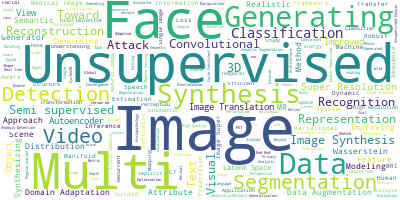
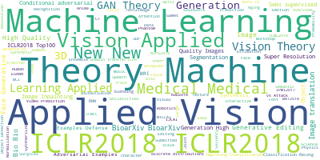

What is GANs?
GANs(Generative Adversarial Networks) are the models that used in unsupervised machine learning, implemented by a system of two neural networks competing against each other in a zero-sum game framework. It was introduced by Ian Goodfellow et al. in 2014.
 (Credit: O’Reilly)
(Credit: O’Reilly)
"The most important one, in my opinion, is adversarial training (also called GAN for Generative Adversarial Networks). This is an idea that was originally proposed by Ian Goodfellow when he was a student with Yoshua Bengio at the University of Montreal (he since moved to Google Brain and recently to OpenAI).
This, and the variations that are now being proposed is the most interesting idea in the last 10 years in ML, in my opinion."
(Facebook’s AI research director Yann LeCun)
What is this list?
The purpose of this repository is providing the curated list of the state-of-the-art works on the field of Generative Adversarial Networks since their introduction in 2014.

(Word cloud of Title)

(Word cloud of Category)
This list provides a curated list that merged information from various GAN lists and repositories as below:
Reference repositories
- [GAN zoo] - A list of all named GANs! by hindupuravinash
- Delving deep into Generative Adversarial Networks (GANs) [Delving] by GKalliatakis
- Awesome GAN for Medical Imaging [Medical] by xinario
- [Adversarial Nets Papers] The classic about Generative Adversarial Networks
- [Really Awesome GAN] by nightrome
- [GANs Paper Collection] by shawnyuen
- [GAN awesome applications] by nashory
- [GAN timeline] by dongb5
- [GAN comparison without cherry-picking] by khanrc
- Collection of generative models in [Keras], [Pytorch version], [Tensorflow version], [Chainer version]
- [Tensor layer]
- [Tensor pack]
You can also check out the same data in a tabular format with functionality to filter by year or do a quick search by title here.
Contributions for this repository are always welcome!!
Please contact me at hollobit@etri.re.kr or send a pull request. You can have to add links through pull requests or create an issue which something I missed or need to start a discussion.
All GANs
What's new
- A Classification-Based Study of Covariate Shift in GAN Distributions (No: 1142)
- [Search] [Scholar][PDF] [arXiv] - `2018/7` `New, ICML2018`
- A Two-Step Computation of the Exact GAN Wasserstein Distance (No: 1148)
- [Search] [Scholar][PDF] [arXiv] - `2018/7` `New, ICML2018`
- Adversarial?Learning for Fine-grained Image Search (No: 1170)
- [Search] [Scholar][PDF] [arXiv] - `2018/7` `New`
- Adversarial?Perturbations Against Real-Time Video Classification Systems (No: 1183)
- [Search] [Scholar][PDF] [arXiv] - `2018/7` `New`
- Adversarial?training of quantum Born machine (No: 1175)
- [Search] [Scholar][PDF] [arXiv] - `2018/7` `New`
- Ambient Hidden Space of?Generative?Adversarial?Networks (No: 1180)
- [Search] [Scholar][PDF] [arXiv] - `2018/7` `New`
- Augmented Cyclic?Adversarial?Learning for Domain Adaptation (No: 1185)
- [Search] [Scholar][PDF] [arXiv] - `2018/7` `New, Augmentation`
- Channel Agnostic End-to-End Learning based Communication Systems with Conditional?GAN (No: 1184)
- [Search] [Scholar][PDF] [arXiv] - `2018/7` `New`
- Chi-square Generative Adversarial Network (No: 1141)
- [Search] [Scholar][PDF] [arXiv] - `2018/7` `New, ICML2018`
- Composite Functional Gradient Learning of Generative Adversarial Models (No: 1147)
- [Search] [Scholar][PDF] [arXiv] - `2018/7` `New, ICML2018`
- Continuous-Time Flows for Efficient Inference and Density Estimation (No: 1144)
- [Search] [Scholar][PDF] [arXiv] - `2018/7` `New, ICML2018`
- CyCADA: Cycle-Consistent Adversarial Domain Adaptation (No: 1154)
- [Search] [Scholar][PDF] [arXiv] - `2018/7` `New, ICML2018` `CyCADA`
- Distillation Techniques for Pseudo-rehearsal Based Incremental Learning (No: 1166)
- [Search] [Scholar][PDF] [arXiv] - `2018/7` `New`
- Distilling the Posterior in Bayesian Neural Networks (No: 1153)
- [Search] [Scholar][PDF] [arXiv] - `2018/7` `New, ICML2018`
- From Rank Estimation to Rank Approximation: Rank Residual Constraint for Image Denoising (No: 1168)
- [Search] [Scholar][PDF] [arXiv] - `2018/7` `New`
- GAIN: Missing Data Imputation using Generative Adversarial Nets (No: 1149)
- [Search] [Scholar][PDF] [arXiv] - `2018/7` `New, ICML2018` `GAIN`
- Generating?Multi-Categorical Samples with?Generative?Adversarial?Networks (No: 1176)
- [Search] [Scholar][PDF] [arXiv] - `2018/7` `New, ICML2018`
- Generating?Synthetic but Plausible Healthcare Record Datasets (No: 1173)
- [Search] [Scholar][PDF] [arXiv] - `2018/7` `Medical: HER` `New, MLMH 2018`
- High-Resolution Mammogram Synthesis using Progressive?Generative Adversarial?Networks (No: 1164)
- [Search] [Scholar][PDF] [arXiv] - `2018/7` `Medical: Synthersize` `New`
- K-Beam Minimax: Efficient Optimization for Deep Adversarial Learning (No: 1151)
- [Search] [Scholar][PDF] [arXiv] - `2018/7` `New, ICML2018`
- Learning Implicit Generative Models with the Method of Learned Moments (No: 1145)
- [Search] [Scholar][PDF] [arXiv] - `2018/7` `New, ICML2018`
- Mirror descent in saddle-point problems: Going the extra (gradient) mile (No: 1167)
- [Search] [Scholar][PDF] [arXiv] - `2018/7` `New`
- Mixed batches and symmetric discriminators for GAN training (No: 1156)
- [Search] [Scholar][PDF] [arXiv] - `2018/7` `New, ICML2018`
- MIXGAN: Learning Concepts from Different Domains for Mixture?Generation (No: 1172)
- [Search] [Scholar][PDF] [arXiv] - `2018/7` `New, IJCAI-ECAI 2018`
- Modular Vehicle Control for Transferring Semantic Information to Unseen Weather Conditions using?GANs (No: 1178)
- [Search] [Scholar][PDF] [arXiv] - `2018/7` `New`
- Multi-Task?Generative?Adversarial?Nets with Shared Memory for Cross-Domain Coordination Control (No: 1186)
- [Search] [Scholar][PDF] [arXiv] - `2018/7` `New`
- New Losses for?Generative?Adversarial?Learning (No: 1174)
- [Search] [Scholar][PDF] [arXiv] - `2018/7` `New, NIPS 2018`
- On the Limitations of First-Order Approximation in GAN Dynamics (No: 1155)
- [Search] [Scholar][PDF] [arXiv] - `2018/7` `New, ICML2018`
- Performance Comparison of Convolutional AutoEncoders,?Generative Adversarial?Networks?and Super-Resolution for Image Compression (No: 1187)
- [Search] [Scholar][PDF] [arXiv] - `2018/7` `New, Super Resolution`
- Pioneer?Networks: Progressively Growing?Generative?Autoencoder (No: 1165)
- [Search] [Scholar][PDF] [arXiv] - `2018/7` `New`
- Precise simulation of electromagnetic calorimeter showers using a Wasserstein?Generative?Adversarial?Network (No: 1171)
- [Search] [Scholar][PDF] [arXiv] - `2018/7` `New`
- Resembled?Generative?Adversarial?Networks: Two Domains with Similar Attributes (No: 1179)
- [Search] [Scholar][PDF] [arXiv] - `2018/7` `New`
- Semi-supervised Anomaly Detection Using?GANs?for Visual Inspection in Noisy Training Data (No: 1177)
- [Search] [Scholar][PDF] [arXiv] - `2018/7` `New`
- Singing Style Transfer Using Cycle-Consistent Boundary Equilibrium?GenerativeAdversarial?Networks (No: 1169)
- [Search] [Scholar][PDF] [arXiv] - `2018/7` `New, ICML Workshop 2018`
- Synthesizing Programs for Images using Reinforced Adversarial Learning (No: 1152)
- [Search] [Scholar][PDF] [arXiv] - `2018/7` `New, ICML2018`
- Synthesizing Robust Adversarial Examples (No: 1143)
- [Search] [Scholar][PDF] [arXiv] - `2018/7` `New, ICML2018`
- The Mechanics of n-Player Differentiable Games (No: 1150)
- [Search] [Scholar][PDF] [arXiv] - `2018/7` `New, ICML2018`
- The relativistic discriminator: a key element missing from standard?GAN (No: 1182)
- [Search] [Scholar][PDF] [arXiv] - `2018/7` `New`
- Theoretical Analysis of Image-to-Image Translation with Adversarial Learning (No: 1146)
- [Search] [Scholar][PDF] [arXiv] - `2018/7` `New, ICML2018`
- Understanding the Effectiveness of Lipschitz Constraint in Training of?GANs?via Gradient Analysis (No: 1181)
- [Search] [Scholar][PDF] [arXiv] - `2018/7` `New, NIPS 2018`
- Which Training Methods for GANs do actually Converge? (No: 1140)
- [Search] [Scholar][PDF] [arXiv] - `2018/7` `New, ICML2018`
- Convergence Problems with?Generative?Adversarial?Networks?(GANs) (No: 1159)
- [Search] [Scholar][PDF] [arXiv] - `2018/6` `New`
- CR-GAN: Learning Complete Representations for Multi-view?Generation (No: 1162)
- [Search] [Scholar][PDF] [arXiv] - `2018/6` `New` `CR-GAN`
- Excavate Condition-invariant Space by Intrinsic Encoder (No: 1160)
- [Search] [Scholar][PDF] [arXiv] - `2018/6` `New`
- Generate?the corresponding Image from Text Description using Modified?GAN-CLS Algorithm (No: 1161)
- [Search] [Scholar][PDF] [arXiv] - `2018/6` `New` `GAN-CLS`
- Using?General?Adversarial?Networks?for Marketing: A Case Study of Airbnb (No: 1158)
- [Search] [Scholar][PDF] [arXiv] - `2018/6` `New`
- 3-D Convolutional Encoder-Decoder Network for Low-Dose CT via Transfer Learning From a 2-D Trained Network (No: 1064)
- [Search] [Scholar][arXiv] - `2018/5` `Medical: Synthersize` `New, 3D, LD-CT`
- Medical Image Synthesis with Deep Convolutional Adversarial Networks (No: 1157)
- [Search] [Scholar][arXiv] - `2018/3` `Medical: Synthersize` `New`
- A Bayesian Data Augmentation Approach for Learning Deep Models (No: 1163)
- [Search] [Scholar][PDF] [arXiv] - `2017/10` `New, Augmentation`
- Adversarial Variational Bayes: Unifying Variational Autoencoders and Generative Adversarial Networks (No: 1135)
- [Search] [Scholar][PDF] [arXiv] [Web] - `2017/8` `New, ICML2017`
- End-to-End Differentiable Adversarial Imitation Learning (No: 1138)
- [Search] [Scholar][PDF] [arXiv] [Web] - `2017/8` `New, ICML2017`
- GSOS: Gauss-Seidel Operator Splitting Algorithm for Multi-Term Nonsmooth Convex Composite Optimization (No: 1136)
- [Search] [Scholar][PDF] [arXiv] [Web] - `2017/8` `New, ICML2017` `GSOS`
- On the Expressive Power of Deep Neural Networks (No: 1139)
- [Search] [Scholar][PDF] [arXiv] [Web] - `2017/8` `New, ICML2017`
- Wasserstein Generative Adversarial Networks (No: 1137)
- [Search] [Scholar][PDF] [arXiv] [Web] - `2017/8` `New, ICML2017`
2018
- Coupled generative adversarial stacked Auto-encoder: CoGASA (No: 695)
- [Search] [Scholar][arXiv] [Web] - `2018/` `CoGASA`
- Fine-Tuning Neural Patient Question Retrieval Model with Generative Adversarial Networks (No: 969)
- [Search] [Scholar][PDF] [Web] - `2018/` `Medical: Enhancement` `Medical`
- 3D conditional generative adversarial networks for high-quality PET image estimation at low dose (No: 950)
- [Search] [Scholar][arXiv] [Web] - `2018/7` `Medical: Reconstruction` `3D, CT`
- A Classification-Based Study of Covariate Shift in GAN Distributions (No: 1142)
- [Search] [Scholar][PDF] [arXiv] - `2018/7` `New, ICML2018`
- A Two-Step Computation of the Exact GAN Wasserstein Distance (No: 1148)
- [Search] [Scholar][PDF] [arXiv] - `2018/7` `New, ICML2018`
- Adversarial?Learning for Fine-grained Image Search (No: 1170)
- [Search] [Scholar][PDF] [arXiv] - `2018/7` `New`
- Adversarial?Perturbations Against Real-Time Video Classification Systems (No: 1183)
- [Search] [Scholar][PDF] [arXiv] - `2018/7` `New`
- Adversarial?training of quantum Born machine (No: 1175)
- [Search] [Scholar][PDF] [arXiv] - `2018/7` `New`
- Ambient Hidden Space of?Generative?Adversarial?Networks (No: 1180)
- [Search] [Scholar][PDF] [arXiv] - `2018/7` `New`
- Augmented Cyclic?Adversarial?Learning for Domain Adaptation (No: 1185)
- [Search] [Scholar][PDF] [arXiv] - `2018/7` `New, Augmentation`
- Channel Agnostic End-to-End Learning based Communication Systems with Conditional?GAN (No: 1184)
- [Search] [Scholar][PDF] [arXiv] - `2018/7` `New`
- Chi-square Generative Adversarial Network (No: 1141)
- [Search] [Scholar][PDF] [arXiv] - `2018/7` `New, ICML2018`
- Composite Functional Gradient Learning of Generative Adversarial Models (No: 1147)
- [Search] [Scholar][PDF] [arXiv] - `2018/7` `New, ICML2018`
- Continuous-Time Flows for Efficient Inference and Density Estimation (No: 1144)
- [Search] [Scholar][PDF] [arXiv] - `2018/7` `New, ICML2018`
- CyCADA: Cycle-Consistent Adversarial Domain Adaptation (No: 1154)
- [Search] [Scholar][PDF] [arXiv] - `2018/7` `New, ICML2018` `CyCADA`
- Distillation Techniques for Pseudo-rehearsal Based Incremental Learning (No: 1166)
- [Search] [Scholar][PDF] [arXiv] - `2018/7` `New`
- Distilling the Posterior in Bayesian Neural Networks (No: 1153)
- [Search] [Scholar][PDF] [arXiv] - `2018/7` `New, ICML2018`
- From Rank Estimation to Rank Approximation: Rank Residual Constraint for Image Denoising (No: 1168)
- [Search] [Scholar][PDF] [arXiv] - `2018/7` `New`
- GAIN: Missing Data Imputation using Generative Adversarial Nets (No: 1149)
- [Search] [Scholar][PDF] [arXiv] - `2018/7` `New, ICML2018` `GAIN`
- Generating?Multi-Categorical Samples with?Generative?Adversarial?Networks (No: 1176)
- [Search] [Scholar][PDF] [arXiv] - `2018/7` `New, ICML2018`
- Generating?Synthetic but Plausible Healthcare Record Datasets (No: 1173)
- [Search] [Scholar][PDF] [arXiv] - `2018/7` `Medical: HER` `New, MLMH 2018`
- High-Resolution Mammogram Synthesis using Progressive?Generative Adversarial?Networks (No: 1164)
- [Search] [Scholar][PDF] [arXiv] - `2018/7` `Medical: Synthersize` `New`
- K-Beam Minimax: Efficient Optimization for Deep Adversarial Learning (No: 1151)
- [Search] [Scholar][PDF] [arXiv] - `2018/7` `New, ICML2018`
- Learning Implicit Generative Models with the Method of Learned Moments (No: 1145)
- [Search] [Scholar][PDF] [arXiv] - `2018/7` `New, ICML2018`
- Mirror descent in saddle-point problems: Going the extra (gradient) mile (No: 1167)
- [Search] [Scholar][PDF] [arXiv] - `2018/7` `New`
- Mixed batches and symmetric discriminators for GAN training (No: 1156)
- [Search] [Scholar][PDF] [arXiv] - `2018/7` `New, ICML2018`
- MIXGAN: Learning Concepts from Different Domains for Mixture?Generation (No: 1172)
- [Search] [Scholar][PDF] [arXiv] - `2018/7` `New, IJCAI-ECAI 2018`
- Modular Vehicle Control for Transferring Semantic Information to Unseen Weather Conditions using?GANs (No: 1178)
- [Search] [Scholar][PDF] [arXiv] - `2018/7` `New`
- Multi-Task?Generative?Adversarial?Nets with Shared Memory for Cross-Domain Coordination Control (No: 1186)
- [Search] [Scholar][PDF] [arXiv] - `2018/7` `New`
- New Losses for?Generative?Adversarial?Learning (No: 1174)
- [Search] [Scholar][PDF] [arXiv] - `2018/7` `New, NIPS 2018`
- On the Limitations of First-Order Approximation in GAN Dynamics (No: 1155)
- [Search] [Scholar][PDF] [arXiv] - `2018/7` `New, ICML2018`
- Performance Comparison of Convolutional AutoEncoders,?Generative Adversarial?Networks?and Super-Resolution for Image Compression (No: 1187)
- [Search] [Scholar][PDF] [arXiv] - `2018/7` `New, Super Resolution`
- Pioneer?Networks: Progressively Growing?Generative?Autoencoder (No: 1165)
- [Search] [Scholar][PDF] [arXiv] - `2018/7` `New`
- Precise simulation of electromagnetic calorimeter showers using a Wasserstein?Generative?Adversarial?Network (No: 1171)
- [Search] [Scholar][PDF] [arXiv] - `2018/7` `New`
- Remote sensing image scene classification based on generative adversarial networks (No: 992)
- [Search] [Scholar][arXiv] - `2018/7` `Medical: Classification` `Medical`
- Resembled?Generative?Adversarial?Networks: Two Domains with Similar Attributes (No: 1179)
- [Search] [Scholar][PDF] [arXiv] - `2018/7` `New`
- Semi-supervised Anomaly Detection Using?GANs?for Visual Inspection in Noisy Training Data (No: 1177)
- [Search] [Scholar][PDF] [arXiv] - `2018/7` `New`
- Singing Style Transfer Using Cycle-Consistent Boundary Equilibrium?GenerativeAdversarial?Networks (No: 1169)
- [Search] [Scholar][PDF] [arXiv] - `2018/7` `New, ICML Workshop 2018`
- Synthesizing Programs for Images using Reinforced Adversarial Learning (No: 1152)
- [Search] [Scholar][PDF] [arXiv] - `2018/7` `New, ICML2018`
- Synthesizing Robust Adversarial Examples (No: 1143)
- [Search] [Scholar][PDF] [arXiv] - `2018/7` `New, ICML2018`
- The Mechanics of n-Player Differentiable Games (No: 1150)
- [Search] [Scholar][PDF] [arXiv] - `2018/7` `New, ICML2018`
- The relativistic discriminator: a key element missing from standard?GAN (No: 1182)
- [Search] [Scholar][PDF] [arXiv] - `2018/7` `New`
- Theoretical Analysis of Image-to-Image Translation with Adversarial Learning (No: 1146)
- [Search] [Scholar][PDF] [arXiv] - `2018/7` `New, ICML2018`
- Understanding the Effectiveness of Lipschitz Constraint in Training of?GANs?via Gradient Analysis (No: 1181)
- [Search] [Scholar][PDF] [arXiv] - `2018/7` `New, NIPS 2018`
- Which Training Methods for GANs do actually Converge? (No: 1140)
- [Search] [Scholar][PDF] [arXiv] - `2018/7` `New, ICML2018`
- A Generative Adversarial Approach for Zero-Shot Learning From Noisy Texts (No: 1107)
- [Search] [Scholar][PDF] [arXiv] - `2018/6` `CVPR 2018`
- A Memristor based Unsupervised Neuromorphic System Towards Fast and Energy-Efficient GAN (No: 1004)
- [Search] [Scholar][PDF] [arXiv] - `2018/6`
- A Multimodal Classifier Generative Adversarial Network for Carry and Place Tasks from Ambiguous Language Instructions (No: 1041)
- [Search] [Scholar][PDF] [arXiv] - `2018/6`
- Adversarial Auto-encoders for Speech Based Emotion Recognition (No: 1052)
- [Search] [Scholar][PDF] [arXiv] - `2018/6` `Speech Recognition`
- Adversarial Distillation of Bayesian Neural Network Posteriors (No: 1092)
- [Search] [Scholar][PDF] [arXiv] - `2018/6`
- Adversarial Learning with Local Coordinate Coding (No: 1033)
- [Search] [Scholar][PDF] [arXiv] - `2018/6` `ICML2018`
- An Effective Image Denoising Method for UAV Images via Improved?Generative?AdversarialNetworks (No: 1117)
- [Search] [Scholar][PDF] [arXiv] - `2018/6` `Medical: Denoising`
- An empirical study on evaluation metrics of generative adversarial networks (No: 1017)
- [Search] [Scholar][PDF] [arXiv] - `2018/6`
- Approximability of Discriminators Implies Diversity in GANs (No: 1090)
- [Search] [Scholar][PDF] [arXiv] - `2018/6`
- Banach Wasserstein GAN (No: 1026)
- [Search] [Scholar][PDF] [arXiv] - `2018/6`
- Beyond Local Nash Equilibria for Adversarial Networks (No: 1019)
- [Search] [Scholar][PDF] [arXiv] - `2018/6`
- BFGAN: Backward and Forward Generative Adversarial Networks for Lexically Constrained Sentence Generation (No: 1014)
- [Search] [Scholar][PDF] [arXiv] - `2018/6` `BFGAN`
- BinGAN: Learning Compact Binary Descriptors with a Regularized GAN (No: 1024)
- [Search] [Scholar][PDF] [arXiv] - `2018/6` `BinGAN`
- CapsGAN: Using Dynamic Routing for Generative Adversarial Networks (No: 1039)
- [Search] [Scholar][PDF] [arXiv] - `2018/6` `CapsGAN`
- CartoonGAN: Generative Adversarial Networks for Photo Cartoonization (No: 1116)
- [Search] [Scholar][PDF] [arXiv] - `2018/6` `CVPR 2018` `CatoonGAN`
- Conditional Generative Adversarial Network for Structured Domain Adaptation (No: 1108)
- [Search] [Scholar][PDF] [arXiv] - `2018/6` `CVPR 2018`
- Convergence Problems with?Generative?Adversarial?Networks?(GANs) (No: 1159)
- [Search] [Scholar][PDF] [arXiv] - `2018/6` `New`
- CR-GAN: Learning Complete Representations for Multi-view?Generation (No: 1162)
- [Search] [Scholar][PDF] [arXiv] - `2018/6` `New` `CR-GAN`
- Cross-dataset Person Re-Identification Using Similarity Preserved Generative Adversarial Networks (No: 1035)
- [Search] [Scholar][PDF] [arXiv] - `2018/6`
- CT-Realistic Lung Nodule Simulation from 3D Conditional Generative Adversarial Networks for Robust Lung Segmentation (No: 1037)
- [Search] [Scholar][PDF] [arXiv] - `2018/6` `Medical: Segmentation` `3D`
- Customizing an Adversarial Example Generator with Class-Conditional GANs (No: 1091)
- [Search] [Scholar][PDF] [arXiv] - `2018/6`
- Data Synthesis based on Generative Adversarial Networks (No: 1046)
- [Search] [Scholar][PDF] [arXiv] - `2018/6` `Data Synthesis`
- Digital radiography image denoising using a?generative?adversarial?network (No: 1119)
- [Search] [Scholar][PDF] [arXiv] - `2018/6` `Medical: Denoising`
- Disentangling Multiple Conditional Inputs in GANs (No: 1015)
- [Search] [Scholar][PDF] [arXiv] - `2018/6` `KDD2018`
- Duplex Generative Adversarial Network for Unsupervised Domain Adaptation (No: 1109)
- [Search] [Scholar][PDF] [arXiv] - `2018/6` `CVPR 2018`
- EEG-GAN: Generative adversarial networks for electroencephalograhic (EEG) brain signals (No: 1054)
- [Search] [Scholar][PDF] [arXiv] - `2018/6` `Medical: EEG` `EEG-GAN`
- Efficient Active Learning for Image Classification and Segmentation using a Sample Selection and Conditional Generative Adversarial Network (No: 1030)
- [Search] [Scholar][PDF] [arXiv] - `2018/6` `Medical: Segmentation`
- EL-GAN: Embedding Loss Driven Generative Adversarial Networks for Lane Detection (No: 1029)
- [Search] [Scholar][PDF] [arXiv] - `2018/6` `Lane Detection` `EL-GAN`
- Excavate Condition-invariant Space by Intrinsic Encoder (No: 1160)
- [Search] [Scholar][PDF] [arXiv] - `2018/6` `New`
- ExoGAN: Retrieving Exoplanetary Atmospheres Using Deep Convolutional Generative AdversarialNetworks (No: 1049)
- [Search] [Scholar][PDF] [arXiv] - `2018/6` `ExoGAN`
- Exploiting the potential of unlabeled endoscopic video data with self-supervised learning (No: 978)
- [Search] [Scholar][arXiv] [Web] - `2018/6` `Medical: Synthersize` `Medical`
- Face Aging With Identity-Preserved Conditional Generative Adversarial Networks (No: 1114)
- [Search] [Scholar][PDF] [arXiv] - `2018/6` `CVPR 2018`
- Finding Tiny Faces in the Wild With Generative Adversarial Network (No: 1106)
- [Search] [Scholar][PDF] - `2018/6` `CVPR 2018`
- FrankenGAN: Guided Detail Synthesis for Building Mass-Models Using Style-Synchonized GANs (No: 1022)
- [Search] [Scholar][PDF] [arXiv] - `2018/6` `FrankenGAN`
- Fully Connected Networks and Generative Neural Networks Applied to Sclera Segmentation (No: 1012)
- [Search] [Scholar][PDF] [arXiv] - `2018/6` `Segmentation, BAT2018`
- GANAX: A Unified MIMD-SIMD Acceleration for Generative Adversarial Networks (No: 1005)
- [Search] [Scholar][PDF] [arXiv] - `2018/6` `GANAX`
- Generate?the corresponding Image from Text Description using Modified?GAN-CLS Algorithm (No: 1161)
- [Search] [Scholar][PDF] [arXiv] - `2018/6` `New` `GAN-CLS`
- Generating Image Sequence from Description with LSTM Conditional GAN (No: 1047)
- [Search] [Scholar][PDF] [arXiv] - `2018/6`
- Generating Synthetic CTs from Magnetic Resonance Images using?Generative?Adversarial Networks (No: 1118)
- [Search] [Scholar][PDF] [arXiv] - `2018/6` `Medical: Synthersize`
- Generative Adversarial Learning Towards Fast Weakly Supervised Detection (No: 1113)
- [Search] [Scholar][PDF] [arXiv] - `2018/6` `CVPR 2018`
- Generative Adversarial Nets for Information Retrieval: Fundamentals and Advances (No: 1045)
- [Search] [Scholar][PDF] [arXiv] - `2018/6` `SIGIR2018`
- Generative Adversarial Network Architectures For Image Synthesis Using Capsule Networks (No: 1042)
- [Search] [Scholar][PDF] [arXiv] - `2018/6` `NIPS2018`
- Generative adversarial network based telecom fraud detection at the receiving bank (No: 980)
- [Search] [Scholar][arXiv] [Web] - `2018/6` `Medical: Classification`
- Generative Adversarial Networks and Perceptual Losses for Video Super-Resolution (No: 1028)
- [Search] [Scholar][PDF] [arXiv] - `2018/6` `Super Resolution`
- Generative Adversarial Networks for Image-to-Image Translation on Multi-Contrast MR Images - A Comparison of CycleGAN and UNIT (No: 1016)
- [Search] [Scholar][PDF] [arXiv] - `2018/6` `Medical: Translation`
- Generative Adversarial Networks for Realistic Synthesis of Hyperspectral Samples (No: 1050)
- [Search] [Scholar][PDF] [arXiv] - `2018/6` `IGARSS 2018`
- Generative Adversarial Perturbations (No: 1112)
- [Search] [Scholar][PDF] [arXiv] - `2018/6` `CVPR 2018`
- Hierarchy of GANs for learning embodied self-awareness model (No: 1038)
- [Search] [Scholar][PDF] [arXiv] - `2018/6`
- High Diversity Attribute Guided Face Generation with GANs (No: 1088)
- [Search] [Scholar][PDF] [arXiv] - `2018/6`
- Image Blind Denoising With Generative Adversarial Network Based Noise Modeling (No: 1110)
- [Search] [Scholar][PDF] [arXiv] - `2018/6` `CVPR 2018`
- Improving brain computer interface performance by data augmentation with conditional Deep Convolutional Generative Adversarial Networks (No: 1023)
- [Search] [Scholar][PDF] [arXiv] - `2018/6` `BCI, Augmentation`
- Improving Surgical Training Phantoms by Hyperrealism: Deep Unpaired Image-to-Image Translation from Real Surgeries (No: 1044)
- [Search] [Scholar][PDF] [arXiv] - `2018/6` `Medical: Translation` `Surgical Phantom`
- Instance Map based Image Synthesis with a Denoising GenerativeAdversarial Network (No: 1095)
- [Search] [Scholar][arXiv] - `2018/6`
- Integral Privacy for Density Estimation with Approximation Guarantees (No: 1034)
- [Search] [Scholar][PDF] [arXiv] - `2018/6`
- IR2VI: Enhanced Night Environmental Perception by Unsupervised Thermal Image Translation (No: 1009)
- [Search] [Scholar][PDF] [arXiv] - `2018/6` `IR2VI`
- JointGAN: Multi-Domain Joint Distribution Learning with Generative Adversarial Nets (No: 1048)
- [Search] [Scholar][PDF] [arXiv] - `2018/6` `ICML2018` `JointGAN`
- JR-GAN: Jacobian Regularization for Generative Adversarial Networks (No: 1010)
- [Search] [Scholar][PDF] [arXiv] - `2018/6` `JR-GAN`
- Luigi: Large-scale histopathological image retrieval system using deep texture representations (No: 1055)
- [Search] [Scholar][PDF] [arXiv] - `2018/6` `Medical: Representation` `Luigi`
- MedGAN: Medical Image Translation using GANs (No: 1027)
- [Search] [Scholar][PDF] [arXiv] - `2018/6` `Medical: Translation` `MedGAN`
- Mixed batches and symmetric discriminators for GAN training (No: 1021)
- [Search] [Scholar][PDF] [arXiv] - `2018/6` `ICML2018`
- Multi-chart Generative Surface Modeling (No: 1053)
- [Search] [Scholar][PDF] [arXiv] - `2018/6`
- On Accurate Evaluation of GANs for Language Generation (No: 1032)
- [Search] [Scholar][PDF] [arXiv] - `2018/6`
- On Enhancing Speech Emotion Recognition using Generative Adversarial Networks (No: 1025)
- [Search] [Scholar][PDF] [arXiv] - `2018/6` `Speech Emotion Recognition`
- Privacy-Protective-GAN for Face De-identification (No: 1011)
- [Search] [Scholar][PDF] [arXiv] - `2018/6`
- Retinal Optic Disc Segmentation using Conditional Generative Adversarial Network (No: 1040)
- [Search] [Scholar][PDF] [arXiv] - `2018/6` `Optic Disc Segmentation`
- Semi-supervised Seizure Prediction with Generative Adversarial Networks (No: 1013)
- [Search] [Scholar][PDF] [arXiv] - `2018/6`
- Single Image Dehazing via Conditional Generative Adversarial Network (No: 1115)
- [Search] [Scholar][PDF] [arXiv] - `2018/6` `CVPR 2018`
- Sounderfeit: Cloning a Physical Model using a Conditional Adversarial Autoencoder (No: 1093)
- [Search] [Scholar][PDF] [arXiv] - `2018/6`
- Speech-Driven Expressive Talking Lips with Conditional Sequential GenerativeAdversarial Networks (No: 1006)
- [Search] [Scholar][PDF] [arXiv] - `2018/6` `Speech`
- StarGAN-VC: Non-parallel many-to-many voice conversion with star generative adversarial networks (No: 1051)
- [Search] [Scholar][PDF] [arXiv] - `2018/6` `StarGAN-VC`
- Stochastic seismic waveform inversion using generative adversarial networks as a geological prior (No: 1043)
- [Search] [Scholar][PDF] [arXiv] - `2018/6`
- Task Driven Generative Modeling for Unsupervised Domain Adaptation: Application to X-ray Image Segmentation (No: 1020)
- [Search] [Scholar][PDF] [arXiv] - `2018/6` `Medical: Segmentation`
- The Unusual Effectiveness of Averaging in GAN Training (No: 1036)
- [Search] [Scholar][PDF] [arXiv] - `2018/6`
- Thermal to Visible Facial Image Translation Using Generative AdversarialNetworks (No: 1094)
- [Search] [Scholar][arXiv] - `2018/6`
- Training Discriminative Models to Evaluate Generative Ones (No: 1089)
- [Search] [Scholar][PDF] [arXiv] - `2018/6`
- Unsupervised Deep Generative Adversarial Hashing Network (No: 1111)
- [Search] [Scholar][PDF] [arXiv] - `2018/6` `CVPR 2018`
- Using?General?Adversarial?Networks?for Marketing: A Case Study of Airbnb (No: 1158)
- [Search] [Scholar][PDF] [arXiv] - `2018/6` `New`
- Versatile Auxiliary Classifier with Generative Adversarial Network (VAC+GAN), Multi Class Scenarios (No: 1018)
- [Search] [Scholar][PDF] [arXiv] - `2018/6`
- What Is It Like Down There? Generating Dense Ground-Level Views and Image Features From Overhead Imagery Using Conditional Generative Adversarial Networks (No: 1031)
- [Search] [Scholar][PDF] [arXiv] - `2018/6`
- 3-D Convolutional Encoder-Decoder Network for Low-Dose CT via Transfer Learning From a 2-D Trained Network (No: 1064)
- [Search] [Scholar][arXiv] - `2018/5` `Medical: Synthersize` `New, 3D, LD-CT`
- A Generalized Active Learning Approach for Unsupervised Anomaly Detection (No: 932)
- [Search] [Scholar][PDF] [arXiv] - `2018/5`
- A Solvable High-Dimensional Model of GAN (No: 925)
- [Search] [Scholar][PDF] [arXiv] - `2018/5`
- Adaptive template generation for amyloid PET using a deep learning approach (No: 983)
- [Search] [Scholar][PDF] [arXiv] [Web] - `2018/5` `Medical: Synthersize` `Medical`
- An Unsupervised Approach to Solving Inverse Problems using Generative Adversarial Networks (No: 912)
- [Search] [Scholar][PDF] [arXiv] - `2018/5`
- Anime Style Space Exploration Using Metric Learning and Generative Adversarial Networks (No: 923)
- [Search] [Scholar][PDF] [arXiv] - `2018/5`
- Approximating the Void: Learning Stochastic Channel Models from Observation with Variational Generative Adversarial Networks (No: 906)
- [Search] [Scholar][PDF] [arXiv] - `2018/5`
- Artificial Intelligence Paradigm for Customer Experience Management in Next-Generation Networks: Challenges and Perspectives (No: 905)
- [Search] [Scholar][PDF] [arXiv] - `2018/5`
- Autonomously and Simultaneously Refining Deep Neural Network Parameters by Generative Adversarial Networks (No: 934)
- [Search] [Scholar][PDF] [arXiv] - `2018/5`
- Batch Normalization in the final layer of generative networks (No: 914)
- [Search] [Scholar][PDF] [arXiv] - `2018/5`
- BourGAN: Generative Networks with Metric Embeddings (No: 919)
- [Search] [Scholar][PDF] [arXiv] - `2018/5` `BourGAN`
- Capturing Variabilities from Computed Tomography Images with Generative Adversarial Networks (No: 955)
- [Search] [Scholar][PDF] [arXiv] - `2018/5` `Medical: Detection` `ESANN`
- Clustering With Pairwise Relationships: A Generative Approach (No: 888)
- [Search] [Scholar][PDF] [arXiv] - `2018/5`
- Conditional Generative Adversarial and Convolutional Networks for X-ray Breast Mass Segmentation and Shape Classification (No: 941)
- [Search] [Scholar][PDF] [arXiv] - `2018/5` `MICCAI 2018`
- Conditional molecular design with deep generative models (No: 877)
- [Search] [Scholar][PDF] [arXiv] - `2018/5`
- Cross Domain Image Generation through Latent Space Exploration with Adversarial Loss (No: 940)
- [Search] [Scholar][PDF] [arXiv] - `2018/5`
- Deep CT to MR Synthesis using Paired and Unpaired Data (No: 962)
- [Search] [Scholar][PDF] [arXiv] - `2018/5` `Medical: Synthersize` `Medical`
- Deep Generative Markov State Models (No: 917)
- [Search] [Scholar][PDF] [arXiv] - `2018/5`
- DeepEM: Deep 3D ConvNets With EM For Weakly Supervised Pulmonary Nodule Detection (No: 943)
- [Search] [Scholar][PDF] [arXiv] - `2018/5` `Bio, 3D` `DeepEM`
- Defense-GAN: Protecting Classifiers Against Adversarial Attacks Using Generative Models (No: 907)
- [Search] [Scholar][PDF] [arXiv] - `2018/5` `Defense-GAN`
- Detecting Deceptive Reviews using Generative Adversarial Networks (No: 958)
- [Search] [Scholar][PDF] [arXiv] - `2018/5`
- Diverse and Controllable Image Captioning with Part-of-Speech Guidance (No: 1007)
- [Search] [Scholar][PDF] [arXiv] - `2018/5`
- DSGAN: Generative Adversarial Training for Distant Supervision Relation Extraction (No: 937)
- [Search] [Scholar][PDF] [arXiv] - `2018/5` `DSGAN`
- Dyna Planning using a Feature Based Generative Model (No: 939)
- [Search] [Scholar][PDF] [arXiv] - `2018/5`
- Elastic Registration of Medical Images With GANs (No: 889)
- [Search] [Scholar][PDF] [arXiv] - `2018/5` `Medical: Classification`
- End-to-End Speech-Driven Facial Animation with Temporal GANs (No: 931)
- [Search] [Scholar][PDF] [arXiv] - `2018/5`
- Evolving Mario Levels in the Latent Space of a Deep Convolutional Generative Adversarial Network (No: 882)
- [Search] [Scholar][PDF] [arXiv] - `2018/5`
- Exploiting Images for Video Recognition with Hierarchical Generative Adversarial Networks (No: 899)
- [Search] [Scholar][PDF] [arXiv] - `2018/5`
- Exploring the Potential of Generative Adversarial Networks for Synthesizing Radiological Images of the Spine to be Used inIn Silico Trials. (No: 967)
- [Search] [Scholar][PDF] [arXiv] [Web] - `2018/5` `Medical: Synthersize` `Medical`
- Exploring the Potential of?Generative?Adversarial?Networks for Synthesizing Radiological Images of the Spine to be Used in?In Silico?Trials. (No: 1121)
- [Search] [Scholar][PDF] [arXiv] - `2018/5` `Medical: Synthersize`
- FairGAN: Fairness-aware Generative Adversarial Networks (No: 956)
- [Search] [Scholar][PDF] [arXiv] - `2018/5` `FairGAN`
- Fairness GAN (No: 936)
- [Search] [Scholar][PDF] [arXiv] - `2018/5`
- Fast-converging Conditional Generative Adversarial Networks for Image Synthesis (No: 887)
- [Search] [Scholar][PDF] [arXiv] - `2018/5`
- Featurized Bidirectional GAN: Adversarial Defense via Adversarially Learned Semantic Inference (No: 921)
- [Search] [Scholar][PDF] [arXiv] - `2018/5`
- GAN Q-learning (No: 901)
- [Search] [Scholar][PDF] [arXiv] - `2018/5`
- GANE: A Generative Adversarial Network Embedding (No: 913)
- [Search] [Scholar][PDF] [arXiv] - `2018/5` `GANE`
- Generalized Cross Entropy Loss for Training Deep Neural Networks with Noisy Labels (No: 920)
- [Search] [Scholar][PDF] [arXiv] - `2018/5`
- Generating Continuous Representations of Medical Texts (No: 904)
- [Search] [Scholar][PDF] [arXiv] - `2018/5` `Medical: Representation`
- Generative Adversarial Examples (No: 922)
- [Search] [Scholar][PDF] [arXiv] - `2018/5`
- Generative Adversarial Forests for Better Conditioned Adversarial Learning (No: 903)
- [Search] [Scholar][PDF] [arXiv] - `2018/5`
- Generative Adversarial Image Synthesis with Decision Tree Latent Controller (No: 964)
- [Search] [Scholar][PDF] [arXiv] - `2018/5` `CVPR 2018`
- Generative Creativity: Adversarial Learning for Bionic Design (No: 918)
- [Search] [Scholar][PDF] [arXiv] - `2018/5`
- Generative Model: Membership Attack,Generalization and Diversity (No: 935)
- [Search] [Scholar][PDF] [arXiv] - `2018/5`
- Generative networks as inverse problems with Scattering transforms (No: 908)
- [Search] [Scholar][PDF] [arXiv] - `2018/5`
- Generic Deriving of Generic Traversals (No: 909)
- [Search] [Scholar][PDF] [arXiv] - `2018/5`
- High Quality Bidirectional Generative Adversarial Networks (No: 965)
- [Search] [Scholar][PDF] [arXiv] - `2018/5`
- High-resolution medical image synthesis using progressively grown generative adversarial networks (No: 893)
- [Search] [Scholar][PDF] [arXiv] - `2018/5` `Medical: Synthersize`
- Human Action Generation with Generative Adversarial Networks (No: 961)
- [Search] [Scholar][PDF] [arXiv] - `2018/5`
- Image-derived generative modeling of pseudo-macromolecular structures - towards the statistical assessment of Electron CryoTomography template matching (No: 900)
- [Search] [Scholar][PDF] [arXiv] - `2018/5`
- Improving GAN Training via Binarized Representation Entropy (BRE) Regularization (No: 896)
- [Search] [Scholar][PDF] [arXiv] - `2018/5`
- Improving Image Captioning with Conditional Generative Adversarial Nets (No: 910)
- [Search] [Scholar][PDF] [arXiv] - `2018/5`
- Improving resolution of MR images with an adversarial network in corporating images with different contrast (No: 975)
- [Search] [Scholar][arXiv] [Web] - `2018/5` `Medical: Enhancement` `Medical`
- Learning and Inference Movement with Deep Generative Model (No: 911)
- [Search] [Scholar][PDF] [arXiv] - `2018/5`
- Learning Data Augmentation for Brain Tumor Segmentation with Coarse-to-Fine Generative Adversarial Networks (No: 957)
- [Search] [Scholar][PDF] [arXiv] - `2018/5` `Medical: Segmentation` `Augmentation`
- Learning Temporal Strategic Relationships using Generative Adversarial Imitation Learning (No: 902)
- [Search] [Scholar][PDF] [arXiv] - `2018/5`
- Learning to Repair Software Vulnerabilities with Generative Adversarial Networks (No: 915)
- [Search] [Scholar][PDF] [arXiv] - `2018/5`
- Less is More: Unified Model for Unsupervised Multi-Domain Image-to-Image Translation (No: 959)
- [Search] [Scholar][PDF] [arXiv] - `2018/5`
- MC-GAN: Multi-conditional Generative Adversarial Network for Image Synthesis (No: 884)
- [Search] [Scholar][PDF] [arXiv] - `2018/5` `MC-GAN`
- Measuring human sensitivity to perturbations within the manifold of natural images (No: 942)
- [Search] [Scholar][PDF] [arXiv] - `2018/5` `Bio`
- MEGAN: Mixture of Experts of Generative Adversarial Networks for Multimodal Image Generation (No: 891)
- [Search] [Scholar][PDF] [arXiv] - `2018/5` `MEGAN`
- MolGAN: An implicit generative model for small molecular graphs (No: 953)
- [Search] [Scholar][PDF] [arXiv] - `2018/5` `MolGAN`
- Neural Generative Models for Global Optimization with Gradients (No: 926)
- [Search] [Scholar][PDF] [arXiv] - `2018/5`
- Neural Networks for Efficient Bayesian Decoding of Natural Images from Retinal Neurons (No: 945)
- [Search] [Scholar][PDF] [arXiv] - `2018/5` `Bio`
- NiftyNet: a deep-learning platform for medical imaging (No: 981)
- [Search] [Scholar][PDF] [arXiv] [Web] - `2018/5` `Medical: Reconstruction` `Medical` `NiftyNet`
- Occluded object reconstruction for first responders with augmented reality glasses using conditional generative adversarial networks (No: 880)
- [Search] [Scholar][PDF] [arXiv] - `2018/5`
- On the Equivalence of Generative and Discriminative Formulations of the Sequential Dependence Model (No: 878)
- [Search] [Scholar][PDF] [arXiv] - `2018/5`
- Optimized generation of high-resolution phantom images using cGAN: Application to quantification of Ki67 breast cancer images (No: 982)
- [Search] [Scholar][PDF] [arXiv] [github] [Web] - `2018/5` `Medical: Segmentation` `Medical`
- Perceptually Optimized Generative Adversarial Network for Single Image Dehazing (No: 883)
- [Search] [Scholar][PDF] [arXiv] - `2018/5`
- Primal-Dual Wasserstein GAN (No: 933)
- [Search] [Scholar][PDF] [arXiv] - `2018/5`
- PSGAN: A Generative Adversarial Network for Remote Sensing Image Pan-Sharpening (No: 894)
- [Search] [Scholar][PDF] [arXiv] - `2018/5` `PSGAN`
- Rapid seismic domain transfer: Seismic velocity inversion and modeling using deep generative neural networks (No: 929)
- [Search] [Scholar][PDF] [arXiv] - `2018/5` `submitted to EAGE 2018`
- ReGAN: RE[LAX|BAR|INFORCE] based Sequence Generation using GANs (No: 892)
- [Search] [Scholar][PDF] [arXiv] - `2018/5` `ReGAN`
- Replicating Active Appearance Model by Generator Network (No: 928)
- [Search] [Scholar][PDF] [arXiv] - `2018/5`
- Rethinking Diversified and Discriminative Proposal Generation for Visual Grounding (No: 895)
- [Search] [Scholar][PDF] [arXiv] - `2018/5` `Accepted in IJCAI 2018`
- Retinal Vessel Segmentation Based on Conditional Deep Convolutional Generative Adversarial Networks (No: 897)
- [Search] [Scholar][PDF] [arXiv] - `2018/5`
- Robust Conditional Generative Adversarial Networks (No: 927)
- [Search] [Scholar][PDF] [arXiv] - `2018/5`
- scVAE: Variational auto-encoders for single-cell gene expression data (No: 944)
- [Search] [Scholar][PDF] [arXiv] - `2018/5` `Bio` `scVAE`
- SegAN: Adversarial Network with Multi-scale L1Loss for Medical Image Segmentation (No: 974)
- [Search] [Scholar][arXiv] [Web] - `2018/5` `Medical: Segmentation` `Medical` `SegAN`
- Self-Attention Generative Adversarial Networks (No: 924)
- [Search] [Scholar][PDF] [arXiv] - `2018/5`
- Semantic Road Layout Understanding by Generative Adversarial Inpainting (No: 1008)
- [Search] [Scholar][PDF] [arXiv] - `2018/5`
- Semi-Supervised Learning with GANs: Revisiting Manifold Regularization (No: 930)
- [Search] [Scholar][PDF] [arXiv] - `2018/5` `Workshop track - ICLR 2018`
- Siamese networks for generating adversarial examples (No: 885)
- [Search] [Scholar][PDF] [arXiv] - `2018/5`
- Sparsely Grouped Multi-task Generative Adversarial Networks for Facial Attribute Manipulation (No: 916)
- [Search] [Scholar][PDF] [arXiv] - `2018/5`
- Stingray Detection of Aerial Images Using Augmented Training Images Generated by A Conditional Generative Model (No: 898)
- [Search] [Scholar][PDF] [arXiv] - `2018/5`
- Synergistic Reconstruction and Synthesis via Generative Adversarial Networks for Accelerated Multi-Contrast MRI (No: 963)
- [Search] [Scholar][PDF] [arXiv] - `2018/5` `Medical: Reconstruction` `Medical`
- Text to Image Synthesis Using Generative Adversarial Networks (No: 881)
- [Search] [Scholar][PDF] [arXiv] - `2018/5`
- Transferring GANs: generating images from limited data (No: 886)
- [Search] [Scholar][PDF] [arXiv] - `2018/5`
- Unpaired Multi-Domain Image Generation via Regularized Conditional GANs (No: 890)
- [Search] [Scholar][PDF] [arXiv] - `2018/5`
- Unsupervisedly Training GANs for Segmenting Digital Pathology with Automatically Generated Annotations (No: 938)
- [Search] [Scholar][PDF] [arXiv] - `2018/5` `Submitted to NIPS'18`
- Versatile Auxiliary Classifier + Generative Adversarial Network (VAC+GAN); Training Conditional Generators (No: 879)
- [Search] [Scholar][PDF] [arXiv] - `2018/5`
- Versatile Auxiliary Regressor with Generative Adversarial network (VAR+GAN) (No: 960)
- [Search] [Scholar][PDF] [arXiv] - `2018/5`
- Webpage Saliency Prediction with Two-stage Generative Adversarial Networks (No: 954)
- [Search] [Scholar][PDF] [arXiv] - `2018/5`
- A Hybrid Model for Identity Obfuscation by Face Replacement (No: 831)
- [Search] [Scholar][PDF] [arXiv] - `2018/4`
- A Multi-Discriminator CycleGAN for Unsupervised Non-Parallel Speech Domain Adaptation (No: 804)
- [Search] [Scholar][PDF] [arXiv] - `2018/4`
- Adversarial Complementary Learning for Weakly Supervised Object Localization (No: 842)
- [Search] [Scholar][PDF] [arXiv] - `2018/4`
- Adversarial Example Generation with Syntactically Controlled ParaphraseNetworks (No: 838)
- [Search] [Scholar][PDF] [arXiv] - `2018/4`
- Adversarial Image Registration with Application for MR and TRUS Image Fusion (No: 868)
- [Search] [Scholar][PDF] [arXiv] - `2018/4` `Medical: Synthersize`
- Adversarial Training of Variational Auto-encoders for High Fidelity Image Generation (No: 864)
- [Search] [Scholar][PDF] [arXiv] - `2018/4`
- AF-DCGAN: Amplitude Feature Deep Convolutional GAN for Fingerprint Construction in Indoor Localization System (No: 835)
- [Search] [Scholar][PDF] [arXiv] - `2018/4` `AF-DCGAN`
- AmbientGAN : Generative models from lossy measurements (No: 1130)
- [Search] [Scholar][PDF] [arXiv] - `2018/4` `ICLR 2018` `AmbientGAN`
- Automated Segmentation of Epithelial Tissue Using Cycle-Consistent Generative Adversarial Networks (No: 876)
- [Search] [Scholar][PDF] [arXiv] - `2018/4` `Bio`
- Automatic lesion detection and segmentation of 18F-FET PET in gliomas: A full 3D U-Net convolutional neural network study (No: 988)
- [Search] [Scholar][PDF] [arXiv] - `2018/4` `Medical: Segmentation` `Medical`
- Blood Vessel Geometry Synthesis using Generative Adversarial Networks (No: 828)
- [Search] [Scholar][PDF] [arXiv] - `2018/4` `Medical: Synthersize`
- Causal Generative Domain Adaptation Networks (No: 825)
- [Search] [Scholar][PDF] [arXiv] - `2018/4`
- Completely Unsupervised Phoneme Recognition byAdversariallyLearning Mapping Relationships from Audio Embeddings (No: 802)
- [Search] [Scholar][PDF] [arXiv] - `2018/4`
- Convolutional Generative Adversarial Networks with Binary Neurons for Polyphonic Music Generation (No: 861)
- [Search] [Scholar][PDF] [arXiv] - `2018/4`
- Correlated discrete data generation using adversarial training (No: 809)
- [Search] [Scholar][PDF] [arXiv] - `2018/4`
- CoT: Cooperative Training for Generative Modeling (No: 823)
- [Search] [Scholar][PDF] [arXiv] - `2018/4` `CoT`
- CRAFT: Complementary Recommendations Using AdversarialFeature Transformer (No: 867)
- [Search] [Scholar][PDF] [arXiv] - `2018/4` `CRAFT`
- Deep Generative Networks For Sequence Prediction (No: 841)
- [Search] [Scholar][PDF] [arXiv] - `2018/4`
- Deep learning achieves super-resolution in fluorescence microscopy (No: 875)
- [Search] [Scholar][PDF] [arXiv] - `2018/4` `Bio`
- Deep Semantic Hashing with Generative Adversarial Networks (No: 853)
- [Search] [Scholar][PDF] [arXiv] - `2018/4`
- Defo-Net: Learning Body Deformation using Generative Adversarial Networks (No: 837)
- [Search] [Scholar][PDF] [arXiv] - `2018/4`
- Deformable medical image registration using generative adversarial networks (No: 1063)
- [Search] [Scholar][arXiv] - `2018/4` `Medical: Synthersize` `ISBI2018`
- DeSIGN: Design Inspiration from Generative Networks (No: 808)
- [Search] [Scholar][PDF] [arXiv] - `2018/4` `DeSIGN`
- DGPose: Disentangled Semi-supervised Deep Generative Models for Human Body Analysis (No: 840)
- [Search] [Scholar][PDF] [arXiv] - `2018/4`
- DOOM Level Generation using Generative Adversarial Networks (No: 860)
- [Search] [Scholar][PDF] [arXiv] - `2018/4`
- DTR-GAN: Dilated Temporal RelationalAdversarialNetworkfor Video Summarization (No: 870)
- [Search] [Scholar][PDF] [arXiv] - `2018/4` `DTR-GAN`
- Efficient inverse graphics in biological face processing (No: 871)
- [Search] [Scholar][PDF] [arXiv] - `2018/4` `Bio`
- Estimation of Tissue Oxygen Saturation from RGB Images based on Pixel-level Image Translation (No: 843)
- [Search] [Scholar][PDF] [arXiv] - `2018/4`
- Event Extraction with Generative Adversarial Imitation Learning (No: 848)
- [Search] [Scholar][PDF] [arXiv] - `2018/4`
- Facial Aging and Rejuvenation by Conditional Multi-AdversarialAutoencoder with Ordinal Regression (No: 816)
- [Search] [Scholar][PDF] [arXiv] - `2018/4`
- Feedback GAN (FBGAN) for DNA: a Novel Feedback-Loop Architecture for Optimizing Protein Functions (No: 811)
- [Search] [Scholar][PDF] [arXiv] - `2018/4` `FBGAN`
- Functional Generative Design: An Evolutionary Approach to 3D-Printing (No: 844)
- [Search] [Scholar][PDF] [arXiv] - `2018/4` `3DP`
- GAN-based synthetic brain MR image generation (No: 1059)
- [Search] [Scholar][PDF] [arXiv] - `2018/4` `Medical: Synthersize` `MR, Brain, ISBI2018`
- GANITE: Estimation of Individualized Treatment Effects using Generative Adversarial Nets (No: 1133)
- [Search] [Scholar][PDF] [arXiv] - `2018/4` `ICLR 2018` `GANITE`
- Generating Diverse and Accurate Visual Captions by Comparative Adversarial Learning (No: 806)
- [Search] [Scholar][PDF] [arXiv] - `2018/4`
- Generatinga Fusion Image: One's Identity and Another's Shape (No: 846)
- [Search] [Scholar][PDF] [arXiv] - `2018/4`
- Generative Adversarial Learning for Spectrum Sensing (No: 805)
- [Search] [Scholar][PDF] [arXiv] - `2018/4`
- Generative Adversarial Network based Autoencoder: Application to fault detection problem for closed loop dynamical systems (No: 834)
- [Search] [Scholar][PDF] [arXiv] - `2018/4`
- Generative adversarial network-based approach to signal reconstruction from magnitude spectrograms (No: 814)
- [Search] [Scholar][PDF] [arXiv] - `2018/4`
- Generative Adversarial Networks (GANs): What it can generate and What it cannot? (No: 800)
- [Search] [Scholar][PDF] [arXiv] - `2018/4`
- Generative Adversarial Networks Conditioned on Brain Activity Reconstruct Seen Images (No: 873)
- [Search] [Scholar][PDF] [arXiv] - `2018/4` `Medical: Reconstruction` `Bio`
- Generative Adversarial Networks for Extreme Learned Image Compression (No: 817)
- [Search] [Scholar][PDF] [arXiv] - `2018/4`
- Generative Adversarial Networks to Segment Skin Lesions (No: 1058)
- [Search] [Scholar][PDF] [arXiv] - `2018/4` `Medical: Segmentation` `ISBI2018`
- Generative Adversarial Training for MRA Image Synthesis Using Multi-Contrast MRI (No: 827)
- [Search] [Scholar][PDF] [arXiv] - `2018/4` `Medical: Synthersize`
- Generative Model for Heterogeneous Inference (No: 862)
- [Search] [Scholar][PDF] [arXiv] - `2018/4`
- Generative models for local network community detection (No: 830)
- [Search] [Scholar][PDF] [arXiv] - `2018/4`
- Generative Models of Visually Grounded Imagination (No: 1131)
- [Search] [Scholar][PDF] [arXiv] - `2018/4` `ICLR 2018`
- Generative Spatiotemporal Modeling Of Neutrophil Behavior (No: 1062)
- [Search] [Scholar][PDF] [arXiv] - `2018/4` `Medical: Modeling` `ISBI2018`
- Graphical Generative Adversarial Networks (No: 820)
- [Search] [Scholar][PDF] [arXiv] - `2018/4`
- Group Anomaly Detection using Deep Generative Models (No: 833)
- [Search] [Scholar][PDF] [arXiv] - `2018/4`
- High-quality face image generated with conditional boundary equilibrium generative adversarial networks (No: 991)
- [Search] [Scholar][arXiv] - `2018/4` `Medical: Synthersize` `Medical`
- Histopathology Stain-Color Normalization Using Generative Neural Networks (No: 1061)
- [Search] [Scholar][PDF] [arXiv] - `2018/4` `Medical: Normalization` `MIDL2018`
- Human Motion Modeling using DVGANs (No: 866)
- [Search] [Scholar][PDF] [arXiv] - `2018/4`
- I-vector Transformation Using Conditional Generative Adversarial Networks for Short Utterance Speaker Verification (No: 801)
- [Search] [Scholar][PDF] [arXiv] - `2018/4`
- IterGANs: Iterative GANs to Learn and Control 3D Object Transformation (No: 836)
- [Search] [Scholar][PDF] [arXiv] - `2018/4` `3D`
- Language Modeling with Generative AdversarialNetworks (No: 815)
- [Search] [Scholar][PDF] [arXiv] - `2018/4`
- Latent Constraints: Learning to Generate Conditionally from Unconditional Generative Models (No: 1132)
- [Search] [Scholar][PDF] [arXiv] - `2018/4` `ICLR 2018`
- Learning Beyond Human Expertise with Generative Models for Dental Restorations (No: 799)
- [Search] [Scholar][PDF] [arXiv] - `2018/4`
- Learning Myelin Content in Multiple Sclerosis from Multimodal MRI through Adversarial Training (No: 851)
- [Search] [Scholar][PDF] [arXiv] - `2018/4` `Medical: Synthersize`
- Low-Dose CT Image Denoising Using a Generative Adversarial Network With Wasserstein Distance and Perceptual Loss (No: 1065)
- [Search] [Scholar][arXiv] - `2018/4` `Medical: Denoising` `LD-CT`
- Mask-aware Photorealistic Face Attribute Manipulation (No: 858)
- [Search] [Scholar][PDF] [arXiv] - `2018/4`
- MaskGAN: Textual Generative Adversarial Networks from Filling-in-the-Blank (No: 1129)
- [Search] [Scholar][PDF] [arXiv] - `2018/4` `ICLR 2018` `MaskGAN`
- MelanoGANs: High Resolution Skin Lesion Synthesis with GANs (No: 826)
- [Search] [Scholar][PDF] [arXiv] - `2018/4` `Medical: Synthersize`
- MGGAN: Solving Mode Collapse using Manifold Guided Training (No: 829)
- [Search] [Scholar][PDF] [arXiv] - `2018/4` `MGGAN`
- Modular Generative Adversarial Networks (No: 819)
- [Search] [Scholar][PDF] [arXiv] - `2018/4`
- Opportunities and obstacles for deep learning in biology and medicine (No: 990)
- [Search] [Scholar][PDF] [arXiv] - `2018/4` `Medical: Survey` `Medical`
- Path Planning in Support of Smart Mobility Applications using Generative Adversarial Networks (No: 855)
- [Search] [Scholar][PDF] [arXiv] - `2018/4`
- Pedestrian-Synthesis-GAN: Generating Pedestrian Data in Real Scene and Beyond (No: 813)
- [Search] [Scholar][PDF] [arXiv] - `2018/4`
- PM-GANs: Discriminative Representation Learning for Action Recognition Using Partial-modalities (No: 839)
- [Search] [Scholar][PDF] [arXiv] - `2018/4` `PM-GANs`
- Quantum generative adversarial networks (No: 856)
- [Search] [Scholar][PDF] [arXiv] - `2018/4`
- Ranking Generative Adversarial Networks: Subjective Control over Semantic Image Attributes (No: 824)
- [Search] [Scholar][PDF] [arXiv] - `2018/4`
- Semi-supervised Adversarial Learning to Generate Photorealistic Face Images of New Identities from 3D Morphable Model (No: 821)
- [Search] [Scholar][PDF] [arXiv] - `2018/4` `3D`
- Semi-supervised learning with generative adversarial networks for chest X-ray classification with ability of data domain adaptation (No: 1056)
- [Search] [Scholar][arXiv] - `2018/4` `Medical: Classification` `ISBI2018, Augmentation`
- Siamese Generative Adversarial Privatizer for Biometric Data (No: 857)
- [Search] [Scholar][PDF] [arXiv] - `2018/4`
- Sliced-Wasserstein Autoencoder: An Embarrassingly Simple Generative Model (No: 812)
- [Search] [Scholar][PDF] [arXiv] - `2018/4`
- Spatial Image Steganography Based on Generative Adversarial Network (No: 850)
- [Search] [Scholar][PDF] [arXiv] - `2018/4`
- Speech waveform synthesis from MFCC sequences with generative adversarial networks (No: 807)
- [Search] [Scholar][PDF] [arXiv] - `2018/4`
- StainGAN: Stain Style Transfer for Digital Histological Images (No: 1060)
- [Search] [Scholar][PDF] [arXiv] - `2018/4` `Medical: Classification` `MICCAI 2018`
- STAN: Spatio-Temporal Adversarial Networksfor Abnormal Event Detection (No: 854)
- [Search] [Scholar][PDF] [arXiv] - `2018/4` `STAN`
- Structural inference embedded adversarial networks for scene parsing (No: 985)
- [Search] [Scholar][PDF] [arXiv] - `2018/4` `Medical: Reconstruction` `Medical`
- SyncGAN: Synchronize the Latent Space of Cross-modal Generative Adversarial Networks (No: 803)
- [Search] [Scholar][PDF] [arXiv] - `2018/4` `SyncGAN`
- Synthesizing Images of Humans in Unseen Poses (No: 847)
- [Search] [Scholar][PDF] [arXiv] - `2018/4`
- Synthesizing Programs for Images using ReinforcedAdversarialLearning (No: 810)
- [Search] [Scholar][PDF] [arXiv] - `2018/4`
- Talking Face Generation by Conditional Recurrent Adversarial Network (No: 832)
- [Search] [Scholar][PDF] [arXiv] - `2018/4`
- Teaching data science fundamentals through realistic synthetic clinical cardiovascular data (No: 874)
- [Search] [Scholar][PDF] [arXiv] - `2018/4` `Medical: Clinical` `Bio`
- To Create What You Tell: Generating Videos from Captions (No: 852)
- [Search] [Scholar][PDF] [arXiv] - `2018/4`
- Towards Deeper Generative Architectures for GANs using Dense connections (No: 869)
- [Search] [Scholar][PDF] [arXiv] - `2018/4`
- Understanding Humans in Crowded Scenes: Deep NestedAdversarialLearning and A New Benchmark for Multi-Human Parsing (No: 818)
- [Search] [Scholar][PDF] [arXiv] - `2018/4`
- Unsupervised and semi-supervised learning with Categorical Generative Adversarial Networks assisted by Wasserstein distance for dermoscopy image Classification (No: 822)
- [Search] [Scholar][PDF] [arXiv] - `2018/4` `Medical: Classification`
- Unsupervised Natural Language Generation with Denoising Autoencoders (No: 849)
- [Search] [Scholar][PDF] [arXiv] - `2018/4`
- Unsupervised Neural Machine Translation with Weight Sharing (No: 859)
- [Search] [Scholar][PDF] [arXiv] - `2018/4`
- Unsupervised Representation Adversarial Learning Network: from Reconstruction to Generation (No: 845)
- [Search] [Scholar][PDF] [arXiv] - `2018/4`
- Visual Data Synthesis via GAN for Zero-Shot Video Classification (No: 863)
- [Search] [Scholar][PDF] [arXiv] - `2018/4`
- Wasserstein Auto-Encoders (No: 1134)
- [Search] [Scholar][PDF] [arXiv] - `2018/4` `ICLR 2018`
- Weakly supervised learning of single-cell feature embeddings (No: 872)
- [Search] [Scholar][PDF] [arXiv] - `2018/4` `Bio`
- 3D Consistent Biventricular Myocardial Segmentation Using Deep Learning for Mesh Generation (No: 793)
- [Search] [Scholar][PDF] [arXiv] - `2018/3` `Medical: Segmentation` `3D`
- A Deep Predictive Coding Network for Learning Latent Representations (No: 796)
- [Search] [Scholar][PDF] [arXiv] - `2018/3` `Bio`
- Adversarial Data Programming: Using GANs to Relax the Bottleneck of Curated Labeled Data (No: 764)
- [Search] [Scholar][PDF] [arXiv] - `2018/3`
- Adversarial Generalized Method of Moments (No: 769)
- [Search] [Scholar][PDF] [arXiv] - `2018/3`
- An Improved Evaluation Framework for Generative Adversarial Networks (No: 772)
- [Search] [Scholar][PDF] [arXiv] - `2018/3`
- An Introduction to Image Synthesis with Generative Adversarial Nets (No: 762)
- [Search] [Scholar][PDF] [arXiv] - `2018/3`
- Attention-GAN for Object Transfiguration in Wild Images (No: 768)
- [Search] [Scholar][PDF] [arXiv] - `2018/3` `Attention-GAN`
- BAGAN: Data Augmentation with Balancing GAN (No: 787)
- [Search] [Scholar][PDF] [arXiv] - `2018/3` `Augmentation` `BAGAN`
- Branched Generative Adversarial Networks for Multi-Scale Image Manifold Learning (No: 777)
- [Search] [Scholar][PDF] [arXiv] - `2018/3`
- Can AI reproduce observed chemical diversity? (No: 798)
- [Search] [Scholar][PDF] [arXiv] - `2018/3` `Bio`
- Can we steal your vocal identity from the Internet?: Initial investigation of cloning Obama's voice using GAN, WaveNet and low-quality found data (No: 749)
- [Search] [Scholar][PDF] [arXiv] - `2018/3`
- Chest x-ray generation and data augmentation for cardiovascular abnormality classification (No: 1001)
- [Search] [Scholar][PDF] [arXiv] - `2018/3` `Medical: Classification` `Chest X-Ray, SPIE MI2018, Augmentation`
- Comparing Generative Adversarial Network Techniques for Image Creation and Modification (No: 782)
- [Search] [Scholar][PDF] [arXiv] - `2018/3`
- Correcting differences in multi-site neuroimaging data using Generative Adversarial Networks (No: 784)
- [Search] [Scholar][PDF] [arXiv] - `2018/3`
- Correction by Projection: Denoising Images with Generative Adversarial Networks (No: 763)
- [Search] [Scholar][PDF] [arXiv] - `2018/3`
- Cross-modality image synthesis from unpaired data using CycleGAN: Effects of gradient consistency loss and training data size (No: 948)
- [Search] [Scholar][PDF] [arXiv] - `2018/3` `Medical: Detection` `Medical`
- Cross-View Image Synthesis using Conditional GANs (No: 739)
- [Search] [Scholar][PDF] [arXiv] - `2018/3`
- Deep Genomic Signature for early metastasis prediction in prostate cancer (No: 795)
- [Search] [Scholar][PDF] [arXiv] - `2018/3` `Bio`
- Digital Signal Modulation Classification With Data Augmentation Using Generative Adversarial Nets in Cognitive Radio Networks (No: 1066)
- [Search] [Scholar][arXiv] - `2018/3` `Augmentation`
- Dihedral angle prediction using generative adversarial networks (No: 792)
- [Search] [Scholar][PDF] [arXiv] - `2018/3`
- Efficient and Accurate MRI Super-Resolution using a Generative Adversarial Network and 3D Multi-Level Densely Connected Network (No: 746)
- [Search] [Scholar][PDF] [arXiv] - `2018/3` `Medical: Enhancement` `3D`
- ELEGANT: Exchanging Latent Encodings with GAN for Transferring Multiple Face Attributes (No: 790)
- [Search] [Scholar][PDF] [arXiv] - `2018/3` `ELEGANT`
- Enforcing constraints for interpolation and extrapolation in Generative Adversarial Networks (No: 776)
- [Search] [Scholar][PDF] [arXiv] - `2018/3`
- Evolutionary Generative Adversarial Networks (No: 751)
- [Search] [Scholar][PDF] [arXiv] - `2018/3`
- Fictitious GAN: Training GANs with Historical Models (No: 779)
- [Search] [Scholar][PDF] [arXiv] - `2018/3`
- Fr?chet ChemblNet Distance: A metric for generative models for molecules (No: 786)
- [Search] [Scholar][PDF] [arXiv] - `2018/3`
- GAN-based Synthetic Medical Image Augmentation for increased CNN Performance in Liver Lesion Classification (No: 747)
- [Search] [Scholar][PDF] [arXiv] - `2018/3` `Medical: Synthersize` `Augmentation`
- GAN-based Synthetic Medical Image Augmentation for increased CNN Performance in Liver Lesion Classification (No: 951)
- [Search] [Scholar][PDF] [arXiv] - `2018/3` `Medical: Classification` `Augmentation`
- Generalized Scene Reconstruction (No: 778)
- [Search] [Scholar][PDF] [arXiv] - `2018/3`
- Generating Differentially Private Datasets Using GANs (No: 741)
- [Search] [Scholar][PDF] [arXiv] - `2018/3`
- Generative Adversarial Autoencoder Networks (No: 780)
- [Search] [Scholar][PDF] [arXiv] - `2018/3`
- Generative Adversarial Talking Head: Bringing Portraits to Life with a Weakly Supervised Neural Network (No: 774)
- [Search] [Scholar][PDF] [arXiv] - `2018/3`
- Generative Modeling using the Sliced Wasserstein Distance (No: 794)
- [Search] [Scholar][PDF] [arXiv] - `2018/3`
- Generative Multi-Agent Behavioral Cloning (No: 773)
- [Search] [Scholar][PDF] [arXiv] - `2018/3`
- Graphite: Iterative Generative Modeling of Graphs (No: 789)
- [Search] [Scholar][PDF] [arXiv] - `2018/3`
- Image Colorization with Generative Adversarial Networks (No: 765)
- [Search] [Scholar][PDF] [arXiv] - `2018/3`
- IMG2DSM: Height Simulation From Single Imagery Using Conditional Generative Adversarial Net (No: 1067)
- [Search] [Scholar][arXiv] - `2018/3` `IMG2DSM`
- Improved Part Segmentation Performance by Optimising Realism of Synthetic Images using Cycle Generative Adversarial Networks (No: 767)
- [Search] [Scholar][PDF] [arXiv] - `2018/3`
- Improving GANs Using Optimal Transport (No: 766)
- [Search] [Scholar][PDF] [arXiv] - `2018/3`
- Improving the Improved Training of Wasserstein GANs: A Consistency Term and Its Dual Effect (No: 744)
- [Search] [Scholar][PDF] [arXiv] - `2018/3`
- Investigating Generative Adversarial Networks based Speech Dereverberation for Robust Speech Recognition (No: 788)
- [Search] [Scholar][PDF] [arXiv] - `2018/3`
- Learning Implicit Brain MRI Manifolds with Deep Learning (No: 1120)
- [Search] [Scholar][PDF] [arXiv] - `2018/3` `Medical: Synthersize`
- Learning the Base Distribution in Implicit Generative Models (No: 761)
- [Search] [Scholar][PDF] [arXiv] - `2018/3`
- MAGAN: Aligning Biological Manifolds (No: 752)
- [Search] [Scholar][PDF] [arXiv] - `2018/3` `ICML2018` `MAGAN`
- Medical Image Synthesis with Deep Convolutional Adversarial Networks (No: 1157)
- [Search] [Scholar][arXiv] - `2018/3` `Medical: Synthersize` `New`
- Memorization Precedes Generation: Learning Unsupervised GANs with Memory Networks (No: 745)
- [Search] [Scholar][PDF] [arXiv] - `2018/3`
- MRI2MRI: A deep convolutional network that accurately transforms between brain MRI contrasts (No: 797)
- [Search] [Scholar][PDF] [arXiv] - `2018/3` `Medical: Translation` `Bio, MRI` `MRI2MRI`
- MTGAN: Speaker Verification through Multitasking Triplet Generative Adversarial Networks (No: 781)
- [Search] [Scholar][PDF] [arXiv] - `2018/3` `MTGAN`
- NetGAN: Generating Graphs via Random Walks (No: 750)
- [Search] [Scholar][PDF] [arXiv] - `2018/3` `ICML2018` `NetGAN`
- On Generation of Adversarial Examples using Convex Programming (No: 760)
- [Search] [Scholar][PDF] [arXiv] - `2018/3`
- One-Class Adversarial Nets for Fraud Detection (No: 743)
- [Search] [Scholar][PDF] [arXiv] - `2018/3`
- Patch-Based Image Inpainting with Generative Adversarial Networks (No: 770)
- [Search] [Scholar][PDF] [arXiv] - `2018/3`
- PSFGAN: A generative adversarial network system for separating quasar point sources and host galaxy light (No: 993)
- [Search] [Scholar][arXiv] - `2018/3` `PSFGAN`
- Quantitatively Evaluating GANs With Divergences Proposed for Training (No: 748)
- [Search] [Scholar][PDF] [arXiv] - `2018/3`
- Regularizing Deep Hashing Networks Using GAN Generated Fake Images (No: 785)
- [Search] [Scholar][PDF] [arXiv] - `2018/3`
- Segmentation of Oil Spills on Side-Looking Airborne Radar Imagery with Autoencoders (No: 989)
- [Search] [Scholar][PDF] [arXiv] - `2018/3` `Medical: Segmentation` `Medical`
- Social GAN: Socially Acceptable Trajectories with Generative Adversarial Networks (No: 791)
- [Search] [Scholar][PDF] [arXiv] - `2018/3` `CVPR 2018` `Social GAN`
- Some Theoretical Properties of GANs (No: 775)
- [Search] [Scholar][PDF] [arXiv] - `2018/3`
- Speech-Driven Facial Reenactment Using Conditional Generative Adversarial Networks (No: 771)
- [Search] [Scholar][PDF] [arXiv] - `2018/3`
- Splenomegaly segmentation using global convolutional kernels and conditional generative adversarial networks (No: 998)
- [Search] [Scholar][arXiv] - `2018/3` `Medical: Segmentation` `Medical`
- ST-GAN: Spatial Transformer Generative Adversarial Networks for Image Compositing (No: 742)
- [Search] [Scholar][PDF] [arXiv] - `2018/3` `CVPR 2018` `ST-GAN`
- SUNLayer: Stable denoising with generative networks (No: 783)
- [Search] [Scholar][PDF] [arXiv] - `2018/3`
- Synthesizing realistic neural population activity patterns using Generative Adversarial Networks (No: 753)
- [Search] [Scholar][PDF] [arXiv] - `2018/3`
- Task Specific Visual Saliency Prediction with Memory Augmented Conditional Generative Adversarial Networks (No: 740)
- [Search] [Scholar][PDF] [arXiv] - `2018/3`
- Varying k-Lipschitz Constraint for Generative Adversarial Networks (No: 759)
- [Search] [Scholar][PDF] [arXiv] - `2018/3`
- 3D-Scene-GAN: Three-dimensional Scene Reconstruction with Generative Adversarial Networks (No: 631)
- [Search] [Scholar][PDF] [Web] - `2018/2` `ICLR2018`
- A conditional adversarial network for semantic segmentation of brain tumor (No: 997)
- [Search] [Scholar][arXiv] - `2018/2` `Medical: Segmentation` `Medical`
- A Study into the similarity in generator and discriminator in GAN architecture (No: 698)
- [Search] [Scholar][PDF] [arXiv] - `2018/2`
- A Variational Inequality Perspective on Generative Adversarial Nets (No: 754)
- [Search] [Scholar][PDF] [arXiv] - `2018/2`
- AmbientGAN: Generative models from lossy measurements (No: 617)
- [Search] [Scholar][PDF] [Web] - `2018/2` `ICLR2018, Top100` `AmbientGAN`
- Are Generative Classifiers More Robust to Adversarial Attacks? (No: 701)
- [Search] [Scholar][PDF] [arXiv] - `2018/2`
- ASP:A Fast Adversarial Attack Example Generation Framework based on Adversarial Saliency Prediction (No: 708)
- [Search] [Scholar][PDF] [arXiv] - `2018/2`
- Attention-Aware Generative Adversarial Networks (ATA-GANs) (No: 735)
- [Search] [Scholar][PDF] [arXiv] - `2018/2` `ATA-GANs`
- Automated dataset generation for image recognition using the example of taxonomy (No: 607)
- [Search] [Scholar][PDF] [arXiv] - `2018/2`
- Autoregressive Generative Adversarial Networks (No: 638)
- [Search] [Scholar][PDF] [Web] - `2018/2` `ICLR2018`
- Auxiliary Loss Multimodal GRU Model in Audio-Visual Speech Recognition (No: 1071)
- [Search] [Scholar][arXiv] - `2018/2`
- Bitewing Radiography Semantic Segmentation Base on Conditional Generative Adversarial Nets (No: 719)
- [Search] [Scholar][PDF] [arXiv] - `2018/2`
- CapsuleGAN: Generative Adversarial Capsule Network (No: 705)
- [Search] [Scholar][PDF] [arXiv] - `2018/2` `CapsuleGAN`
- CC-GAN: A Robust Transfer-Learning Framework for HEp-2 Specimen Image Segmentation (No: 995)
- [Search] [Scholar][arXiv] - `2018/2` `Medical: Segmentation` `Medical` `CC-GAN`
- Conditioning of three-dimensional generative adversarial networks for pore and reservoir-scale models (No: 710)
- [Search] [Scholar][PDF] [arXiv] - `2018/2`
- Cross-Modality Synthesis from CT to PET using FCN and GAN Networks for Improved Automated Lesion Detection (No: 696)
- [Search] [Scholar][PDF] [arXiv] - `2018/2` `Medical: Detection` `CT`
- DA-GAN: Instance-level Image Translation by Deep Attention Generative Adversarial Networks (with Supplementary Materials) (No: 702)
- [Search] [Scholar][PDF] [arXiv] - `2018/2` `CVPR 2018, Augmentation` `DA-GAN`
- DeepRoad: GAN-based Metamorphic Autonomous Driving System Testing (No: 720)
- [Search] [Scholar][PDF] [arXiv] - `2018/2`
- Differentially Private Generative Adversarial Network (No: 700)
- [Search] [Scholar][PDF] [arXiv] - `2018/2`
- Discrete Wasserstein Generative Adversarial Networks (DWGAN) (No: 618)
- [Search] [Scholar][PDF] [Web] - `2018/2` `ICLR2018` `DWGAN`
- Distributional Adversarial Networks (No: 628)
- [Search] [Scholar][PDF] [Web] - `2018/2` `ICLR2018`
- DNA-GAN: Learning Disentangled Representations from Multi-Attribute Images (No: 637)
- [Search] [Scholar][PDF] [arXiv] [github] [Web] - `2018/2` `ICLR2018` `DNA-GAN`
- DP-GAN: Diversity-Promoting Generative Adversarial Network for Generating Informative and Diversified Text (No: 613)
- [Search] [Scholar][PDF] [arXiv] - `2018/2` `DP-GAN`
- eCommerceGAN: A Generative Adversarial Network for e-commerce (No: 635)
- [Search] [Scholar][PDF] [Web] - `2018/2` `ICLR2018` `eCommerceGAN`
- Efficient GAN-Based Anomaly Detection (No: 632)
- [Search] [Scholar][PDF] [Web] - `2018/2` `ICLR2018`
- Efficient GAN-Based Anomaly Detection (No: 704)
- [Search] [Scholar][PDF] [arXiv] - `2018/2`
- Enhancing Image Quality via Style Transfer for Single Image Super-Resolution (No: 1002)
- [Search] [Scholar][arXiv] - `2018/2` `Medical: Enhancement` `Medical`
- Enhancing Image Quality via Style Transfer for Single Image Super-Resolution (No: 1068)
- [Search] [Scholar][arXiv] - `2018/2`
- Face Aging with Contextual Generative Adversarial Nets (No: 616)
- [Search] [Scholar][PDF] [arXiv] - `2018/2`
- Face Synthesis with Landmark Points from Generative Adversarial Networks and Inverse Latent Space Mapping (No: 724)
- [Search] [Scholar][PDF] [arXiv] - `2018/2`
- FaceGANs: Stable Generative Adversarial Networks with High-Quality Images (No: 622)
- [Search] [Scholar][PDF] [Web] - `2018/2` `ICLR2018`
- Feature-Based Metrics for Exploring the Latent Space of Generative Models (No: 629)
- [Search] [Scholar][PDF] [Web] - `2018/2` `ICLR2018`
- First Order Generative Adversarial Networks (No: 714)
- [Search] [Scholar][PDF] [arXiv] - `2018/2` `ICML2018`
- From Eyes to Face Synthesis: a New Approach for Human-Centered Smart Surveillance (No: 1070)
- [Search] [Scholar][arXiv] - `2018/2`
- GAN Quality Index (GQI) By GAN-induced Classifier (No: 625)
- [Search] [Scholar][PDF] [Web] - `2018/2` `ICLR2018` `GQI`
- GANs for Simulation, Representation and Inference (No: 737)
- [Search] [Scholar][Web] - `2018/2`
- Generating and refining particle detector simulations using the Wasserstein distance in adversarial networks (No: 716)
- [Search] [Scholar][PDF] [arXiv] - `2018/2`
- Generating Realistic Geology Conditioned on Physical Measurements with Generative Adversarial Networks (No: 717)
- [Search] [Scholar][PDF] [arXiv] - `2018/2`
- Generating Triples with Adversarial Networks for Scene Graph Construction (No: 718)
- [Search] [Scholar][PDF] [arXiv] - `2018/2`
- Generative Adversarial Network-Based Virtual Try-On with Clothing Region (No: 623)
- [Search] [Scholar][PDF] [Web] - `2018/2` `ICLR2018`
- Generative Adversarial Networks and Probabilistic Graph Models for Hyperspectral Image Classification (No: 603)
- [Search] [Scholar][PDF] [arXiv] - `2018/2`
- Generative adversarial networks as a tool to recover structural information from cryo-electron microscopy data (No: 758)
- [Search] [Scholar][PDF] [arXiv] - `2018/2`
- Generative adversarial networks uncover epidermal regulators and predict single cell perturbations (No: 591)
- [Search] [Scholar][PDF] [arXiv] - `2018/2` `BioarXiv`
- Generative Adversarial Networks using Adaptive Convolution (No: 606)
- [Search] [Scholar][PDF] [arXiv] - `2018/2`
- Geometry Score: A Method For Comparing Generative Adversarial Networks (No: 610)
- [Search] [Scholar][PDF] [arXiv] - `2018/2` `ICML2018`
- Geometry-Contrastive Generative Adversarial Network for Facial Expression Synthesis (No: 608)
- [Search] [Scholar][PDF] [arXiv] - `2018/2`
- Hockey-Stick GAN (No: 624)
- [Search] [Scholar][PDF] [Web] - `2018/2` `ICLR2018`
- Image Synthesis in Multi-Contrast MRI with Conditional Generative Adversarial Networks (No: 722)
- [Search] [Scholar][PDF] [arXiv] - `2018/2` `Medical: Synthersize` `MRI`
- Improved Boundary Equilibrium Generative Adversarial Networks (No: 1069)
- [Search] [Scholar][arXiv] - `2018/2`
- Improving Variational Autoencoder with Deep Feature Consistent and Generative Adversarial Training (No: 626)
- [Search] [Scholar][PDF] [Web] - `2018/2` `ICLR2018`
- Incremental Classifier Learning with Generative Adversarial Networks (No: 615)
- [Search] [Scholar][PDF] [arXiv] - `2018/2`
- Interaction Matters: A Note on Non-asymptotic Local Convergence of Generative Adversarial Networks (No: 706)
- [Search] [Scholar][PDF] [arXiv] - `2018/2`
- Introducing Adversarial Dropout in Generative Multi-Adversarial Networks (No: 636)
- [Search] [Scholar][PDF] [Web] - `2018/2` `ICLR2018`
- Inverting The Generator Of A Generative Adversarial Network (II) (No: 709)
- [Search] [Scholar][PDF] [arXiv] - `2018/2`
- Is Generator Conditioning Causally Related to GAN Performance? (No: 736)
- [Search] [Scholar][PDF] [arXiv] - `2018/2` `ICML2018`
- Iterative GANs for Rotating Visual Objects (No: 633)
- [Search] [Scholar][PDF] [Web] - `2018/2` `ICLR2018`
- Joint Demosaicing and Denoising with Perceptual Optimization on a Generative Adversarial Network (No: 713)
- [Search] [Scholar][PDF] [arXiv] - `2018/2`
- Learning Representations and Generative Models for 3D Point Clouds (No: 634)
- [Search] [Scholar][PDF] [Web] - `2018/2` `ICLR2018`
- Load Balanced GANs for Multi-view Face Image Synthesis (No: 697)
- [Search] [Scholar][PDF] [arXiv] - `2018/2`
- NAM - Unsupervised Cross-Domain Image Mapping without Cycles or GANs (No: 630)
- [Search] [Scholar][PDF] [Web] - `2018/2` `ICLR2018`
- No Modes left behind: Capturing the data distribution effectively using GANs (No: 723)
- [Search] [Scholar][PDF] [arXiv] - `2018/2`
- Novelty Detection with GAN (No: 730)
- [Search] [Scholar][PDF] [arXiv] - `2018/2`
- Parametric Adversarial Divergences are Good Task Losses for Generative Modeling (No: 639)
- [Search] [Scholar][PDF] [Web] - `2018/2` `ICLR2018`
- PBGAN: Partial Binarization of Deconvolution Based Generators (No: 734)
- [Search] [Scholar][PDF] [arXiv] - `2018/2`
- Photographic Text-to-Image Synthesis with a Hierarchically-nested Adversarial Network (No: 733)
- [Search] [Scholar][PDF] [arXiv] - `2018/2`
- PixelDefend: Leveraging Generative Models to Understand and Defend against Adversarial Examples (No: 689)
- [Search] [Scholar][PDF] [Web] - `2018/2` `ICLR2018, Top100`
- Pros and Cons of GAN Evaluation Measures (No: 715)
- [Search] [Scholar][PDF] [arXiv] - `2018/2`
- RadialGAN: Leveraging multiple datasets to improve target-specific predictive models using Generative Adversarial Networks (No: 703)
- [Search] [Scholar][PDF] [arXiv] - `2018/2` `ICML2018` `RadialGAN`
- Robust GANs against Dishonest Adversaries (No: 755)
- [Search] [Scholar][PDF] [arXiv] - `2018/2`
- Satellite Image Forgery Detection and Localization Using GAN and One-Class Classifier
- [Search] [Scholar][PDF] [arXiv] - `2018/2`
- SCH-GAN: Semi-supervised Cross-modal Hashing by Generative Adversarial Network (No: 604)
- [Search] [Scholar][PDF] [arXiv] - `2018/2` `SCH-GAN`
- Selecting the Best in GANs Family: a Post Selection Inference Framework (No: 620)
- [Search] [Scholar][PDF] [Web] - `2018/2` `ICLR2018`
- Selecting the Best in GANs Family: a Post Selection Inference Framework (No: 711)
- [Search] [Scholar][PDF] [arXiv] - `2018/2`
- Selective Sampling and Mixture Models in Generative Adversarial Networks (No: 721)
- [Search] [Scholar][PDF] [arXiv] - `2018/2`
- Semi-Supervised Learning With GANs: Revisiting Manifold Regularization (No: 619)
- [Search] [Scholar][PDF] [Web] - `2018/2` `ICLR2018`
- Semisupervised and weakly supervised road detection based on generative adversarial networks (No: 994)
- [Search] [Scholar][arXiv] - `2018/2` `Medical: Detection` `Medical`
- Sharpness-Aware Low-Dose CT Denoising Using Conditional Generative Adversarial Network (No: 970)
- [Search] [Scholar][arXiv] [Web] - `2018/2` `Medical: Synthersize` `Medical`
- Single-View Food Portion Estimation: Learning Image-to-Energy Mappings Using Generative Adversarial Networks (No: 731)
- [Search] [Scholar][PDF] [arXiv] - `2018/2`
- Solving Approximate Wasserstein GANs to Stationarity (No: 757)
- [Search] [Scholar][PDF] [arXiv] - `2018/2`
- Solving Linear Inverse Problems Using GAN Priors: An Algorithm with Provable Guarantees (No: 756)
- [Search] [Scholar][PDF] [arXiv] - `2018/2`
- Spatially Transformed Adversarial Examples (No: 688)
- [Search] [Scholar][PDF] [Web] - `2018/2` `ICLR2018, Top100`
- Spectral Image Visualization Using Generative Adversarial Networks (No: 605)
- [Search] [Scholar][PDF] [arXiv] - `2018/2`
- Spectral Normalization for Generative Adversarial Networks (No: 707)
- [Search] [Scholar][PDF] [arXiv] - `2018/2`
- Stochastic Deconvolutional Neural Network Ensemble Training on Generative Pseudo-Adversarial Networks (No: 611)
- [Search] [Scholar][PDF] [arXiv] - `2018/2`
- Synthesizing Audio with GANs (No: 627)
- [Search] [Scholar][PDF] [Web] - `2018/2` `ICLR2018`
- Synthesizing Audio with Generative Adversarial Networks (No: 609)
- [Search] [Scholar][PDF] [arXiv] - `2018/2`
- Task-Aware Compressed Sensing with Generative Adversarial Networks (No: 614)
- [Search] [Scholar][PDF] [arXiv] - `2018/2`
- Tempered Adversarial Networks (No: 621)
- [Search] [Scholar][PDF] [arXiv] [Web] - `2018/2` `ICLR2018, ICML2018`
- Training Generative Adversarial Networks via Primal-Dual Subgradient Methods: A Lagrangian Perspective on GAN (No: 612)
- [Search] [Scholar][PDF] [arXiv] - `2018/2`
- Translating and Segmenting Multimodal Medical Volumes with Cycle- and Shape-Consistency Generative Adversarial Network (No: 732)
- [Search] [Scholar][PDF] [arXiv] - `2018/2` `Medical: Segmentation` `MRI, CVPR 2018`
- Voice Impersonation using Generative Adversarial Networks (No: 699)
- [Search] [Scholar][PDF] [arXiv] - `2018/2`
- 3C-GAN: AN CONDITION-CONTEXT-COMPOSITE GENERATIVE ADVERSARIAL NETWORKS FOR GENERATING IMAGES SEPARATELY (No: 656)
- [Search] [Scholar][PDF] [Web] - `2018/1` `ICLR2018` `3C-GAN`
- A Classification-Based Perspective on GAN Distributions (No: 644)
- [Search] [Scholar][PDF] [Web] - `2018/1` `ICLR2018`
- A Deep Generative Adversarial Architecture for Network-Wide Spatial-Temporal Traffic State Estimation (No: 729)
- [Search] [Scholar][PDF] [arXiv] - `2018/1`
- A Self-Training Method for Semi-Supervised GANs (No: 654)
- [Search] [Scholar][PDF] [Web] - `2018/1` `ICLR2018`
- Accelerating Science with Generative Adversarial Networks: An Application to 3D Particle Showers in Multilayer Calorimeters (No: 971)
- [Search] [Scholar][PDF] [arXiv] [Web] - `2018/1` `Medical: Reconstruction` `Medical`
- Activation Maximization Generative Adversarial Nets (No: 670)
- [Search] [Scholar][PDF] [Web] - `2018/1` `ICLR2018`
- Adversarial Generative Nets: Neural Network Attacks on State-of-the-Art Face Recognition (No: 576)
- [Search] [Scholar][PDF] [arXiv] - `2018/1`
- Adversarial Learning for Semi-Supervised Semantic Segmentation (No: 657)
- [Search] [Scholar][PDF] [Web] - `2018/1` `ICLR2018`
- Anomaly Detection with Generative Adversarial Networks (No: 646)
- [Search] [Scholar][PDF] [Web] - `2018/1` `ICLR2018`
- Attacking Speaker Recognition With Deep Generative Models (No: 571)
- [Search] [Scholar][PDF] [arXiv] - `2018/1`
- Automatic Goal Generation for Reinforcement Learning Agents (No: 687)
- [Search] [Scholar][PDF] [Web] - `2018/1` `ICLR2018`
- Black-box Generation of Adversarial Text Sequences to Evade Deep Learning Classifiers (No: 728)
- [Search] [Scholar][PDF] [arXiv] - `2018/1`
- Boundary Seeking GANs (No: 665)
- [Search] [Scholar][PDF] [Web] - `2018/1` `ICLR2018`
- CausalGAN: Learning Causal Implicit Generative Models with Adversarial Training (No: 672)
- [Search] [Scholar][PDF] [Web] - `2018/1` `ICLR2018, Top100` `CausalGAN`
- cGANs with Projection Discriminator (No: 680)
- [Search] [Scholar][PDF] [Web] - `2018/1` `ICLR2018` `cGANs`
- Comparative Study on Generative Adversarial Networks (No: 563)
- [Search] [Scholar][PDF] [arXiv] - `2018/1`
- Composite Functional Gradient Learning of Generative Adversarial Models (No: 562)
- [Search] [Scholar][PDF] [arXiv] - `2018/1`
- Coulomb GANs: Provably Optimal Nash Equilibria via Potential Fields (No: 669)
- [Search] [Scholar][PDF] [Web] - `2018/1` `ICLR2018` `CoulombGAN`
- Crossing Generative Adversarial Networks for Cross-View Person Re-identification (No: 574)
- [Search] [Scholar][PDF] [arXiv] - `2018/1`
- Deep Generative Models for Molecular Science (No: 973)
- [Search] [Scholar][Web] - `2018/1`
- Deep Lipschitz networks and Dudley GANs (No: 641)
- [Search] [Scholar][PDF] [Web] - `2018/1` `ICLR2018`
- Defense-GAN: Protecting Classifiers Against Adversarial Attacks Using Generative Models (No: 676)
- [Search] [Scholar][PDF] [Web] - `2018/1` `ICLR2018` `Defense-GAN`
- Deformable GANs for Pose-based Human Image Generation (No: 577)
- [Search] [Scholar][PDF] [arXiv] - `2018/1`
- Demystifying MMD GANs (No: 583)
- [Search] [Scholar][PDF] [arXiv] - `2018/1`
- Demystifying MMD GANs (No: 679)
- [Search] [Scholar][PDF] [Web] - `2018/1` `ICLR2018`
- Design Exploration of Hybrid CMOS-OxRAM Deep Generative Architectures (No: 573)
- [Search] [Scholar][PDF] [arXiv] - `2018/1`
- Differentially Private Releasing via Deep Generative Model (No: 575)
- [Search] [Scholar][PDF] [arXiv] - `2018/1`
- DiscrimNet: Semi-Supervised Action Recognition from Videos using Generative Adversarial Networks (No: 554)
- [Search] [Scholar][PDF] [arXiv] - `2018/1`
- DiscrimNet: Semi-Supervised Action Recognition from Videos using Generative Adversarial Networks (No: 561)
- [Search] [Scholar][PDF] [arXiv] - `2018/1`
- Do GANs learn the distribution? Some Theory and Empirics (No: 673)
- [Search] [Scholar][PDF] [Web] - `2018/1` `ICLR2018`
- eCommerceGAN : A Generative Adversarial Network for E-commerce (No: 567)
- [Search] [Scholar][PDF] [arXiv] - `2018/1` `eCommerceGAN`
- Emerging From Water: Underwater Image Color Correction Based on Weakly Supervised Color Transfer (No: 1074)
- [Search] [Scholar][arXiv] - `2018/1`
- Enhancing Underwater Imagery using Generative Adversarial Networks (No: 564)
- [Search] [Scholar][PDF] [arXiv] - `2018/1` `UGAN`
- Face Synthesis from Visual Attributes via Sketch using Conditional VAEs and GANs (No: 584)
- [Search] [Scholar][PDF] [arXiv] - `2018/1`
- Fast Cosmic Web Simulations with Generative Adversarial Networks (No: 601)
- [Search] [Scholar][PDF] [arXiv] - `2018/1`
- Flexible Prior Distributions for Deep Generative Models (No: 652)
- [Search] [Scholar][PDF] [Web] - `2018/1` `ICLR2018`
- Fluorescence Microscopy Image Segmentation Using Convolutional Neural Network With Generative Adversarial Networks (No: 555)
- [Search] [Scholar][PDF] [arXiv] - `2018/1`
- Generating Adversarial Examples with Adversarial Networks (No: 570)
- [Search] [Scholar][PDF] [arXiv] - `2018/1`
- Generating Adversarial Examples with Adversarial Networks (No: 650)
- [Search] [Scholar][PDF] [Web] - `2018/1` `ICLR2018`
- Generating Differentially Private Datasets Using GANs (No: 660)
- [Search] [Scholar][PDF] [Web] - `2018/1` `ICLR2018`
- Generating Instance Segmentation Annotation by Geometry-guided GAN (No: 727)
- [Search] [Scholar][PDF] [arXiv] - `2018/1`
- Generating Natural Adversarial Examples (No: 667)
- [Search] [Scholar][PDF] [Web] - `2018/1` `ICLR2018`
- Generative Adversarial Networks Based Heterogeneous Data Integration and Its Application for Intelligent Power Distribution and Utilization (No: 966)
- [Search] [Scholar][PDF] [Web] - `2018/1` `Applied Science`
- Generative Adversarial Networks using Adaptive Convolution (No: 655)
- [Search] [Scholar][PDF] [Web] - `2018/1` `ICLR2018`
- Generative Adversarial Networks: An Overview (No: 999)
- [Search] [Scholar][arXiv] - `2018/1` `Medical: Survey` `Medical`
- Generative Models for Stochastic Processes Using Convolutional Neural Networks (No: 565)
- [Search] [Scholar][PDF] [arXiv] - `2018/1`
- Generative Sensing: Transforming Unreliable Sensor Data for Reliable Recognition (No: 569)
- [Search] [Scholar][PDF] [arXiv] - `2018/1`
- Global and Local Consistent Age Generative Adversarial Networks (No: 602)
- [Search] [Scholar][PDF] [arXiv] - `2018/1`
- Gradient Layer: Enhancing the Convergence of Adversarial Training for Generative Models (No: 572)
- [Search] [Scholar][PDF] [arXiv] - `2018/1`
- Grounded Language Understanding for Manipulation Instructions Using GAN-Based Classification (No: 578)
- [Search] [Scholar][PDF] [arXiv] - `2018/1`
- High Resolution Face Completion with Multiple Controllable Attributes via Fully End-to-End Progressive Generative Adversarial Networks (No: 553)
- [Search] [Scholar][PDF] [arXiv] - `2018/1`
- High Resolution Face Completion with Multiple Controllable Attributes via Fully End-to-End Progressive Generative Adversarial Networks (No: 559)
- [Search] [Scholar][PDF] [arXiv] - `2018/1`
- High-throughput, high-resolution Generated Adversarial Network Microscopy (No: 560)
- [Search] [Scholar][PDF] [arXiv] - `2018/1`
- Improve Training Stability of Semi-supervised Generative Adversarial Networks with Collaborative Training (No: 642)
- [Search] [Scholar][PDF] [Web] - `2018/1` `ICLR2018`
- Improved Training of Generative Adversarial Networks Using Representative Features (No: 600)
- [Search] [Scholar][PDF] [arXiv] - `2018/1` `ICML2018`
- Improving Discriminator-Generator Balance in Generative Adversarial Networks (No: 658)
- [Search] [Scholar][PDF] [Web] - `2018/1` `ICLR2018`
- Improving GAN Training via Binarized Representation Entropy (BRE) Regularization (No: 640)
- [Search] [Scholar][PDF] [Web] - `2018/1` `ICLR2018`
- Improving GANs Using Optimal Transport (No: 683)
- [Search] [Scholar][PDF] [Web] - `2018/1` `ICLR2018`
- Improving the Improved Training of Wasserstein GANs (No: 668)
- [Search] [Scholar][PDF] [github] [Web] - :octocat: `2018/1` `ICLR2018` `Stars: 1111`
- Instance Map based Image Synthesis with a Denoising Generative Adversarial Network (No: 566)
- [Search] [Scholar][PDF] [arXiv] - `2018/1`
- Interactive Generative Adversarial Networks for Facial Expression Generation in Dyadic Interactions (No: 726)
- [Search] [Scholar][PDF] [arXiv] - `2018/1`
- Language/Dialect Recognition Based on Unsupervised Deep Learning (No: 1072)
- [Search] [Scholar][arXiv] - `2018/1`
- Learning to Encode Text as Human-Readable Summaries using Generative Adversarial Networks (No: 649)
- [Search] [Scholar][PDF] [Web] - `2018/1` `ICLR2018`
- Link Prediction through Deep Learning (No: 598)
- [Search] [Scholar][PDF] [arXiv] - `2018/1` `BioarXiv`
- MaskGAN: Better Text Generation via Filling in the _______ (No: 682)
- [Search] [Scholar][PDF] [Web] - `2018/1` `ICLR2018, Top100` `MaskGAN`
- Memorization Precedes Generation: Learning Unsupervised GANs with Memory Networks (No: 678)
- [Search] [Scholar][PDF] [Web] - `2018/1` `ICLR2018`
- MGAN: Training Generative Adversarial Nets with Multiple Generators (No: 681)
- [Search] [Scholar][PDF] [Web] - `2018/1` `ICLR2018` `MGAN`
- Model-Free Renewable Scenario Generation Using Generative AdversarialNetworks (No: 1073)
- [Search] [Scholar][arXiv] - `2018/1`
- Modeling urbanization patterns with generative adversarial networks (No: 568)
- [Search] [Scholar][PDF] [arXiv] - `2018/1`
- MRI Image-to-Image Translation for Cross-Modality Image Registration and Segmentation (No: 946)
- [Search] [Scholar][PDF] [arXiv] - `2018/1` `Medical: Segmentation` `Medical`
- NOVEL AND EFFECTIVE PARALLEL MIX-GENERATOR GENERATIVE ADVERSARIAL NETWORKS (No: 645)
- [Search] [Scholar][PDF] [Web] - `2018/1` `ICLR2018`
- Novelty Detection with GAN (No: 647)
- [Search] [Scholar][PDF] [Web] - `2018/1` `ICLR2018`
- On Convergence and Stability of GANs (No: 643)
- [Search] [Scholar][PDF] [Web] - `2018/1` `ICLR2018`
- On the convergence properties of GAN training (No: 580)
- [Search] [Scholar][PDF] [arXiv] - `2018/1`
- On the difference between building and extracting patterns: a causal analysis of deep generative models. (No: 653)
- [Search] [Scholar][PDF] [Web] - `2018/1` `ICLR2018`
- On the limitations of first order approximation in GAN dynamics (No: 663)
- [Search] [Scholar][PDF] [Web] - `2018/1` `ICLR2018`
- On Unifying Deep Generative Models (No: 666)
- [Search] [Scholar][PDF] [Web] - `2018/1` `ICLR2018`
- Predicting Rapid Fire Growth (Flashover) Using Conditional Generative Adversarial Networks (No: 725)
- [Search] [Scholar][PDF] [arXiv] - `2018/1`
- Progressive Growing of GANs for Improved Quality, Stability, and Variation (No: 685)
- [Search] [Scholar][PDF] [Web] - `2018/1` `ICLR2018`
- Quantitatively Evaluating GANs With Divergences Proposed for Training (No: 675)
- [Search] [Scholar][PDF] [Web] - `2018/1` `ICLR2018`
- Sampling Neuron Morphologies (No: 599)
- [Search] [Scholar][PDF] [arXiv] - `2018/1` `BioarXiv`
- Semantic-aware Grad-GAN for Virtual-to-Real Urban Scene Adaption (No: 582)
- [Search] [Scholar][PDF] [arXiv] - `2018/1`
- Semantically Decomposing the Latent Spaces of Generative Adversarial Networks (No: 674)
- [Search] [Scholar][PDF] [Web] - `2018/1` `ICLR2018`
- Semi-supervised FusedGAN for Conditional Image Generation (No: 558)
- [Search] [Scholar][PDF] [arXiv] - `2018/1`
- Semi-supervised Regression with Generative Adversarial Networks for End to End Learning in Autonomous Driving (No: 659)
- [Search] [Scholar][PDF] [Web] - `2018/1` `ICLR2018`
- Spectral Normalization for Generative Adversarial Networks (No: 686)
- [Search] [Scholar][PDF] [Web] - `2018/1` `ICLR2018, Top100`
- Stabilizing Adversarial Nets with Prediction Methods (No: 684)
- [Search] [Scholar][PDF] [Web] - `2018/1` `ICLR2018`
- Stabilizing GAN Training with Multiple Random Projections (No: 648)
- [Search] [Scholar][PDF] [Web] - `2018/1` `ICLR2018`
- Stable Distribution Alignment Using the Dual of the Adversarial Distance (No: 661)
- [Search] [Scholar][PDF] [Web] - `2018/1` `ICLR2018`
- Staff line Removal using Generative Adversarial Networks (No: 557)
- [Search] [Scholar][PDF] [arXiv] - `2018/1`
- Synthesizing realistic neural population activity patterns using Generative Adversarial Networks (No: 664)
- [Search] [Scholar][PDF] [Web] - `2018/1` `ICLR2018`
- Synthetic Data Augmentation using GAN for Improved Liver Lesion Classification (No: 581)
- [Search] [Scholar][PDF] [arXiv] - `2018/1` `Augmentation`
- tempoGAN: A Temporally Coherent, Volumetric GAN for Super-resolution Fluid Flow (No: 586)
- [Search] [Scholar][PDF] [arXiv] - `2018/1` `tempoGAN`
- Towards a Testable Notion of Generalization for Generative Adversarial Networks (No: 651)
- [Search] [Scholar][PDF] [Web] - `2018/1` `ICLR2018`
- Towards Effective GANs for Data Distributions with Diverse Modes (No: 662)
- [Search] [Scholar][PDF] [Web] - `2018/1` `ICLR2018`
- TRAINING GENERATIVE ADVERSARIAL NETWORKS VIA PRIMAL-DUAL SUBGRADIENT METHODS: A LAGRANGIAN PERSPECTIVE ON GAN (No: 671)
- [Search] [Scholar][PDF] [Web] - `2018/1` `ICLR2018`
- Unsupervised Cipher Cracking Using Discrete GANs (No: 579)
- [Search] [Scholar][PDF] [arXiv] - `2018/1`
- Unsupervised Cipher Cracking Using Discrete GANs (No: 585)
- [Search] [Scholar][PDF] [arXiv] - `2018/1`
- Unsupervised Cipher Cracking Using Discrete GANs (No: 677)
- [Search] [Scholar][PDF] [Web] - `2018/1` `ICLR2018`
- Variational Autoencoder: An Unsupervised Model for Modeling and Decoding fMRI Activity in Visual Cortex (No: 597)
- [Search] [Scholar][PDF] [arXiv] - `2018/1` `Medical: Synthesize` `BioarXiv`
- Word Level Font-to-Font Image Translation using Convolutional Recurrent Generative Adversarial Networks (No: 556)
- [Search] [Scholar][PDF] [arXiv] - `2018/1`
2017
- 3D Medical Image Synthesis using Generative Adversarial Networks (No: 488)
- [Search] [Scholar][PDF] - `2017/` `Medical: Synthersize` `Medical`
- Adversarial Examples Generation and Defense Based on Generative Adversarial Network (No: 551)
- [Search] [Scholar][PDF] [arXiv] - `2017/` `Adversarial Examples (Defense vs Attack)`
- cleverhans: A library for benchmarking vulnerability to adversarial examples (No: 78)
- [Search] [Scholar][github] - :octocat: `2017/` `CleverHANS` `Stars: 1509`
- Compositional Pattern Producing GAN (No: 738)
- [Search] [Scholar][PDF] - `2017/`
- Deep Future Gaze Gaze Anticipation on Egocentric Videos Using Adversarial Networks (No: 691)
- [Search] [Scholar][PDF] - `2017/`
- Deep Photo Style Transfer (No: 547)
- [Search] [Scholar][PDF] [arXiv] [github] - `2017/` `Domain-transfer`
- Disentangled Representation Learning GAN for Pose-Invariant Face Recognition (No: 120)
- [Search] [Scholar][PDF] - `2017/` `Citation: 31`
- EnhanceGAN (No: 440)
- [Search] [Scholar][PDF] [arXiv] - `2017/` `Super-Resolution` `EnhanceGAN`
- Fully Convolutional Refined Auto-Encoding Generative Adversarial Networks for 3D Multi Object Scenes (No: 545)
- [Search] [Scholar][arXiv] [github] [Web] - `2017/` `3D Object generation`
- GAN Playground (No: 453)
- [Search] [Scholar][arXiv] [github] - :octocat: `2017/` `Stars: 235`
- Generating Large Images from Latent Vectors (No: 548)
- [Search] [Scholar][arXiv] [github] - `2017/` `High-resolution image generation (large-scale image)`
- Generative adversarial networks (GAN) applied to sequential data via recurrent neural networks (RNN) (No: 175)
- [Search] [Scholar][github] - :octocat: `2017/` `SequenceGAN` `Stars: 264`
- Generative Adversarial Structured Networks (No: 183)
- [Search] [Scholar][PDF] - `2017/` `Theory & Machine Learning` `GASN` `Citation: 1`
- Hallucinating Very Low-Resolution Unaligned and Noisy Face Images by Transformative Discriminative Autoencoders (No: 690)
- [Search] [Scholar][PDF] [arXiv] - `2017/`
- How to train Gans (No: 445)
- [Search] [Scholar][arXiv] [github] - :octocat: `2017/` `GAN Theory` `Stars: 2961`
- HyperGAN (No: 213)
- [Search] [Scholar][github] - :octocat: `2017/` `HyperGAN` `Stars: 688`
- Learning a Probabilistic Latent Space of Object Shapes via 3D Generative-Adversarial Modeling (No: 544)
- [Search] [Scholar][PDF] [github] [Web] - `2017/` `3D Object generation`
- MARTA GANs Unsupervised Representation Learning for Remote Sensing Image Classification (No: 692)
- [Search] [Scholar][arXiv] - `2017/`
- MR-to-CT Synthesis using Cycle-Consistent Generative Adversarial Networks (No: 588)
- [Search] [Scholar][PDF] - `2017/` `Medical: Synthesize` `Medical`
- Parametric 3D Exploration with Stacked Adversarial Networks (No: 543)
- [Search] [Scholar][arXiv] [github] - `2017/` `3D Object generation` `Pix2vox`
- ST-GAN: Unsupervised Facial Image Semantic Transformation Using Generative Adversarial Networks (No: 442)
- [Search] [Scholar][PDF] [arXiv] - `2017/` `Image translation`
- Structured Generative Adversarial Networks (No: 369)
- [Search] [Scholar][PDF] - `2017/` `Theory & Machine Learning, NIP 2017` `StructuredGAN`
- Towards Virtual H&E Staining of Hyperspectral Lung Histology Images Using Conditional Generative Adversarial Networks[ICCV2017 workshop] (No: 396)
- [Search] [Scholar][PDF] - `2017/` `Medical: Synthersize`
- A survey of image synthesis and editing with generative adversarial networks (No: 1000)
- [Search] [Scholar][arXiv] - `2017/12` `Medical: Synthersize` `Medical`
- Adversarial Stain Transfer for Histopathology Image Analysis (No: 694)
- [Search] [Scholar][arXiv] - `2017/12`
- Adversarial Synthesis Learning Enables Segmentation Without Target Modality Ground Truth (No: 504)
- [Search] [Scholar][PDF] [arXiv] - `2017/12` `Medical: Segmentation`
- Approximation and Convergence Properties of Generative Adversarial Learning (No: 1096)
- [Search] [Scholar][PDF] [arXiv] - `2017/12` `NIPS 2017` `Citation: 22`
- Building a 3D Integrated Cell (No: 596)
- [Search] [Scholar][PDF] [arXiv] - `2017/12` `BioarXiv`
- Composition-aided Sketch-realistic Portrait Generation (No: 81)
- [Search] [Scholar][PDF] [arXiv] - `2017/12` `CA-GAN`
- Conditional Generative Adversarial Networks for Emoji Synthesis with Word Embedding Manipulation (No: 512)
- [Search] [Scholar][PDF] [arXiv] - `2017/12`
- Coverless Information Hiding Based on Generative adversarial networks (No: 508)
- [Search] [Scholar][PDF] [arXiv] - `2017/12`
- CytoGAN: Generative Modeling of Cell Images (No: 589)
- [Search] [Scholar][PDF] [arXiv] - `2017/12` `BioarXiv` `CytoGAN`
- DAGAN: Deep De-Aliasing Generative Adversarial Networks for Fast Compressed Sensing MRI Reconstruction (No: 1076)
- [Search] [Scholar][arXiv] - `2017/12` `Medical: Reconstruction` `MRI` `DAGAN`
- DANCin SEQ2SEQ: Fooling Text Classifiers with Adversarial Text Example Generation (No: 511)
- [Search] [Scholar][PDF] [arXiv] - `2017/12`
- Dual-Agent GANs for Photorealistic and Identity Preserving Profile Face Synthesis? (No: 1101)
- [Search] [Scholar][PDF] [arXiv] - `2017/12` `NIPS 2017`
- Dynamics Transfer GAN: Generating Video by Transferring Arbitrary Temporal Dynamics from a Source Video to a Single Target Image (No: 127)
- [Search] [Scholar][PDF] [arXiv] - `2017/12` `Dynamics Transfer GAN`
- Dynamics Transfer GAN: Generating Video by Transferring Arbitrary Temporal Dynamics from a Source Video to a Single Target Image (No: 463)
- [Search] [Scholar][PDF] [arXiv] - `2017/12`
- Energy-relaxed Wasserstein GANs (EnergyWGAN): Towards More Stable and High Resolution Image Generation (No: 130)
- [Search] [Scholar][PDF] [arXiv] - `2017/12` `EnergyWGAN`
- Eye In-Painting with Exemplar Generative Adversarial Networks (No: 136)
- [Search] [Scholar][PDF] [arXiv] - `2017/12` `CVPR 2018` `ExGAN`
- f-GANs in an Information Geometric Nutshell (No: 1102)
- [Search] [Scholar][PDF] [arXiv] - `2017/12` `NIPS 2017`
- Face Translation between Images and Videos using Identity-aware CycleGAN (No: 140)
- [Search] [Scholar][PDF] [arXiv] - `2017/12` `IdCycleGAN`
- Feature Generating Networks for Zero-Shot Learning (No: 141)
- [Search] [Scholar][PDF] [arXiv] - `2017/12` `f-CLSWGAN`
- GAGAN: Geometry-Aware Generative Adversarial Networks (No: 151)
- [Search] [Scholar][PDF] [arXiv] - `2017/12` `CVPR 2018` `GAGAN`
- GANGs: Generative Adversarial Network Games (No: 153)
- [Search] [Scholar][PDF] [arXiv] - `2017/12` `GANG`
- GANosaic: Mosaic Creation with Generative Texture Manifolds (No: 154)
- [Search] [Scholar][PDF] [arXiv] - `2017/12` `GANosaic`
- Generalization of Deep Neural Networks for Chest Pathology Classification in X-Rays Using Generative Adversarial Networks (No: 159)
- [Search] [Scholar][PDF] [arXiv] - `2017/12` `Medical: Classification`
- Generalizing GANs: A Turing Perspective (No: 1100)
- [Search] [Scholar][PDF] [arXiv] - `2017/12` `NIPS 2017`
- Generation of structural MR images from amyloid PET: Application to MR-less quantification. (No: 977)
- [Search] [Scholar][arXiv] [Web] - `2017/12` `Medical: Synthersize` `Medical`
- Generative Adversarial Nets for Multiple Text Corpora (No: 506)
- [Search] [Scholar][PDF] [arXiv] - `2017/12`
- Generative Adversarial Networks for Electronic Health Records: A Framework for Exploring and Evaluating Methods for Predicting Drug-Induced Laboratory Test Trajectories (No: 520)
- [Search] [Scholar][PDF] [arXiv] - `2017/12`
- Generative adversarial networks for reconstructing natural images from brain activity (No: 590)
- [Search] [Scholar][PDF] [arXiv] - `2017/12` `BioarXiv`
- Geometry Guided Adversarial Facial Expression Synthesis (No: 197)
- [Search] [Scholar][PDF] [arXiv] - `2017/12` `G2-GAN`
- How Well Can Generative Adversarial Networks (GAN) Learn Densities: A Nonparametric View (No: 461)
- [Search] [Scholar][PDF] [arXiv] - `2017/12`
- Imagine it for me: Generative Adversarial Approach for Zero-Shot Learning from Noisy Texts (No: 517)
- [Search] [Scholar][PDF] [arXiv] - `2017/12`
- Language and Noise Transfer in Speech Enhancement Generative Adversarial Network (No: 503)
- [Search] [Scholar][PDF] [arXiv] - `2017/12` `LNT-SEGAN`
- Learning Disentangling and Fusing Networks for Face Completion Under Structured Occlusions (No: 248)
- [Search] [Scholar][PDF] [arXiv] - `2017/12` `DF-GAN`
- Learning to Compose Domain-Specific Transformations for Data Augmentation (No: 986)
- [Search] [Scholar][PDF] [arXiv] - `2017/12` `Medical: Augmentation` `Augmentation`
- Learning to Fuse Music Genres with Generative Adversarial Dual Learning (No: 257)
- [Search] [Scholar][PDF] [arXiv] - `2017/12` `FusionGAN`
- Logo Synthesis and Manipulation with Clustered Generative Adversarial Networks (No: 513)
- [Search] [Scholar][PDF] [arXiv] - `2017/12` `CVPR 2018`
- Manifold-valued Image Generation with Wasserstein Adversarial Networks (No: 272)
- [Search] [Scholar][PDF] [arXiv] - `2017/12` `manifold-WGAN`
- Median Filtered Image Restoration and Anti-Forensics Using AdversarialNetworks (No: 1077)
- [Search] [Scholar][arXiv] - `2017/12`
- Multi-Content GAN for Few-Shot Font Style Transfer (No: 287)
- [Search] [Scholar][PDF] [arXiv] [github] - `2017/12` `MC-GAN` `Stars: 5`
- Multi-Content GAN for Few-Shot Font Style Transfer (No: 467)
- [Search] [Scholar][PDF] [arXiv] - `2017/12`
- Multi-Modal Imitation Learning from Unstructured Demonstrations using Generative Adversarial Nets (No: 1098)
- [Search] [Scholar][PDF] [arXiv] - `2017/12` `NIPS 2017`
- Multimodal Storytelling via Generative Adversarial Imitation Learning (No: 289)
- [Search] [Scholar][PDF] [arXiv] - `2017/12` `MIL-GAN`
- NAG: Network for Adversary Generation (No: 514)
- [Search] [Scholar][PDF] [arXiv] - `2017/12`
- On reproduction of On the regularization of Wasserstein GANs (No: 462)
- [Search] [Scholar][PDF] [arXiv] - `2017/12`
- On the Effectiveness of Least Squares Generative Adversarial Networks (No: 509)
- [Search] [Scholar][PDF] [arXiv] - `2017/12`
- PacGAN: The power of two samples in generative adversarial networks (No: 305)
- [Search] [Scholar][PDF] [arXiv] - `2017/12` `PacGAN`
- PixelSNAIL: An Improved Autoregressive Generative Model (No: 460)
- [Search] [Scholar][PDF] [arXiv] - `2017/12` `PixelSNAIL`
- Pose-Normalized Image Generation for Person Re-identification (No: 316)
- [Search] [Scholar][PDF] [arXiv] - `2017/12` `PN-GAN`
- Semi-Supervised Learning for Optical Flow with Generative Adversarial Networks (No: 1097)
- [Search] [Scholar][PDF] [arXiv] - `2017/12` `NIPS 2017`
- Semi-supervised Learning with GANs: Manifold Invariance with Improved Inference (No: 1103)
- [Search] [Scholar][PDF] [arXiv] - `2017/12` `NIPS 2017`
- Semi-Supervised Learning with IPM-based GANs: an Empirical Study (No: 465)
- [Search] [Scholar][PDF] [arXiv] - `2017/12`
- Semisupervised Hyperspectral Image Classification Based on GenerativeAdversarial Networks (No: 1075)
- [Search] [Scholar][arXiv] - `2017/12`
- SGAN: An Alternative Training of Generative Adversarial Networks (No: 349)
- [Search] [Scholar][PDF] [arXiv] - `2017/12` `CVPR 2018` `SGAN`
- Splenomegaly Segmentation using Global Convolutional Kernels and Conditional Generative Adversarial Networks (No: 519)
- [Search] [Scholar][PDF] [arXiv] - `2017/12`
- SRPGAN: Perceptual Generative Adversarial Network for Single Image Super Resolution (No: 510)
- [Search] [Scholar][PDF] [arXiv] - `2017/12`
- Stacked Conditional Generative Adversarial Networks for Jointly Learning Shadow Detection and Shadow Removal (No: 361)
- [Search] [Scholar][PDF] [arXiv] - `2017/12` `CVPR 2018` `ST-CGAN`
- Stochastic reconstruction of an oolitic limestone by generative adversarial networks (No: 515)
- [Search] [Scholar][PDF] [arXiv] - `2017/12`
- Super-FAN: Integrated facial landmark localization and super-resolution of real-world low resolution faces in arbitrary poses with GANs (No: 464)
- [Search] [Scholar][PDF] [arXiv] - `2017/12` `Super-FAN`
- Temporal Coherency based Criteria for Predicting Video Frames using Deep Multi-stage Generative Adversarial Networks? (No: 1099)
- [Search] [Scholar][PDF] [arXiv] - `2017/12` `NIPS 2017`
- Text Generation Based on Generative Adversarial Nets with Latent Variable (No: 382)
- [Search] [Scholar][PDF] [arXiv] - `2017/12` `VGAN`
- TFGAN: A Lightweight Library for Generative Adversarial Networks (No: 502)
- [Search] [Scholar][arXiv] - `2017/12` `TFGAN`
- The Robust Manifold Defense: Adversarial Training using Generative Models (No: 505)
- [Search] [Scholar][PDF] [arXiv] - `2017/12`
- Towards Qualitative Advancement of Underwater Machine Vision with Generative Adversarial Networks (No: 394)
- [Search] [Scholar][PDF] [arXiv] - `2017/12` `GAN-RS`
- Towards Quality Advancement of Underwater Machine Vision with Generative Adversarial Networks (No: 518)
- [Search] [Scholar][PDF] [arXiv] - `2017/12`
- Towards Recovery of Conditional Vectors from Conditional Generative Adversarial Networks (No: 516)
- [Search] [Scholar][PDF] [arXiv] - `2017/12`
- TV-GAN: Generative Adversarial Network Based Thermal to Visible Face Recognition (No: 402)
- [Search] [Scholar][PDF] [arXiv] - `2017/12` `TV-GAN`
- Unsupervised Generative Adversarial Cross-modal Hashing (No: 413)
- [Search] [Scholar][PDF] [arXiv] - `2017/12` `UGACH`
- Unsupervised Histopathology Image Synthesis (No: 552)
- [Search] [Scholar][PDF] [arXiv] - `2017/12` `Medical: Synthersize` `Image Synthersize`
- Use of Generative Adversarial Network for Cross-Domain Change Detection (No: 507)
- [Search] [Scholar][PDF] [arXiv] - `2017/12`
- 3D Reconstruction of Incomplete Archaeological Objects Using a Generative Adversary Network (No: 2)
- [Search] [Scholar][PDF] [arXiv] - `2017/11` `ORGAN`
- A Classification-Based Perspective on GAN Distributions (No: 4)
- [Search] [Scholar][PDF] [arXiv] - `2017/11` `Theory & Machine Learning` `Citation: 1`
- A generative adversarial framework for positive-unlabeled classification (No: 7)
- [Search] [Scholar][PDF] [arXiv] - `2017/11` `GPU`
- ACtuAL: Actor-Critic Under Adversarial Learning (No: 14)
- [Search] [Scholar][PDF] [arXiv] - `2017/11` `ACtuAL`
- Arbitrary Facial Attribute Editing: Only Change What You Want (No: 51)
- [Search] [Scholar][PDF] [arXiv] - `2017/11` `AttGAN`
- Are GANs Created Equal? A Large-Scale Study (No: 451)
- [Search] [Scholar][PDF] [arXiv] - `2017/11`
- Are You Talking to Me? Reasoned Visual Dialog Generation through Adversarial Learning (No: 52)
- [Search] [Scholar][PDF] [arXiv] - `2017/11` `CoAtt-GAN`
- Artificial Generation of Big Data for Improving Image Classification: A Generative Adversarial Network Approach on SAR Data (No: 55)
- [Search] [Scholar][PDF] [arXiv] - `2017/11` `Applied Vision`
- Attentive Generative Adversarial Network for Raindrop Removal from a Single Image (No: 524)
- [Search] [Scholar][PDF] [arXiv] - `2017/11` `CVPR 2018`
- AttnGAN: Fine-Grained Text to Image Generation with Attentional Generative Adversarial Networks (No: 58)
- [Search] [Scholar][PDF] [arXiv] [TensorFlow] - `2017/11` `CVPR 2018` `AttnGAN`
- Automatic Generation of News Comments Based on Gated Attention Neural Networks (No: 1078)
- [Search] [Scholar][arXiv] - `2017/11`
- Bidirectional Conditional Generative Adversarial networks (No: 67)
- [Search] [Scholar][PDF] [arXiv] - `2017/11` `BCGAN`
- Can surgical simulation be used to train detection and classification of neural networks? (No: 1084)
- [Search] [Scholar][arXiv] - `2017/11`
- CatGAN: Coupled Adversarial Transfer for Domain Generation (No: 73)
- [Search] [Scholar][PDF] [arXiv] - `2017/11` `CatGAN`
- Chinese Typeface Transformation with Hierarchical Adversarial Network (No: 76)
- [Search] [Scholar][PDF] [arXiv] - `2017/11` `HAN`
- Conditional Autoencoders with Adversarial Information Factorization (No: 84)
- [Search] [Scholar][PDF] [arXiv] - `2017/11` `IFcVAEGAN`
- Data Augmentation Generative Adversarial Networks (No: 104)
- [Search] [Scholar][PDF] [arXiv] - `2017/11` `Augmentation` `DAGAN`
- Data Augmentation in Classification using GAN (No: 105)
- [Search] [Scholar][PDF] [arXiv] - `2017/11` `Applied Vision`
- Data Augmentation in Emotion Classification Using Generative Adversarial Networks (No: 455)
- [Search] [Scholar][PDF] [arXiv] - `2017/11` `Augmentation`
- DeblurGAN: Blind Motion Deblurring Using Conditional Adversarial Networks (No: 106)
- [Search] [Scholar][PDF] [arXiv] [github] - :octocat: `2017/11` `DeblurGAN` `Stars: 613`
- Deep reinforcement learning for automated radiation adaptation in lung cancer (No: 979)
- [Search] [Scholar][PDF] [arXiv] [Web] - `2017/11` `Medical: Detection` `Medical`
- Deformable Deep Convolutional Generative Adversarial Network in Microwave Based Hand Gesture Recognition System (No: 532)
- [Search] [Scholar][PDF] [arXiv] - `2017/11`
- Demystifying AlphaGo Zero as AlphaGo GAN (No: 468)
- [Search] [Scholar][PDF] [arXiv] - `2017/11` `AlphagoGAN`
- Differential Generative Adversarial Networks: Synthesizing Non-linear Facial Variations with Limited Number of Training Data (No: 521)
- [Search] [Scholar][PDF] [arXiv] - `2017/11`
- Discriminative Region Proposal Adversarial Networks for High-Quality Image-to-Image Translation (No: 119)
- [Search] [Scholar][PDF] [arXiv] - `2017/11` `DRPAN`
- Disease Prediction from Electronic Health Records Using Generative Adversarial Networks (No: 531)
- [Search] [Scholar][PDF] [arXiv] - `2017/11` `Medical: EHRR`
- DNA-GAN: Learning Disentangled Representations from Multi-Attribute Images (No: 122)
- [Search] [Scholar][PDF] [arXiv] - `2017/11` `DNA-GAN`
- End-to-end Adversarial Learning for Generative Conversational Agents (No: 523)
- [Search] [Scholar][PDF] [arXiv] - `2017/11`
- Exploring Speech Enhancement with Generative Adversarial Networks for Robust Speech Recognition (No: 134)
- [Search] [Scholar][PDF] [arXiv] - `2017/11` `FSEGAN`
- Frame Interpolation with Multi-Scale Deep Loss Functions and Generative Adversarial Networks (No: 147)
- [Search] [Scholar][PDF] [arXiv] - `2017/11` `FIGAN`
- GANs for LIFE: Generative Adversarial Networks for Likelihood Free Inference (No: 156)
- [Search] [Scholar][PDF] [arXiv] - `2017/11` `ABC-GAN`
- GazeGAN - Unpaired Adversarial Image Generation for Gaze Estimation (No: 525)
- [Search] [Scholar][PDF] [arXiv] - `2017/11`
- Generating Pokemon with a Generative Adversarial Network (No: 541)
- [Search] [Scholar][arXiv] [github] - :octocat: `2017/11` `PokeGAN` `Stars: 121`
- Generative Adversarial Network for Abstractive Text Summarization (No: 527)
- [Search] [Scholar][PDF] [arXiv] - `2017/11`
- Generative Adversarial Networks for Change Detection in Multispectral Imagery (No: 1085)
- [Search] [Scholar][arXiv] - `2017/11`
- Generative Steganography with Kerckhoffs' Principle based on Generative Adversarial Networks (No: 193)
- [Search] [Scholar][PDF] [arXiv] - `2017/11` `Cover-GAN`
- Global versus Localized Generative Adversarial Nets (No: 198)
- [Search] [Scholar][PDF] [arXiv] - `2017/11` `CVPR 2018` `LGAN`
- GraphGAN: Graph Representation Learning with Generative Adversarial Nets (No: 528)
- [Search] [Scholar][PDF] [arXiv] - `2017/11`
- Guiding the search in continuous state-action spaces by learning an action sampling distribution from off-target samples (No: 204)
- [Search] [Scholar][PDF] [arXiv] - `2017/11` `GANDI`
- Hierarchical Video Generation from Orthogonal Information: Optical Flow and Texture (No: 206)
- [Search] [Scholar][PDF] [arXiv] - `2017/11` `FTGAN`
- High-Resolution Deep Convolutional Generative Adversarial Networks (No: 209)
- [Search] [Scholar][PDF] [arXiv] - `2017/11` `HR-DCGAN`
- High-Resolution Image Synthesis and Semantic Manipulation with Conditional GANs (No: 443)
- [Search] [Scholar][PDF] [arXiv] [github] - :octocat: `2017/11` `Image translation` `pix2pixHD` `Stars: 1953`
- How Generative Adversarial Networks and its variants Work: An Overview of GAN (No: 470)
- [Search] [Scholar][PDF] [arXiv] - `2017/11` `Overview`
- HP-GAN: Probabilistic 3D human motion prediction via GAN (No: 212)
- [Search] [Scholar][PDF] [arXiv] - `2017/11` `HP-GAN`
- Improving Consistency and Correctness of Sequence Inpainting using Semantically Guided Generative Adversarial Network (No: 530)
- [Search] [Scholar][PDF] [arXiv] - `2017/11`
- In2I : Unsupervised Multi-Image-to-Image Translation Using Generative Adversarial Networks (No: 230)
- [Search] [Scholar][PDF] [arXiv] - `2017/11` `In2I`
- IVE-GAN: Invariant Encoding Generative Adversarial Networks (No: 238)
- [Search] [Scholar][PDF] [arXiv] - `2017/11` `IVE-GAN`
- KBGAN: Adversarial Learning for Knowledge Graph Embeddings (No: 239)
- [Search] [Scholar][PDF] [arXiv] - `2017/11` `KBGAN`
- KGAN: How to Break The Minimax Game in GAN (No: 240)
- [Search] [Scholar][PDF] [arXiv] - `2017/11` `Theory & Machine Learning` `KGAN`
- Learning Compositional Visual Concepts with Mutual Consistency (No: 246)
- [Search] [Scholar][PDF] [arXiv] - `2017/11` `ConceptGAN`
- Metric Learning-based Generative Adversarial Network (No: 279)
- [Search] [Scholar][PDF] [arXiv] - `2017/11` `MLGAN`
- Object Discovery By Generative Adversarial & Ranking Networks (No: 529)
- [Search] [Scholar][PDF] [arXiv] - `2017/11`
- On the Discrimination-Generalization Tradeoff in GANs (No: 471)
- [Search] [Scholar][PDF] [arXiv] - `2017/11`
- Personalized and Occupational-aware Age Progression by Generative Adversarial Networks (No: 526)
- [Search] [Scholar][PDF] [arXiv] - `2017/11`
- Pipeline Generative Adversarial Networks for Facial Images Generation with Multiple Attributes (No: 311)
- [Search] [Scholar][PDF] [arXiv] - `2017/11` `Pip-GAN`
- Privacy-preserving generative deep neural networks support clinical data sharing (No: 594)
- [Search] [Scholar][PDF] [arXiv] - `2017/11` `BioarXiv`
- Recurrent Generative Adversarial Networks for Proximal Learning and Automated Compressive Image Recovery (No: 324)
- [Search] [Scholar][PDF] [arXiv] - `2017/11`
- Restricting Greed in Training of Generative Adversarial Network (No: 522)
- [Search] [Scholar][PDF] [arXiv] - `2017/11`
- Road Detection From Remote Sensing Images by Generative Adversarial Networks (No: 1079)
- [Search] [Scholar][arXiv] - `2017/11`
- Robust Speech Recognition Using Generative Adversarial Networks (No: 533)
- [Search] [Scholar][PDF] [arXiv] - `2017/11`
- Shape Inpainting using 3D Generative Adversarial Network and Recurrent Convolutional Networks (No: 350)
- [Search] [Scholar][PDF] [arXiv] - `2017/11` `3D-ED-GAN`
- Sobolev GAN (No: 354)
- [Search] [Scholar][PDF] [arXiv] - `2017/11` `Sobolev GAN`
- StarGAN: Unified Generative Adversarial Networks for Multi-Domain Image-to-Image Translation (No: 365)
- [Search] [Scholar][PDF] [arXiv] [github] - :octocat: `2017/11` `Face Generative and Editing, CVPR 2018` `StarGAN` `Stars: 1934`
- Tensor-Generative Adversarial Network with Two-dimensional Sparse Coding: Application to Real-time Indoor Localization (No: 380)
- [Search] [Scholar][PDF] [arXiv] - `2017/11` `TGAN`
- Theoretical limitations of Encoder-Decoder GAN architectures (No: 472)
- [Search] [Scholar][PDF] [arXiv] - `2017/11`
- Toward Multimodal Image-to-Image Translation (No: 388)
- [Search] [Scholar][PDF] [arXiv] [github] - :octocat: `2017/11` `BicycleGAN` `Stars: 290`
- Towards an Understanding of Our World by GANing Videos in the Wild (No: 390)
- [Search] [Scholar][PDF] [arXiv] [github] - :octocat: `2017/11` `iVGAN` `Stars: 267`
- Training GANs with Optimism (No: 473)
- [Search] [Scholar][PDF] [arXiv] - `2017/11` `ICLR 2018`
- TripletGAN: Training Generative Model with Triplet Loss (No: 401)
- [Search] [Scholar][PDF] [arXiv] - `2017/11` `tripletGAN`
- Two Birds with One Stone: Iteratively Learn Facial Attributes with GANs (No: 403)
- [Search] [Scholar][PDF] [arXiv] [github] - `2017/11` `Iterative-GAN` `Stars: 6`
- Unsupervised Domain Adaptation for Semantic Segmentation with GANs (No: 469)
- [Search] [Scholar][PDF] [arXiv] - `2017/11`
- Unsupervised Learning for Cell-level Visual Representation in Histopathology Images with Generative Adversarial Networks (No: 415)
- [Search] [Scholar][PDF] [arXiv] - `2017/11` `Medical: Classification`
- Unsupervised Reverse Domain Adaptation for Synthetic Medical Images via Adversarial Training (No: 418)
- [Search] [Scholar][PDF] [arXiv] - `2017/11` `Medical: Synthersize`
- Visual Feature Attribution using Wasserstein GANs (No: 425)
- [Search] [Scholar][PDF] [arXiv] - `2017/11` `Medical: Detection`
- XGAN: Unsupervised Image-to-Image Translation for many-to-many Mappings (No: 430)
- [Search] [Scholar][PDF] [arXiv] - `2017/11` `XGAN`
- ZipNet-GAN: Inferring Fine-grained Mobile Traffic Patterns via a Generative Adversarial Neural Network (No: 431)
- [Search] [Scholar][PDF] [arXiv] - `2017/11` `ZipNet-GAN`
- A Bayesian Data Augmentation Approach for Learning Deep Models (No: 1163)
- [Search] [Scholar][PDF] [arXiv] - `2017/10` `New, Augmentation`
- A Generative Model for Volume Rendering (No: 485)
- [Search] [Scholar][PDF] [arXiv] - `2017/10` `Medical: Volume Rendering` `Applied Other`
- A Novel Approach to Artistic Textual Visualization via GAN (No: 8)
- [Search] [Scholar][PDF] [arXiv] - `2017/10` `Applied Vision` `GAN-ATV`
- Adversarial Deep Structured Nets for Mass Segmentation from Mammograms (No: 19)
- [Search] [Scholar][PDF] [arXiv] [github] - :octocat: `2017/10` `Medical: Segmentation` `Stars: 13`
- Be Your Own Prada: Fashion Synthesis with Structural Coherence (No: 542)
- [Search] [Scholar][PDF] [arXiv] [github] - :octocat: `2017/10` `FashionGAN` `Stars: 95`
- Biomedical Data Augmentation Using Generative Adversarial Neural Networks (No: 69)
- [Search] [Scholar][PDF] - `2017/10` `Medical: Synthersize` `Augmentation` `BDA-GANN`
- CM-GANs: Cross-modal Generative Adversarial Networks for Common Representation Learning (No: 79)
- [Search] [Scholar][PDF] [arXiv] - `2017/10` `Theory & Machine Learning` `CM-GAN`
- Context-Aware Generative Adversarial Privacy (No: 92)
- [Search] [Scholar][PDF] [arXiv] - `2017/10` `GAP`
- Deep Illumination: Approximating Dynamic Global Illumination with Generative Adversarial Network (No: 536)
- [Search] [Scholar][PDF] [arXiv] - `2017/10`
- End-to-end Adversarial Retinal Image Synthesis (No: 128)
- [Search] [Scholar][PDF] [arXiv] - `2017/10` `Medical: Synthersize`
- End-to-End Adversarial Retinal Image Synthesis (No: 1081)
- [Search] [Scholar][arXiv] - `2017/10`
- Face Transfer with Generative Adversarial Network (No: 139)
- [Search] [Scholar][PDF] [arXiv] - `2017/10` `Applied Vision`
- Filmy Cloud Removal on Satellite Imagery with Multispectral Conditional Generative Adversarial Nets (No: 144)
- [Search] [Scholar][PDF] [arXiv] - `2017/10` `Applied Vision`
- Generative Adversarial Networks-Based Semi-Supervised Learning for Hyperspectral Image Classification (No: 1003)
- [Search] [Scholar][PDF] [arXiv] - `2017/10` `Medical: Classification` `Medical`
- Generative Adversarial Networks: An Overview (No: 479)
- [Search] [Scholar][PDF] [arXiv] - `2017/10` `Overview`
- Generative Adversarial Source Separation (No: 534)
- [Search] [Scholar][PDF] [arXiv] - `2017/10`
- GP-GAN: Gender Preserving GAN for Synthesizing Faces from Landmarks (No: 200)
- [Search] [Scholar][PDF] [arXiv] - `2017/10` `Applied Vision` `GP-GAN`
- High-Quality Facial Photo-Sketch Synthesis Using Multi-Adversarial Networks (No: 208)
- [Search] [Scholar][PDF] [arXiv] - `2017/10` `Applied Vision` `PS��-GAN` `Citation: 1`
- How to Fool Radiologists with Generative Adversarial Networks? A Visual Turing Test for Lung Cancer Diagnosis (No: 210)
- [Search] [Scholar][PDF] [arXiv] - `2017/10` `Medical: Synthersize` `Applied Vision`
- Many Paths to Equilibrium: GANs Do Not Need to Decrease a Divergence At Every Step (No: 454)
- [Search] [Scholar][PDF] [arXiv] - `2017/10`
- Neural Stain-Style Transfer Learning using GAN for Histopathological Images (No: 295)
- [Search] [Scholar][PDF] [arXiv] - `2017/10` `Applied Vision`
- Parametrizing filters of a CNN with a GAN (No: 306)
- [Search] [Scholar][PDF] [arXiv] - `2017/10` `Theory & Machine Learning`
- PixelDefend: Leveraging Generative Models to Understand and Defend against Adversarial Examples (No: 535)
- [Search] [Scholar][PDF] [arXiv] - `2017/10`
- Progressive Growing of GANs for Improved Quality, Stability, and Variation (No: 437)
- [Search] [Scholar][PDF] [arXiv] [github] - :octocat: `2017/10` `Generation High-Quality Images` `PGoGAN` `Stars: 2683`
- Retinal Vasculature Segmentation Using Local Saliency Maps and Generative Adversarial Networks For Image Super Resolution (No: 329)
- [Search] [Scholar][PDF] [arXiv] - `2017/10` `Applied Vision`
- Socially-compliant Navigation through Raw Depth Inputs with Generative Adversarial Imitation Learning (No: 355)
- [Search] [Scholar][PDF] [arXiv] - `2017/10` `Applied Vision`
- StackGAN++: Realistic Image Synthesis with Stacked Generative Adversarial Networks (No: 364)
- [Search] [Scholar][PDF] [arXiv] [github] - :octocat: `2017/10` `Applied Vision` `StackGAN-v2` `Citation: 2` `Stars: 270`
- Statistical Parametric Speech Synthesis Incorporating Generative Adversarial Networks (No: 1080)
- [Search] [Scholar][arXiv] - `2017/10`
- SVSGAN: Singing Voice Separation via Generative Adversarial Network (No: 373)
- [Search] [Scholar][PDF] [arXiv] - `2017/10` `SVSGAN`
- Synthetic Iris Presentation Attack using iDCGAN (No: 480)
- [Search] [Scholar][PDF] [arXiv] - `2017/10` `Applied Vision`
- Tensorizing Generative Adversarial Nets (No: 381)
- [Search] [Scholar][PDF] [arXiv] - `2017/10` `Theory & Machine Learning` `TGAN`
- Text2Action: Generative Adversarial Synthesis from Language to Action (No: 537)
- [Search] [Scholar][PDF] [arXiv] - `2017/10`
- Understanding GANs: the LQG Setting (No: 474)
- [Search] [Scholar][PDF] [arXiv] - `2017/10`
- A Study of Cross-domain Generative Models applied to Cartoon Series (No: 500)
- [Search] [Scholar][PDF] [arXiv] - `2017/9`
- Accelerated Magnetic Resonance Imaging by Adversarial Neural Network (No: 12)
- [Search] [Scholar][PDF] - `2017/9` `Medical: Reconstruction`
- Addressing Challenging Place Recognition Tasks using Generative Adversarial Networks (No: 501)
- [Search] [Scholar][PDF] [arXiv] - `2017/9`
- Adversarial Image Synthesis for Unpaired Multi-Modal Cardiac Data (No: 27)
- [Search] [Scholar][PDF] - `2017/9` `Medical: Synthersize`
- Adversarial Networks for Spatial Context-Aware Spectral Image Reconstruction from RGB (No: 29)
- [Search] [Scholar][PDF] [arXiv] - `2017/9` `Applied Vision`
- ALICE: Towards Understanding Adversarial Learning for Joint Distribution Matching (No: 44)
- [Search] [Scholar][PDF] [arXiv] - `2017/9` `ALICE` `Citation: 5`
- Anti-Makeup: Learning A Bi-Level Adversarial Network for Makeup-Invariant Face Verification (No: 49)
- [Search] [Scholar][PDF] [arXiv] - `2017/9` `Applied Vision` `Anti-Makeup`
- ARIGAN: Synthetic Arabidopsis Plants using Generative Adversarial Network (No: 53)
- [Search] [Scholar][PDF] [arXiv] - `2017/9` `Applied Vision` `ARIGAN`
- ARIGAN: Synthetic Arabidopsis Plants using Generative Adversarial Network (No: 592)
- [Search] [Scholar][PDF] [arXiv] - `2017/9` `BioarXiv` `ARIGAN`
- Can surgical simulation be used to train detection and classification of neural networks? (No: 984)
- [Search] [Scholar][PDF] [arXiv] [Web] - `2017/9` `Medical: Detection` `Medical`
- CausalGAN: Learning Causal Implicit Generative Models with Adversarial Training (No: 74)
- [Search] [Scholar][PDF] [arXiv] [github] - :octocat: `2017/9` `Theory & Machine Learning` `CausalGAN` `Citation: 1` `Stars: 43`
- Class-Splitting Generative Adversarial Networks (No: 77)
- [Search] [Scholar][PDF] [arXiv] - `2017/9` `Theory & Machine Learning` `Splitting GAN` `Citation: 1`
- Compressed Sensing MRI Reconstruction using a Generative Adversarial Network with a Cyclic Loss (No: 949)
- [Search] [Scholar][PDF] [arXiv] - `2017/9` `Medical: Reconstruction` `Medical`
- Compressed Sensing MRI Reconstruction with Cyclic Loss in Generative Adversarial Networks (No: 82)
- [Search] [Scholar][PDF] [arXiv] - `2017/9` `Medical: Reconstruction` `Applied Vision` `RefineGAN` `Citation: 1`
- Conditional Generative Adversarial Networks for Speech Enhancement and Noise-Robust Speaker Verification (No: 496)
- [Search] [Scholar][PDF] [arXiv] - `2017/9`
- Deep Adversarial Networks for Biomedical Image Segmentation Utilizing Unannotated Images (No: 107)
- [Search] [Scholar][PDF] - `2017/9` `Medical: Segmentation`
- Deep Generative Filter for Motion Deblurring (No: 498)
- [Search] [Scholar][PDF] [arXiv] - `2017/9` `DGF-MD`
- Depth prediction from a single image with conditional adversarial networks (No: 996)
- [Search] [Scholar][arXiv] - `2017/9` `Medical: Prediction` `Medical`
- druGAN: An Advanced Generative Adversarial Autoencoder Model for de Novo Generation of New Molecules with Desired Molecular Properties in Silico (No: 972)
- [Search] [Scholar][arXiv] [Web] - `2017/9` `druGAN`
- Dual Discriminator Generative Adversarial Nets (No: 123)
- [Search] [Scholar][PDF] [arXiv] - `2017/9` `NIPS 2017` `D2GAN`
- Exposure A White-Box Photo Post-Processing Framework (No: 499)
- [Search] [Scholar][PDF] [arXiv] - `2017/9`
- ExprGAN: Facial Expression Editing with Controllable Expression Intensity (No: 135)
- [Search] [Scholar][PDF] [arXiv] - `2017/9` `Applied Vision` `ExprGAN` `Citation: 2`
- Face, hairstyle and clothing colour de-identification in video sequences (No: 1083)
- [Search] [Scholar][arXiv] - `2017/9`
- GANs comparison without cherry-picking (No: 452)
- [Search] [Scholar][arXiv] [github] - :octocat: `2017/9` `Stars: 362`
- Generative Adversarial Mapping Networks (No: 168)
- [Search] [Scholar][PDF] [arXiv] - `2017/9` `GAMN`
- Generative Adversarial Networks with Inverse Transformation Unit (No: 180)
- [Search] [Scholar][PDF] [arXiv] - `2017/9` `Theory & Machine Learning`
- Hierarchical Detail Enhancing Mesh-Based Shape Generation with 3D Generative Adversarial Network (No: 205)
- [Search] [Scholar][PDF] [arXiv] - `2017/9` `Applied Vision`
- Improving Heterogeneous Face Recognition with Conditional Adversarial Networks (No: 226)
- [Search] [Scholar][PDF] [arXiv] - `2017/9` `Applied Vision` `Citation: 1`
- Improving image generative models with human interactions (No: 227)
- [Search] [Scholar][PDF] [arXiv] - `2017/9` `Applied Vision`
- Intraoperative Organ Motion Models with an Ensemble of Conditional Generative Adversarial Networks (No: 233)
- [Search] [Scholar][PDF] [arXiv] - `2017/9` `Applied Vision` `Citation: 1`
- Joint Craniomaxillofacial Bone Segmentation and Landmark Digitization by Context-Guided Fully Convolutional Networks (No: 987)
- [Search] [Scholar][PDF] [arXiv] - `2017/9` `Medical: Segmentation` `Medical`
- Label Denoising Adversarial Network (LDAN) for Inverse Lighting of Face Images (No: 241)
- [Search] [Scholar][PDF] [arXiv] - `2017/9` `Applied Vision` `LDAN` `Citation: 1`
- Learning Graph Topological Features via GAN (No: 476)
- [Search] [Scholar][PDF] [arXiv] - `2017/9`
- Learning Loss for Knowledge Distillation with Conditional Adversarial Networks (No: 252)
- [Search] [Scholar][PDF] [arXiv] - `2017/9` `Theory & Machine Learning`
- Learning to Generate Time-Lapse Videos Using Multi-Stage Dynamic Generative Adversarial Networks (No: 260)
- [Search] [Scholar][PDF] [arXiv] - `2017/9` `Applied Vision, CVPR 2018` `MD-GAN`
- Linking Generative Adversarial Learning and Binary Classification (No: 266)
- [Search] [Scholar][PDF] [arXiv] - `2017/9` `Theory & Machine Learning`
- Long Text Generation via Adversarial Training with Leaked Information (No: 267)
- [Search] [Scholar][PDF] [arXiv] [github] - :octocat: `2017/9` `Applied Other` `LeakGAN` `Stars: 105`
- Microscopy Cell Segmentation via Adversarial Neural Networks (No: 280)
- [Search] [Scholar][PDF] [arXiv] - `2017/9` `Applied Vision`
- MuseGAN: Multi-track Sequential Generative Adversarial Networks for Symbolic Music Generation and Accompaniment (No: 292)
- [Search] [Scholar][PDF] [arXiv] - `2017/9` `Applied Other` `MuseGAN`
- On the regularization of Wasserstein GANs (No: 475)
- [Search] [Scholar][PDF] [arXiv] - `2017/9`
- OptionGAN: Learning Joint Reward-Policy Options using Generative Adversarial Inverse Reinforcement Learning (No: 303)
- [Search] [Scholar][PDF] [arXiv] - `2017/9` `OptionGAN`
- PassGAN: A Deep Learning Approach for Password Guessing (No: 307)
- [Search] [Scholar][PDF] [arXiv] [github] - :octocat: `2017/9` `PassGAN` `Stars: 281`
- Semi-supervised Assessment of Incomplete LV Coverage in Cardiac MRI Using Generative Adversarial Nets (No: 344)
- [Search] [Scholar][PDF] - `2017/9` `Medical: Classification`
- Statistical Parametric Speech Synthesis Incorporating Generative Adversarial Networks (No: 538)
- [Search] [Scholar][PDF] [arXiv] - `2017/9`
- Synthetic Medical Images from Dual Generative Adversarial Networks (No: 377)
- [Search] [Scholar][PDF] [arXiv] - `2017/9` `Medical: Synthersize` `Applied Vision`
- The Conditional Analogy GAN: Swapping Fashion Articles on People Images (No: 481)
- [Search] [Scholar][PDF] [arXiv] - `2017/9` `Applied Vision`
- Towards Understanding Adversarial Learning for Joint Distribution Matching (No: 497)
- [Search] [Scholar][PDF] [arXiv] - `2017/9`
- Triangle Generative Adversarial Networks (No: 399)
- [Search] [Scholar][PDF] [arXiv] - `2017/9` `Image translation, NIPS 2017` `��-GAN`
- 3D Object Reconstruction from a Single Depth View with Adversarial Learning (No: 1)
- [Search] [Scholar][PDF] [arXiv] [github] - `2017/8` `Applied Vision, 3D` `3D-RecGAN`
- ABC-GAN: Adaptive Blur and Control for improved training stability of Generative Adversarial Networks (No: 10)
- [Search] [Scholar][PDF] [github] - `2017/8` `ABC-GAN` `Stars: 2`
- Abnormal Event Detection in Videos using Generative Adversarial Nets (No: 11)
- [Search] [Scholar][PDF] [arXiv] - `2017/8` `Applied Vision`
- Adversarial nets with perceptual losses for text-to-image synthesis (No: 28)
- [Search] [Scholar][PDF] [arXiv] - `2017/8` `Applied Vision`
- Adversarial Variational Bayes: Unifying Variational Autoencoders and Generative Adversarial Networks (No: 1135)
- [Search] [Scholar][PDF] [arXiv] [Web] - `2017/8` `New, ICML2017`
- Automatic Steganographic Distortion Learning Using a Generative AdversarialNetwork (No: 1086)
- [Search] [Scholar][arXiv] - `2017/8`
- Binary Generative Adversarial Networks for Image Retrieval (No: 68)
- [Search] [Scholar][PDF] [arXiv] [github] - `2017/8` `Theory & Machine Learning` `BGAN` `Stars: 8`
- ChemGAN challenge for drug discovery: can AI reproduce natural chemical diversity? (No: 486)
- [Search] [Scholar][PDF] [arXiv] - `2017/8` `Applied Other`
- Conditional Adversarial Network for Semantic Segmentation of Brain Tumor (No: 83)
- [Search] [Scholar][PDF] [arXiv] - `2017/8` `Medical: Segmentation` `Applied Vision`
- Controllable Generative Adversarial Network (No: 95)
- [Search] [Scholar][PDF] [arXiv] - `2017/8` `Applied Vision` `CGAN`
- Coulomb GANs: Provably Optimal Nash Equilibria via Potential Fields (No: 97)
- [Search] [Scholar][PDF] [arXiv] - `2017/8` `Coulomb GAN`
- Deep Generative Adversarial Neural Networks for Realistic Prostate Lesion MRI Synthesis (No: 112)
- [Search] [Scholar][PDF] [arXiv] - `2017/8` `Medical: Synthesize` `Applied Vision`
- Deep MR to CT Synthesis using Unpaired Data (No: 114)
- [Search] [Scholar][PDF] [arXiv] - `2017/8` `Medical: Synthersize`
- druGAN: An Advanced Generative Adversarial Autoencoder Model for de Novo Generation of New Molecules with Desired Molecular Properties in Silico. (No: 968)
- [Search] [Scholar][arXiv] [Web] - `2017/8` `Medical: Synthersize` `Medical` `druGAN`
- Dual Motion GAN for Future-Flow Embedded Video Prediction (No: 124)
- [Search] [Scholar][PDF] [arXiv] - `2017/8` `Applied Vision` `DM-GAN` `Citation: 5`
- End-to-End Differentiable Adversarial Imitation Learning (No: 1138)
- [Search] [Scholar][PDF] [arXiv] [Web] - `2017/8` `New, ICML2017`
- GANs for Biological Image Synthesis (No: 155)
- [Search] [Scholar][PDF] [arXiv] [github] - :octocat: `2017/8` `Applied Vision` `GAN-sep` `Citation: 3` `Stars: 70`
- Generative Adversarial Network-based Synthesis of Visible Faces from Polarimetric Thermal Faces (No: 173)
- [Search] [Scholar][PDF] [arXiv] - `2017/8` `Applied Vision` `GAN-VFS` `Citation: 1`
- Generative Semantic Manipulation with Contrasting GAN (No: 192)
- [Search] [Scholar][PDF] [arXiv] - `2017/8` `Theory & Machine Learning` `constrast-GAN`
- GSOS: Gauss-Seidel Operator Splitting Algorithm for Multi-Term Nonsmooth Convex Composite Optimization (No: 1136)
- [Search] [Scholar][PDF] [arXiv] [Web] - `2017/8` `New, ICML2017` `GSOS`
- Image Quality Assessment Techniques Show Improved Training and Evaluation of Autoencoder Generative Adversarial Networks (No: 216)
- [Search] [Scholar][PDF] [arXiv] - `2017/8` `Theory & Machine Learning`
- Learning a Generative Adversarial Network for High Resolution Artwork Synthesis (No: 244)
- [Search] [Scholar][PDF] [arXiv] - `2017/8` `Applied Vision`
- Low Dose CT Image Denoising Using a Generative Adversarial Network with Wasserstein Distance and Perceptual Loss (No: 269)
- [Search] [Scholar][PDF] [arXiv] - `2017/8` `Medical: LD-CT` `Applied Vision` `Citation: 1`
- Multi-Generator Gernerative Adversarial Nets (No: 288)
- [Search] [Scholar][PDF] [arXiv] - `2017/8` `Theory & Machine Learning` `MGGAN` `Citation: 4`
- On the Expressive Power of Deep Neural Networks (No: 1139)
- [Search] [Scholar][PDF] [arXiv] [Web] - `2017/8` `New, ICML2017`
- Probabilistic Generative Adversarial Networks (No: 320)
- [Search] [Scholar][PDF] [arXiv] - `2017/8` `PGAN`
- Semi-supervised Conditional GANs (No: 345)
- [Search] [Scholar][PDF] [arXiv] - `2017/8` `SS-GAN`
- Sharpness-aware Low dose CT denoising using conditional generative adversarial network (No: 351)
- [Search] [Scholar][PDF] [arXiv] [github] - `2017/8` `Medical: LD-CT` `Applied Vision` `SAGAN` `Stars: 3`
- Simultaneously Color-Depth Super-Resolution with Conditional Generative Adversarial Network (No: 353)
- [Search] [Scholar][PDF] [arXiv] - `2017/8` `Applied Vision` `CDcGAN`
- Spectral Normalization for Generative Adversarial Networks (No: 357)
- [Search] [Scholar][PDF] [arXiv] [github] [TensorFlow] - :octocat: `2017/8` `Normalization, ICLR 2018` `SN-GAN` `Stars: 197`
- Statistics of Deep Generated Images (No: 366)
- [Search] [Scholar][PDF] [arXiv] - `2017/8` `Theory & Machine Learning`
- Towards the Automatic Anime Characters Creation with Generative Adversarial Networks (No: 482)
- [Search] [Scholar][PDF] [arXiv] [github] - :octocat: `2017/8` `Anime character generation` `AnimeGAN` `Stars: 258`
- VIGAN: Missing View Imputation with Generative Adversarial Networks (No: 422)
- [Search] [Scholar][PDF] [arXiv] [Web] - `2017/8` `Applied Vision` `VIGAN`
- Wasserstein Generative Adversarial Networks (No: 1137)
- [Search] [Scholar][PDF] [arXiv] [Web] - `2017/8` `New, ICML2017`
- A step towards procedural terrain generation with GANs (No: 9)
- [Search] [Scholar][PDF] [arXiv] - `2017/7` `Applied Vision`
- Adversarial Examples for Semantic Segmentation and Object Detection (No: 21)
- [Search] [Scholar][PDF] [arXiv] - `2017/7` `Citation: 17`
- Adversarial Generation of Training Examples for Vehicle License Plate Recognition (No: 24)
- [Search] [Scholar][PDF] [arXiv] - `2017/7` `Object Detection` `Citation: 1`
- Adversarial neural networks for basal membrane segmentation of microinvasive cervix carcinoma in histopathology images (No: 947)
- [Search] [Scholar][arXiv] - `2017/7` `Medical: Segmentation` `ICMLC`
- Adversarial Representation Learning for Domain Adaptation (No: 33)
- [Search] [Scholar][PDF] [arXiv] - `2017/7` `ARDA`
- Adversarial training and dilated convolutions for brain MRI segmentation (No: 34)
- [Search] [Scholar][PDF] [arXiv] - `2017/7` `Medical: Segmentation`
- AE-GAN: adversarial eliminating with GAN (No: 40)
- [Search] [Scholar][PDF] [arXiv] - `2017/7` `Theory & Machine Learning` `AE-GAN`
- Aesthetic-Driven Image Enhancement by Adversarial Learning (No: 41)
- [Search] [Scholar][PDF] [arXiv] - `2017/7` `Applied Vision` `Citation: 1`
- AlignGAN: Learning to Align Cross-Domain Images with Conditional Generative Adversarial Networks (No: 45)
- [Search] [Scholar][PDF] [arXiv] - `2017/7` `Applied Vision` `AlignGAN` `Citation: 2`
- APE-GAN: Adversarial Perturbation Elimination with GAN (No: 50)
- [Search] [Scholar][PDF] [arXiv] - `2017/7` `Theory & Machine Learning`
- Automatic Liver Segmentation Using an Adversarial Image-to-Image Network (No: 61)
- [Search] [Scholar][PDF] [arXiv] - `2017/7` `Medical: Segmentation` `Applied Vision` `Citation: 1`
- Capturing the diversity of biological tuning curves using generative adversarial networks (No: 593)
- [Search] [Scholar][PDF] [arXiv] - `2017/7` `BioarXiv`
- Creatism: A deep-learning photographer capable of creating professional work (No: 100)
- [Search] [Scholar][PDF] [arXiv] - `2017/7` `Applied Vision` `Citation: 1`
- Freehand Ultrasound Image Simulation with Spatially-Conditioned Generative Adversarial Networks (No: 148)
- [Search] [Scholar][PDF] [arXiv] - `2017/7` `Medical: Synthersize` `Applied Vision`
- Generative Adversarial Models for People Attribute Recognition in Surveillance (No: 169)
- [Search] [Scholar][PDF] [arXiv] - `2017/7` `Applied Vision` `Citation: 1`
- Generative Adversarial Network based on Resnet for Conditional Image Restoration (No: 172)
- [Search] [Scholar][PDF] [arXiv] - `2017/7` `Applied Vision` `ResGAN`
- Generative Attribute Controller With Conditional Filtered Generative Adversarial Networks (No: 1105)
- [Search] [Scholar][PDF] [arXiv] - `2017/7` `CVPR 2017`
- Generative OpenMax for Multi-Class Open Set Classification (No: 449)
- [Search] [Scholar][PDF] [arXiv] - `2017/7` `Improving Classification And Recong`
- Globally and Locally Consistent Image Completion (No: 439)
- [Search] [Scholar][PDF] [arXiv] [github] - `2017/7` `Image Inpainting`
- Guiding InfoGAN with Semi-Supervision (No: 203)
- [Search] [Scholar][PDF] [arXiv] - `2017/7` `Applied Vision` `ss-InfoGAN` `Citation: 1`
- High-Quality Face Image Super-Resolution Using Conditional Generative Adversarial Networks (No: 207)
- [Search] [Scholar][PDF] [arXiv] - `2017/7` `Super-Resolution`
- Improved Adversarial Systems for 3D Object Generation and Reconstruction (No: 220)
- [Search] [Scholar][PDF] [arXiv] [github] - :octocat: `2017/7` `Applied Vision` `3D-IWGAN` `Stars: 14`
- Learning Deep Energy Models: Contrastive Divergence vs. Amortized MLE (No: 247)
- [Search] [Scholar][PDF] [arXiv] - `2017/7` `SteinGAN`
- Learning to Avoid Errors in GANs by Manipulating Input Spaces (No: 457)
- [Search] [Scholar][PDF] [arXiv] - `2017/7`
- Likelihood Estimation for Generative Adversarial Networks (No: 264)
- [Search] [Scholar][PDF] [arXiv] - `2017/7` `LeGAN`
- Linear Discriminant Generative Adversarial Networks (No: 265)
- [Search] [Scholar][PDF] [arXiv] - `2017/7` `LD-GAN`
- MMGAN: Manifold Matching Generative Adversarial Network for Generating Images (No: 283)
- [Search] [Scholar][PDF] [arXiv] - `2017/7` `MMGAN`
- MoCoGAN: Decomposing Motion and Content for Video Generation (No: 284)
- [Search] [Scholar][PDF] [arXiv] [github] - :octocat: `2017/7` `Video Prediction and Generation` `MoCoGAN` `Citation: 11` `Stars: 103`
- Optimizing the Latent Space of Generative Networks (No: 302)
- [Search] [Scholar][PDF] [arXiv] - `2017/7` `Theory & Machine Learning, ICML2018` `Citation: 4`
- Representation Learning and Adversarial Generation of 3D Point Clouds (No: 327)
- [Search] [Scholar][PDF] [arXiv] - `2017/7` `Applied Vision` `l-GAN` `Citation: 1`
- Self Adversarial Training for Human Pose Estimation (No: 495)
- [Search] [Scholar][PDF] [arXiv] - `2017/7`
- Semantic Image Synthesis via Adversarial Learning (No: 340)
- [Search] [Scholar][PDF] [arXiv] - `2017/7` `Applied Vision` `Citation: 2`
- SSGAN: Secure Steganography Based on Generative Adversarial Networks (No: 358)
- [Search] [Scholar][PDF] [arXiv] - `2017/7` `Applied Other` `SSGAN`
- Synthesis of Positron Emission Tomography (PET) Images via Multi-channel Generative Adversarial Networks (GANs) (No: 374)
- [Search] [Scholar][PDF] [arXiv] - `2017/7` `Medical: Synthersize` `Applied Vision`
- Unsupervised Pixel-Level Domain Adaptation With Generative Adversarial Networks (No: 1104)
- [Search] [Scholar][PDF] [arXiv] [Web] - `2017/7` `CVPR 2017`
- Unsupervised Visual Attribute Transfer with Reconfigurable Generative Adversarial Networks (No: 484)
- [Search] [Scholar][PDF] [arXiv] - `2017/7` `Applied Vision`
- Variance Regularizing Adversarial Learning (No: 419)
- [Search] [Scholar][PDF] [arXiv] - `2017/7` `VRAL`
- Virtual PET Images from CT Data Using Deep Convolutional Networks: Initial Results (No: 424)
- [Search] [Scholar][PDF] [arXiv] - `2017/7` `Medical: Synthersize`
- WaterGAN: Unsupervised Generative Network to Enable Real-Time Color Correction of Monocular Underwater Images (No: 1082)
- [Search] [Scholar][arXiv] - `2017/7` `WaterGAN`
- Adversarial Image Alignment and Interpolation (No: 494)
- [Search] [Scholar][PDF] [arXiv] - `2017/6`
- Adversarially Regularized Autoencoders for Generating Discrete Structures (No: 39)
- [Search] [Scholar][PDF] [arXiv] [github] - :octocat: `2017/6` `ICML2018` `ARAE` `Stars: 131`
- An Online Learning Approach to Generative Adversarial Networks (No: 48)
- [Search] [Scholar][PDF] [arXiv] - `2017/6` `Chekhov GAN`
- Auto-Encoder Guided GAN for Chinese Calligraphy Synthesis (No: 59)
- [Search] [Scholar][PDF] [arXiv] - `2017/6` `Applied Vision` `Citation: 3`
- Bayesian Conditional Generative Adverserial Networks (No: 63)
- [Search] [Scholar][PDF] [arXiv] - `2017/6` `Theory & Machine Learning` `BCGAN`
- CAN: Creative Adversarial Networks Generating ��Art�� by Learning About Styles and Deviating from Style Norms (No: 72)
- [Search] [Scholar][PDF] [arXiv] - `2017/6` `Face Aging` `CAN` `Citation: 1`
- Channel-Recurrent Variational Autoencoders (No: 75)
- [Search] [Scholar][PDF] [arXiv] - `2017/6` `crVAE-GAN`
- Deep Generative Adversarial Networks for Compressed Sensing (GANCS) Automates MRI (No: 111)
- [Search] [Scholar][PDF] [arXiv] - `2017/6` `Medical: Reconstruction` `Applied Vision` `GANCS` `Citation: 9`
- DeLiGAN : Generative Adversarial Networks for Diverse and Limited Data (No: 117)
- [Search] [Scholar][PDF] [arXiv] [github] - :octocat: `2017/6` `Applied Vision, CVPR 2017` `DeliGAN` `Citation: 7` `Stars: 53`
- Depth Structure Preserving Scene Image Generation (No: 118)
- [Search] [Scholar][PDF] [arXiv] - `2017/6` `Applied Vision` `DSP-GAN`
- Distributional Adversarial Networks (No: 121)
- [Search] [Scholar][PDF] [arXiv] - `2017/6` `DAN`
- Do GANs actually learn the distribution? An empirical study (No: 456)
- [Search] [Scholar][PDF] [arXiv] - `2017/6`
- Dualing GANs (No: 126)
- [Search] [Scholar][PDF] [arXiv] - `2017/6` `Theory & Machine Learning, NIPS 2017` `Dualing GAN`
- GANs Trained by a Two Time-Scale Update Rule Converge to a Local Nash Equilibrium (No: 477)
- [Search] [Scholar][PDF] [arXiv] - `2017/6` `NIPS 2017`
- Generate Identity-Preserving Faces by Generative Adversarial Networks (No: 160)
- [Search] [Scholar][PDF] [arXiv] - `2017/6` `Applied Vision` `Citation: 2`
- Gradient descent GAN optimization is locally stable (No: 202)
- [Search] [Scholar][PDF] [arXiv] - `2017/6` `Theory & Machine Learning` `Citation: 1`
- Interactive 3D Modeling with a Generative Adversarial Network (No: 232)
- [Search] [Scholar][PDF] [arXiv] - `2017/6` `Applied Vision` `Citation: 6`
- Language Generation with Recurrent Generative Adversarial Networks without Pre-training (No: 242)
- [Search] [Scholar][PDF] [arXiv] [github] - :octocat: `2017/6` `Applied Other` `RNN-WGAN` `Citation: 4` `Stars: 153`
- Megapixel Size Image Creation using Generative Adversarial Networks (No: 277)
- [Search] [Scholar][PDF] [arXiv] - `2017/6` `Applied Vision` `Citation: 3`
- On Unifying Deep Generative Models (No: 300)
- [Search] [Scholar][PDF] [arXiv] - `2017/6` `IWGAN`
- One-Sided Unsupervised Domain Mapping (No: 301)
- [Search] [Scholar][PDF] [arXiv] - `2017/6` `DistanceGAN`
- Perceptual Adversarial Networks for Image-to-Image Transformation (No: 308)
- [Search] [Scholar][PDF] [arXiv] - `2017/6` `Applied Vision` `PAN` `Citation: 4`
- Perceptual Generative Adversarial Networks for Small Object Detection (No: 309)
- [Search] [Scholar][PDF] [arXiv] - `2017/6` `Object Detection, CVPR 2017` `Perceptual GAN` `Citation: 10`
- PixelGAN Autoencoders (No: 312)
- [Search] [Scholar][PDF] [arXiv] - `2017/6` `Theory & Machine Learning` `PixelGAN` `Citation: 3`
- Real-valued (Medical) Time Series Generation with Recurrent Conditional GANs (No: 321)
- [Search] [Scholar][PDF] [arXiv] - `2017/6` `Medical: ICU prediction` `RCGAN`
- Retinal Vessel Segmentation in Fundoscopic Images with Generative Adversarial Networks (No: 330)
- [Search] [Scholar][PDF] [arXiv] - `2017/6` `Medical: Segmentation` `Applied Vision` `Citation: 2`
- SegAN: Adversarial Network with Multi-scale L1 Loss for Medical Image Segmentation (No: 335)
- [Search] [Scholar][PDF] [arXiv] - `2017/6` `Medical: Segmentation` `Theory & Machine Learning` `SegAN` `Citation: 4`
- Style Transfer for Sketches with Enhanced Residual U-net and Auxiliary Classifier GAN (No: 370)
- [Search] [Scholar][PDF] [arXiv] - `2017/6` `Applied Vision` `Citation: 3`
- Synthesizing Filamentary Structured Images with GANs (No: 375)
- [Search] [Scholar][PDF] [arXiv] [github] - `2017/6` `Medical: Synthersize` `Applied Vision` `Fila-GAN`
- TextureGAN: Controlling Deep Image Synthesis with Texture Patches (No: 384)
- [Search] [Scholar][PDF] [arXiv] - `2017/6` `Domain-transfer` `TextureGAN` `Citation: 1`
- Towards Grounding Conceptual Spaces in Neural Representations (No: 487)
- [Search] [Scholar][PDF] [arXiv] - `2017/6` `Applied Other`
- Towards Understanding the Dynamics of Generative Adversarial Networks (No: 395)
- [Search] [Scholar][PDF] [arXiv] - `2017/6` `GMM-GAN`
- Variational Approaches for Auto-Encoding Generative Adversarial Networks (No: 420)
- [Search] [Scholar][PDF] [arXiv] [github] - :octocat: `2017/6` `��-GAN` `Stars: 41`
- Video Imagination from a Single Image with Transformation Generation (No: 493)
- [Search] [Scholar][PDF] [arXiv] - `2017/6`
- Adversarial Generation of Natural Language (No: 23)
- [Search] [Scholar][PDF] [arXiv] - `2017/5` `Applied Other` `Citation: 4`
- Adversarial PoseNet: A Structure-aware Convolutional Network for Human Pose Estimation (No: 31)
- [Search] [Scholar][PDF] [arXiv] - `2017/5` `Applied Vision` `Citation: 7`
- Adversarial Ranking for Language Generation (No: 32)
- [Search] [Scholar][PDF] [arXiv] - `2017/5` `Applied Other` `RankGAN`
- Auto-painter: Cartoon Image Generation from Sketch by Using Conditional Generative Adversarial Networks (No: 62)
- [Search] [Scholar][PDF] [arXiv] - `2017/5` `Applied Vision` `Citation: 2`
- Bayesian GAN (No: 64)
- [Search] [Scholar][PDF] [arXiv] [github] - :octocat: `2017/5` `Theory & Machine Learning` `Bayesian GAN` `Citation: 3` `Stars: 804`
- CaloGAN: Simulating 3D High Energy Particle Showers in Multi-Layer Electromagnetic Calorimeters with Generative Adversarial Networks (No: 71)
- [Search] [Scholar][PDF] [arXiv] [github] - :octocat: `2017/5` `CaloGAN` `Citation: 11` `Stars: 51`
- Comparison of Maximum Likelihood and GAN-based training of Real NVPs (No: 80)
- [Search] [Scholar][PDF] [arXiv] - `2017/5` `Theory & Machine Learning` `Citation: 7`
- Conditional CycleGAN for Attribute Guided Face Image Generation (No: 85)
- [Search] [Scholar][PDF] [arXiv] - `2017/5` `Theory & Machine Learning` `Conditional cycleGAN` `Citation: 6`
- Continual Learning in Generative Adversarial Nets (No: 94)
- [Search] [Scholar][PDF] [arXiv] - `2017/5` `Theory & Machine Learning` `Citation: 1`
- Controllable Invariance through Adversarial Feature Learning (No: 450)
- [Search] [Scholar][PDF] [arXiv] [github] - `2017/5` `Improving Classification And Recong` `Stars: 4`
- Deep De-Aliasing for Fast Compressive Sensing MRI (No: 109)
- [Search] [Scholar][PDF] [arXiv] - `2017/5` `Medical: Reconstruction`
- Enhanced Experience Replay Generation for Efficient Reinforcement Learning (No: 131)
- [Search] [Scholar][PDF] [arXiv] - `2017/5` `EGAN`
- Face Super-Resolution Through Wasserstein GANs (No: 138)
- [Search] [Scholar][PDF] [arXiv] - `2017/5` `Citation: 1`
- Fisher GAN (No: 145)
- [Search] [Scholar][PDF] [arXiv] - `2017/5` `Fisher GAN`
- Flow-GAN: Bridging implicit and prescribed learning in generative models (No: 146)
- [Search] [Scholar][PDF] [arXiv] - `2017/5` `Theory & Machine Learning` `Flow-GAN` `Citation: 3`
- From source to target and back: symmetric bi-directional adaptive GAN (No: 149)
- [Search] [Scholar][PDF] [arXiv] - `2017/5` `Applied Vision` `SBADA-GAN` `Citation: 5`
- GeneGAN: Learning Object Transfiguration and Attribute Subspace from Unpaired Data (No: 157)
- [Search] [Scholar][PDF] [arXiv] [github] - :octocat: `2017/5` `Face Generative and Editing` `GeneGAN` `Citation: 4` `Stars: 67`
- Generative Adversarial Networks for Multimodal Representation Learning in Video Hyperlinking (No: 178)
- [Search] [Scholar][PDF] [arXiv] - `2017/5` `Applied Vision` `Citation: 1`
- Generative Adversarial Networks for Noise Reduction in Low-Dose CT (No: 179)
- [Search] [Scholar][PDF] [Web] - `2017/5` `Medical: LD-CT`
- Generative Adversarial Neural Networks for Pigmented and Non-Pigmented Skin Lesions Detection in Clinical Images (No: 1057)
- [Search] [Scholar][PDF] [arXiv] - `2017/5` `Medical: Detection` `CSCS2017`
- Generative Adversarial Trainer: Defense to Adversarial Perturbations with GAN (No: 185)
- [Search] [Scholar][PDF] [arXiv] - `2017/5`
- Generative Cooperative Net for Image Generation and Data Augmentation (No: 186)
- [Search] [Scholar][PDF] [arXiv] - `2017/5` `Augmentation`
- Geometric GAN (No: 196)
- [Search] [Scholar][PDF] [arXiv] - `2017/5` `Theory & Machine Learning` `Geometric GAN` `Citation: 1`
- Good Semi-supervised Learning that Requires a Bad GAN (No: 199)
- [Search] [Scholar][PDF] [arXiv] - `2017/5` `Semi-supervised learning` `Citation: 7`
- How to Train Your DRAGAN (No: 211)
- [Search] [Scholar][PDF] [arXiv] [github] - :octocat: `2017/5` `Theory & Machine Learning` `DRAGAN` `Citation: 9` `Stars: 101`
- Improved Semi-supervised Learning with GANs using Manifold Invariances (No: 223)
- [Search] [Scholar][PDF] [arXiv] - `2017/5` `Theory & Machine Learning` `Citation: 11`
- IRGAN: A Minimax Game for Unifying Generative and Discriminative Information Retrieval models (No: 236)
- [Search] [Scholar][PDF] [arXiv] - `2017/5` `IRGAN`
- Learning Representations of Emotional Speech with Deep Convolutional Generative Adversarial Networks (No: 254)
- [Search] [Scholar][PDF] [arXiv] - `2017/5` `Citation: 6`
- Learning Texture Manifolds with the Periodic Spatial GAN (No: 255)
- [Search] [Scholar][PDF] [arXiv] [Web] - `2017/5` `Theory & Machine Learning, ICML2017` `PSGAN` `Citation: 2`
- Learning to Generate Chairs with Generative Adversarial Nets (No: 258)
- [Search] [Scholar][PDF] [arXiv] - `2017/5` `Applied Vision`
- MMD GAN: Towards Deeper Understanding of Moment Matching Network (No: 282)
- [Search] [Scholar][PDF] [arXiv] [github] - :octocat: `2017/5` `Theory & Machine Learning` `MMD-GAN` `Citation: 19` `Stars: 72`
- Neural Face Editing with Intrinsic Image Disentangling (No: 293)
- [Search] [Scholar][PDF] [arXiv] - `2017/5` `Face Generative and Editing` `Citation: 11`
- Objective-Reinforced Generative Adversarial Networks (ORGAN) for Sequence Generation Models (No: 296)
- [Search] [Scholar][PDF] [arXiv] - `2017/5` `Theory & Machine Learning` `ORGAN` `Citation: 3`
- On Convergence and Stability of GANs (No: 297)
- [Search] [Scholar][PDF] [arXiv] - `2017/5` `Theory & Machine Learning` `Citation: 9`
- Pose Guided Person Image Generation (No: 315)
- [Search] [Scholar][PDF] [arXiv] - `2017/5` `Human Pose Estimation` `Citation: 7`
- Real-Time Adaptive Image Compression (No: 492)
- [Search] [Scholar][PDF] [arXiv] - `2017/5`
- Relaxed Wasserstein with Applications to GANs (No: 325)
- [Search] [Scholar][PDF] [arXiv] - `2017/5` `RWGAN` `Citation: 4`
- Representation Learning by Rotating Your Faces (No: 328)
- [Search] [Scholar][PDF] [arXiv] - `2017/5` `DR-GAN`
- Semantically Decomposing the Latent Spaces of Generative Adversarial Networks (SD-GAN) (No: 342)
- [Search] [Scholar][PDF] [arXiv] - `2017/5` `Applied Vision` `SD-GAN` `Citation: 5`
- Stabilizing GAN Training with Multiple Random Projections (No: 359)
- [Search] [Scholar][PDF] [arXiv] [github] - `2017/5` `RPGAN`
- Stabilizing Training of Generative Adversarial Networks through Regularization (No: 360)
- [Search] [Scholar][PDF] [arXiv] - `2017/5` `Theory & Machine Learning` `ED//GAN` `Citation: 6`
- Synthetic Aperture Radar Image Synthesis by Using Generative AdversarialNets (No: 1087)
- [Search] [Scholar][arXiv] - `2017/5`
- The Cramer Distance as a Solution to Biased Wasserstein Gradients (No: 385)
- [Search] [Scholar][PDF] [arXiv] - `2017/5` `Theory & Machine Learning` `Cram?r GAN` `Citation: 13`
- The Numerics of GANs (No: 478)
- [Search] [Scholar][PDF] [arXiv] - `2017/5` `NIPS 2017`
- The Pose Knows: Video Forecasting by Generating Pose Futures (No: 386)
- [Search] [Scholar][PDF] [arXiv] - `2017/5` `Pose-GAN`
- Unsupervised domain adaptation in brain lesion segmentation with adversarial networks (No: 952)
- [Search] [Scholar][arXiv] - `2017/5` `Medical: Segmentation` `IPMI2017`
- VEEGAN: Reducing Mode Collapse in GANs using Implicit Variational Learning () (No: 421)
- [Search] [Scholar][PDF] [arXiv] [github] - `2017/5` `NIPS 2017` `VEEGAN` `Citation: 4` `Stars: 8`
- Weakly Supervised Generative Adversarial Networks for 3D Reconstruction (No: 429)
- [Search] [Scholar][PDF] [arXiv] - `2017/5` `Applied Vision` `WS-GAN` `Citation: 3`
- A-Fast-RCNN: Hard Positive Generation via Adversary for Object Detection (No: 42)
- [Search] [Scholar][PDF] [arXiv] - `2017/4` `Object Detection` `Citation: 12`
- Adversarial Generator-Encoder Networks (No: 25)
- [Search] [Scholar][PDF] [arXiv] - `2017/4` `Theory & Machine Learning` `Citation: 9`
- b-GAN: Unified Framework of Generative Adversarial Networks (No: 1127)
- [Search] [Scholar][PDF] [arXiv] - `2017/4` `ICLR 2017` `b-GAN`
- Beyond Face Rotation: Global and Local Perception GAN for Photorealistic and Identity Preserving Frontal View Synthesis (No: 66)
- [Search] [Scholar][PDF] [arXiv] - `2017/4` `Face Generative and Editing` `TP-GAN` `Citation: 26`
- Calibrating Energy-based Generative Adversarial Networks? (No: 1123)
- [Search] [Scholar][PDF] [arXiv] - `2017/4` `ICLR 2017`
- Deep Generative Adversarial Compression Artifact Removal (No: 110)
- [Search] [Scholar][PDF] [arXiv] - `2017/4` `Applied Vision` `Citation: 1`
- DualGAN: Unsupervised Dual Learning for Image-to-Image Translation (No: 125)
- [Search] [Scholar][PDF] [arXiv] [github] - :octocat: `2017/4` `Applied Vision` `DualGAN` `Citation: 32` `Stars: 102`
- Energy-based Generative Adversarial Networks? (No: 1124)
- [Search] [Scholar][PDF] [arXiv] - `2017/4` `ICLR 2017`
- Feature Squeezing: Detecting Adversarial Examples in Deep Neural Networks (No: 142)
- [Search] [Scholar][PDF] [arXiv] - `2017/4` `Citation: 22`
- Gang of GANs: Generative Adversarial Networks with Maximum Margin Ranking (No: 152)
- [Search] [Scholar][PDF] [arXiv] - `2017/4` `Theory & Machine Learning` `GoGAN` `Citation: 5`
- Generate To Adapt: Aligning Domains using Generative Adversarial Networks (No: 161)
- [Search] [Scholar][PDF] [arXiv] - `2017/4` `Applied Vision, CVPR 2018` `Citation: 7`
- Generative Adversarial Networks for Image Steganography? (No: 1128)
- [Search] [Scholar][PDF] [arXiv] - `2017/4` `ICLR 2017`
- Generative face completion (No: 187)
- [Search] [Scholar][PDF] [arXiv] [github] - :octocat: `2017/4` `Image Inpainting` `Citation: 15` `Stars: 111`
- Improved Training of Wasserstein GANs (No: 225)
- [Search] [Scholar][PDF] [arXiv] [github] [PyTorch] - :dart: :octocat: `2017/4` `Generation High-Quality Images, NIPS 2017` `WGAN-GP` `Citation: 331` `Stars: 856`
- It Takes (Only) Two: Adversarial Generator-Encoder Networks (No: 237)
- [Search] [Scholar][PDF] [arXiv] - `2017/4` `Theory & Machine Learning` `Citation: 9`
- Learning Residual Images for Face Attribute Manipulation (No: 447)
- [Search] [Scholar][PDF] [arXiv] [github] - :octocat: `2017/4` `Face Generative and Editing` `Stars: 26`
- Learning to Draw Samples: With Application to Amortized MLE for Generative Adversarial Learning? (No: 1125)
- [Search] [Scholar][PDF] [arXiv] - `2017/4` `ICLR 2017`
- MAGAN: Margin Adaptation for Generative Adversarial Networks (No: 271)
- [Search] [Scholar][PDF] [arXiv] - `2017/4` `Theory & Machine Learning` `MAGAN` `Citation: 8`
- Multi-Agent Diverse Generative Adversarial Networks (No: 286)
- [Search] [Scholar][PDF] [arXiv] - `2017/4` `Theory & Machine Learning, CVPR 2018` `MAD-GAN` `Citation: 6`
- Multi-View Image Generation from a Single-View (No: 291)
- [Search] [Scholar][PDF] [arXiv] - `2017/4` `VariGAN` `Citation: 11`
- On the effect of Batch Normalization and Weight Normalization in Generative Adversarial Networks (No: 298)
- [Search] [Scholar][PDF] [arXiv] [github] - :octocat: `2017/4` `Theory & Machine Learning` `Stars: 156`
- Outline Colorization through Tandem Adversarial Networks (No: 304)
- [Search] [Scholar][PDF] [arXiv] - `2017/4` `Applied Vision` `TAN` `Citation: 2`
- Reconstruction of three-dimensional porous media using generative adversarial neural networks (No: 322)
- [Search] [Scholar][PDF] [arXiv] [github] [Web] - :octocat: `2017/4` `Medical: Reconstruction` `3D` `Citation: 6` `Stars: 19`
- SafetyNet: Detecting and Rejecting Adversarial Examples Robustly (No: 549)
- [Search] [Scholar][PDF] [arXiv] - `2017/4` `Adversarial Examples (Defense vs Attack)`
- Semi-Latent GAN: Learning to generate and modify facial images from attributes (No: 343)
- [Search] [Scholar][PDF] [arXiv] - `2017/4` `Applied Vision` `SL-GAN` `Citation: 5`
- Semi-Supervised QA with Generative Domain-Adaptive Nets (No: 438)
- [Search] [Scholar][PDF] [arXiv] - `2017/4` `Semi-supervised learning`
- Softmax GAN (No: 356)
- [Search] [Scholar][PDF] [arXiv] - `2017/4` `Theory & Machine Learning` `Softmax-GAN` `Citation: 2`
- Supervised Adversarial Networks for Image Saliency Detection (No: 372)
- [Search] [Scholar][PDF] [arXiv] - `2017/4` `Applied Vision` `Citation: 1`
- The Space of Transferable Adversarial Examples (No: 387)
- [Search] [Scholar][PDF] [arXiv] - `2017/4` `Citation: 12`
- Towards Large-Pose Face Frontalization in the Wild (No: 392)
- [Search] [Scholar][PDF] [arXiv] - `2017/4` `FF-GAN` `Citation: 8`
- Towards Principled Methods for Training Generative Adversarial Networks? (No: 1122)
- [Search] [Scholar][PDF] [arXiv] - `2017/4` `ICLR 2017`
- Training Triplet Networks with GAN (No: 398)
- [Search] [Scholar][PDF] [arXiv] - `2017/4` `Citation: 1`
- Universal Adversarial Perturbations Against Semantic Image Segmentation (No: 404)
- [Search] [Scholar][PDF] [arXiv] - `2017/4` `Citation: 7`
- Unsupervised Creation of Parameterized Avatars (No: 546)
- [Search] [Scholar][PDF] [arXiv] - `2017/4` `Domain-transfer`
- Unsupervised Learning Using Generative Adversarial Training And Clustering (No: 1126)
- [Search] [Scholar][PDF] [arXiv] - `2017/4` `ICLR 2017`
- Voice Conversion from Unaligned Corpora using Variational Autoencoding Wasserstein Generative Adversarial Networks (No: 426)
- [Search] [Scholar][PDF] [arXiv] - `2017/4` `VAW-GAN` `Citation: 8`
- zi2zi: Master Chinese Calligraphy with Conditional Adversarial Networks (No: 539)
- [Search] [Scholar][arXiv] [github] - :octocat: `2017/4` `Font Generation` `Stars: 760`
- Activation Maximization Generative Adversarial Nets (No: 13)
- [Search] [Scholar][PDF] [arXiv] - `2017/3` `Theory & Machine Learning` `AM-GAN`
- Adversarial Image Perturbation for Privacy Protection--A Game Theory Perspective (No: 26)
- [Search] [Scholar][PDF] [arXiv] - `2017/3` `Citation: 6`
- Adversarial Transformation Networks: Learning to Generate Adversarial Examples (No: 37)
- [Search] [Scholar][PDF] [arXiv] - `2017/3` `Citation: 11`
- BEGAN: Boundary Equilibrium Generative Adversarial Networks (No: 65)
- [Search] [Scholar][PDF] [arXiv] [github] [TensorFlow] - :dart: :octocat: `2017/3` `Theory & Machine Learning` `BEGAN` `Citation: 82` `Stars: 553`
- CVAE-GAN: Fine-Grained Image Generation through Asymmetric Training (No: 103)
- [Search] [Scholar][PDF] [arXiv] - `2017/3` `Applied Vision` `CVAE-GAN` `Citation: 3`
- Generalization and Equilibrium in Generative Adversarial Nets (No: 158)
- [Search] [Scholar][PDF] [arXiv] [Web] - `2017/3` `GAN Theory, ICML2017` `MIX+GAN` `Citation: 35`
- Generating Multi-label Discrete Electronic Health Records using Generative Adversarial Networks (No: 165)
- [Search] [Scholar][PDF] [arXiv] - `2017/3` `Medical: EHRR` `Applied Other` `MedGAN` `Citation: 5`
- Generative Adversarial Nets with Labeled Data by Activation Maximization (No: 171)
- [Search] [Scholar][PDF] [arXiv] - `2017/3` `AMGAN` `Citation: 2`
- Generative Adversarial Residual Pairwise Networks for One Shot Learning (No: 182)
- [Search] [Scholar][PDF] [arXiv] - `2017/3` `Theory & Machine Learning` `Citation: 6`
- GP-GAN: Towards Realistic High-Resolution Image Blending (No: 201)
- [Search] [Scholar][PDF] [arXiv] [github] - :octocat: `2017/3` `Image blending` `GP-GAN` `Citation: 3` `Stars: 80`
- Improving Generative Adversarial Networks with Denoising Feature Matching (No: 222)
- [Search] [Scholar][PDF] [arXiv] [github] - :octocat: `2017/3` `GAN Theory, ICLR 2017` `Stars: 12`
- Improving Neural Machine Translation with Conditional Sequence Generative Adversarial Nets (No: 228)
- [Search] [Scholar][PDF] [arXiv] - `2017/3` `CS-GAN`
- Learning Inverse Mapping by Autoencoder based Generative Adversarial Nets (No: 251)
- [Search] [Scholar][PDF] [arXiv] - `2017/3` `AEGAN`
- Learning to Discover Cross-Domain Relations with Generative Adversarial Networks (No: 256)
- [Search] [Scholar][PDF] [arXiv] [github] [PyTorch] [Web] - :dart: :octocat: `2017/3` `Image translation, ICML2017` `DiscoGAN` `Citation: 54` `Stars: 601`
- LR-GAN: Layered Recursive Generative Adversarial Networks for Image Generation (No: 270)
- [Search] [Scholar][PDF] [arXiv] - `2017/3` `Theory & Machine Learning, ICLR 2017` `LR-GAN` `Citation: 13`
- MidiNet: A Convolutional Generative Adversarial Network for Symbolic-domain Music Generation using 1D and 2D Conditions (No: 281)
- [Search] [Scholar][PDF] [arXiv] - `2017/3` `MUSIC` `Citation: 2`
- Mode Regularized Generative Adversarial Networks (No: 434)
- [Search] [Scholar][PDF] [arXiv] - `2017/3` `GAN Theory, ICLR 2017`
- Recurrent Topic-Transition GAN for Visual Paragraph Generation (No: 323)
- [Search] [Scholar][PDF] [arXiv] - `2017/3` `Applied Vision` `RTT-GAN` `Citation: 14`
- SCAN: Structure Correcting Adversarial Network for Organ Segmentation in Chest X-rays (No: 334)
- [Search] [Scholar][PDF] [arXiv] - `2017/3` `Medical: Segmentation` `Citation: 6`
- SeGAN: Segmenting and Generating the Invisible (No: 336)
- [Search] [Scholar][PDF] [arXiv] - `2017/3` `Applied Vision` `SeGAN` `Citation: 2`
- SEGAN: Speech Enhancement Generative Adversarial Network (No: 337)
- [Search] [Scholar][PDF] [arXiv] [github] - :octocat: `2017/3` `Applied Other` `SEGAN` `Citation: 20` `Stars: 192`
- Steganographic Generative Adversarial Networks (No: 367)
- [Search] [Scholar][PDF] [arXiv] - `2017/3` `Applied Other` `SGAN` `Citation: 4`
- Stopping GAN Violence: Generative Unadversarial Networks (No: 368)
- [Search] [Scholar][PDF] [arXiv] - `2017/3`
- TAC-GAN - Text Conditioned Auxiliary Classifier Generative Adversarial Network (No: 378)
- [Search] [Scholar][PDF] [arXiv] [github] - :octocat: `2017/3` `Text2Image` `TAC-GAN` `Citation: 1` `Stars: 20`
- Towards Diverse and Natural Image Descriptions via a Conditional GAN (No: 391)
- [Search] [Scholar][PDF] [arXiv] - `2017/3` `Applied Vision` `Citation: 9`
- Transformation-Grounded Image Generation Network for Novel 3D View Synthesis (No: 446)
- [Search] [Scholar][PDF] [arXiv] [github] [Web] - `2017/3` `3D` `Stars: 7`
- Triple Generative Adversarial Nets (No: 400)
- [Search] [Scholar][PDF] [arXiv] [github] - :octocat: `2017/3` `Theory & Machine Learning, NIPS 2017` `Triple-GAN` `Citation: 19` `Stars: 89`
- Unpaired Image-to-Image Translation using Cycle-Consistent Adversarial Networks (No: 406)
- [Search] [Scholar][PDF] [arXiv] [github] [TensorFlow] [PyTorch] - :dart: :octocat: `2017/3` `Image translation` `CycleGAN` `Citation: 438` `Stars: 5438`
- Unsupervised Anomaly Detection with Generative Adversarial Networks to Guide Marker Discovery (No: 410)
- [Search] [Scholar][PDF] [arXiv] - `2017/3` `Medical: Detection` `Applied Vision` `AnoGAN` `Citation: 6`
- Unsupervised Image-to-Image Translation Networks (No: 540)
- [Search] [Scholar][PDF] [arXiv] [github] - :octocat: `2017/3` `CoupledGAN` `Stars: 713`
- Adversarial Attacks on Neural Network Policies (No: 16)
- [Search] [Scholar][PDF] [arXiv] - `2017/2` `Citation: 21`
- Adversarial Discriminative Domain Adaptation (No: 20)
- [Search] [Scholar][PDF] [arXiv] - :dart: `2017/2` `Theory & Machine Learning` `Citation: 52`
- Adversarial examples for generative models (No: 550)
- [Search] [Scholar][PDF] [arXiv] - `2017/2` `Adversarial Examples (Defense vs Attack)`
- Adversarial Networks for the Detection of Aggressive Prostate Cancer (No: 30)
- [Search] [Scholar][PDF] [arXiv] - `2017/2` `Medical: Detection` `Applied Vision` `Citation: 3`
- Age Progression / Regression by Conditional Adversarial Autoencoder (No: 43)
- [Search] [Scholar][PDF] [arXiv] [github] - `2017/2` `Face Aging` `Citation: 12`
- An Adversarial Regularisation for Semi-Supervised Training of Structured Output Neural Networks (No: 47)
- [Search] [Scholar][PDF] [arXiv] - `2017/2` `Theory & Machine Learning`
- ArtGAN: Artwork Synthesis with Conditional Categorial GANs (No: 54)
- [Search] [Scholar][PDF] [arXiv] - `2017/2` `Applied Vision` `ArtGAN` `Citation: 1`
- Boundary-Seeking Generative Adversarial Networks (No: 70)
- [Search] [Scholar][PDF] [arXiv] - `2017/2` `For discrete distributions` `BS-GAN` `Citation: 18`
- Crossing Nets: Combining GANs and VAEs with a Shared Latent Space for Hand Pose Estimation (No: 102)
- [Search] [Scholar][PDF] [arXiv] - `2017/2` `Applied Vision, CVPR 2017` `Citation: 5`
- Deep and Hierarchical Implicit Models (No: 108)
- [Search] [Scholar][PDF] [arXiv] [github] - :octocat: `2017/2` `Theory & Machine Learning` `Bayesian GAN` `Citation: 24` `Stars: 804`
- Deep Models Under the GAN: Information Leakage from Collaborative Deep Learning (No: 459)
- [Search] [Scholar][PDF] [arXiv] - `2017/2` `Citation: 9`
- Face Aging With Conditional Generative Adversarial Networks (No: 137)
- [Search] [Scholar][PDF] [arXiv] - `2017/2` `Face Aging` `acGAN` `Citation: 16`
- Generating Adversarial Malware Examples for Black-Box Attacks Based on GAN (No: 162)
- [Search] [Scholar][PDF] [arXiv] - `2017/2` `Applied Other` `MalGAN` `Citation: 15`
- Generative adversarial networks for brain lesion detection (No: 177)
- [Search] [Scholar][PDF] - `2017/2` `Medical: Detection`
- Generative Mixture of Networks (No: 189)
- [Search] [Scholar][PDF] [arXiv] - `2017/2`
- Generative Temporal Models with Memory (No: 194)
- [Search] [Scholar][PDF] [arXiv] - `2017/2` `Citation: 7`
- Maximum-Likelihood Augmented Discrete Generative Adversarial Networks (No: 274)
- [Search] [Scholar][PDF] [arXiv] - `2017/2` `For discrete distributions` `MaliGAN` `Citation: 13`
- McGan: Mean and Covariance Feature Matching GAN (No: 275)
- [Search] [Scholar][PDF] [arXiv] [Web] - `2017/2` `Theory & Machine Learning, ICML2017` `McGAN` `Citation: 14`
- Precise Recovery of Latent Vectors from Generative Adversarial Networks (No: 318)
- [Search] [Scholar][PDF] [arXiv] - `2017/2` `Citation: 9`
- Style Transfer Generative Adversarial Networks: Learning to Play Chess Differently (No: 371)
- [Search] [Scholar][PDF] [arXiv] [github] - `2017/2` `Games` `ST-GAN`
- The cornucopia of meaningful leads: Applying deep adversarial autoencoders for new molecule development in oncology (No: 976)
- [Search] [Scholar][PDF] [arXiv] [Web] - `2017/2` `Medical: Reconstruction` `Medical`
- Unsupervised Diverse Colorization via Generative Adversarial Networks (No: 412)
- [Search] [Scholar][PDF] [arXiv] - `2017/2` `Applied Vision` `Citation: 3`
- WaterGAN: Unsupervised Generative Network to Enable Real-time Color Correction of Monocular Underwater Images (No: 428)
- [Search] [Scholar][PDF] [arXiv] - `2017/2` `Applied Vision` `WaterGAN` `Citation: 2`
- AdaGAN: Boosting Generative Models (No: 15)
- [Search] [Scholar][PDF] [arXiv] - `2017/1` `Ensemble, Theory & Machine Learning` `AdaGAN` `Citation: 19`
- Adversarial Variational Bayes Unifying Variational Autoencoders and Generative Adversarial Networks (No: 693)
- [Search] [Scholar][PDF] [arXiv] - `2017/1`
- Image De-raining Using a Conditional Generative Adversarial Network (No: 214)
- [Search] [Scholar][PDF] [arXiv] [github] - :octocat: `2017/1` `Image Editing` `ID-CGAN` `Citation: 11` `Stars: 77`
- Image Generation and Editing with Variational Info Generative Adversarial Networks (No: 215)
- [Search] [Scholar][PDF] [arXiv] - `2017/1` `Applied Vision` `ViGAN` `Citation: 1`
- Imitating Driver Behavior with Generative Adversarial Networks (No: 219)
- [Search] [Scholar][PDF] [arXiv] - `2017/1` `Applied Vision` `Citation: 11`
- Learning Particle Physics by Example: Location-Aware Generative Adversarial Networks for Physics Synthesis (No: 253)
- [Search] [Scholar][PDF] [arXiv] [github] - `2017/1` `Physics Synthesis` `LAGAN`
- Loss-Sensitive Generative Adversarial Networks on Lipschitz Densities (No: 268)
- [Search] [Scholar][PDF] [arXiv] [github] [TensorFlow] - :octocat: `2017/1` `Theory & Machine Learning` `LS-GAN` `Citation: 24` `Stars: 181`
- SalGAN: Visual Saliency Prediction with Generative Adversarial Networks (No: 333)
- [Search] [Scholar][PDF] [arXiv] [github] [Web] - :octocat: `2017/1` `Visual Saliency Prediction (attention prediction)` `SalGAN` `Citation: 11` `Stars: 131`
- Towards Adversarial Retinal Image Synthesis (No: 389)
- [Search] [Scholar][PDF] [arXiv] - `2017/1` `Medical: Synthersize` `Applied Vision`
- Towards Principled Methods for Training Generative Adversarial Networks (No: 393)
- [Search] [Scholar][PDF] [arXiv] - :dart: `2017/1` `GAN Theory` `Citation: 121`
- Unlabeled Samples Generated by GAN Improve the Person Re-identification Baseline in vitro (No: 405)
- [Search] [Scholar][PDF] [arXiv] [github] - :octocat: `2017/1` `Augmentation, Classification` `Person-reID_GAN` `Citation: 35` `Stars: 89`
- Unsupervised Image-to-Image Translation with Generative Adversarial Networks (No: 414)
- [Search] [Scholar][PDF] [arXiv] - `2017/1` `Image translation` `Citation: 10`
- Unsupervised Image-to-Image Translation with Generative Adversarial Networks (No: 441)
- [Search] [Scholar][PDF] [arXiv] - `2017/1` `Image translation`
- Wasserstein GAN (WGAN) (No: 427)
- [Search] [Scholar][PDF] [arXiv] [github] [TensorFlow] - :dart: :octocat: `2017/1` `GAN Theory` `WGAN` `Citation: 587` `Stars: 1539`
2016
- Video Super-Resolution using Temporal Fusion Generative Adversarial Network (No: 587)
- [Search] [Scholar][PDF] - `2016/`
- 3D Shape Induction from 2D Views of Multiple Objects (No: 3)
- [Search] [Scholar][PDF] [arXiv] - `2016/12` `3D Object generation` `PrGAN` `Citation: 9`
- Adversarial Deep Structural Networks for Mammographic Mass Segmentation (No: 18)
- [Search] [Scholar][PDF] [arXiv] - `2016/12` `Semantic Segmentation` `Citation: 7`
- Adversarial Deep Structural Networks for Mammographic Mass Segmentation (No: 595)
- [Search] [Scholar][PDF] [arXiv] - `2016/12` `BioarXiv`
- Energy-Based GANs & other Adversarial things (No: 433)
- [Search] [Scholar][PDF] - `2016/12`
- EnhanceNet Single Image Super-Resolution through Automated Texture Synthesis (No: 490)
- [Search] [Scholar][PDF] [arXiv] - `2016/12`
- Ensembles of Generative Adversarial Networks (No: 132)
- [Search] [Scholar][PDF] [arXiv] - `2016/12` `Citation: 4`
- Generative Adversarial Parallelization (No: 181)
- [Search] [Scholar][PDF] [arXiv] - `2016/12` `Theory & Machine Learning, ICLR 2017` `Citation: 3`
- Improved generator objectives for GANs (No: 221)
- [Search] [Scholar][PDF] [arXiv] - `2016/12` `Citation: 10`
- Learning from Simulated and Unsupervised Images through Adversarial Training (No: 249)
- [Search] [Scholar][PDF] [arXiv] [github] [TensorFlow] - :dart: :octocat: `2016/12` `Synthetic Data Generation` `SimGAN` `Citation: 80` `Stars: 264`
- Learning to Generate Images of Outdoor Scenes from Attributes and Semantic Layouts (No: 259)
- [Search] [Scholar][PDF] [arXiv] - `2016/12` `AL-CGAN` `Citation: 7`
- MARTA GANs: Unsupervised Representation Learning for Remote Sensing Image Classification (No: 116)
- [Search] [Scholar][PDF] [arXiv] - `2016/12` `Applied Vision` `MARTA-GAN` `Citation: 1`
- MARTA GANs: Unsupervised Representation Learning for Remote Sensing Image Classification (No: 273)
- [Search] [Scholar][PDF] [arXiv] - `2016/12` `Applied Vision` `Citation: 1`
- Medical Image Synthesis with Context-Aware Generative Adversarial Networks (No: 276)
- [Search] [Scholar][PDF] [arXiv] - `2016/12` `Medical: Synthersize`
- Message Passing Multi-Agent GANs (No: 278)
- [Search] [Scholar][PDF] [arXiv] - `2016/12` `Theory & Machine Learning` `MPM-GAN` `Citation: 4`
- Mode Regularized Generative Adversarial Networks (No: 285)
- [Search] [Scholar][PDF] [arXiv] - `2016/12` `Theory & Machine Learning` `MDGAN` `Citation: 50`
- Plug & Play Generative Networks: Conditional Iterative Generation of Images in Latent Space (No: 314)
- [Search] [Scholar][PDF] [arXiv] [github] - :dart: :octocat: `2016/12` `PPGN` `Citation: 58` `Stars: 423`
- Robust LSTM-Autoencoders for Face De-Occlusion in the Wild (No: 331)
- [Search] [Scholar][PDF] [arXiv] - `2016/12` `Disocclusion` `Citation: 4`
- Simple Black-Box Adversarial Perturbations for Deep Networks (No: 352)
- [Search] [Scholar][PDF] [arXiv] - `2016/12` `Theory & Machine Learning` `Citation: 10`
- Stacked Generative Adversarial Networks (No: 362)
- [Search] [Scholar][PDF] [arXiv] [github] - :octocat: `2016/12` `Theory & Machine Learning, CVPR 2017` `SGAN` `Citation: 33` `Stars: 171`
- StackGAN: Text to Photo-realistic Image Synthesis with Stacked Generative Adversarial Networks (No: 363)
- [Search] [Scholar][PDF] [arXiv] [github] - :dart: :octocat: `2016/12` `Generation High-Quality Images` `StackGAN` `Citation: 99` `Stars: 956`
- Unsupervised Pixel?Level Domain Adaptation with Generative Adversarial Networks (No: 483)
- [Search] [Scholar][PDF] [arXiv] [github] - `2016/12` `Robotics`
- A Connection between Generative Adversarial Networks, Inverse Reinforcement Learning, and Energy-Based Models (No: 5)
- [Search] [Scholar][PDF] [arXiv] - `2016/11` `Theory & Machine Learning` `Citation: 16`
- Associative Adversarial Networks (No: 56)
- [Search] [Scholar][PDF] [arXiv] - `2016/11` `Theory & Machine Learning` `Citation: 1`
- C-RNN-GAN: Continuous recurrent neural networks with adversarial training (No: 101)
- [Search] [Scholar][PDF] [arXiv] [github] - :octocat: `2016/11` `RNN` `C-RNN-GAN` `Citation: 12` `Stars: 108`
- GANS for Sequences of Discrete Elements with the Gumbel-softmax Distribution (No: 448)
- [Search] [Scholar][PDF] [arXiv] - `2016/11` `For discrete distributions`
- Generative Adversarial Nets from a Density Ratio Estimation Perspective (No: 170)
- [Search] [Scholar][PDF] [arXiv] - `2016/11` `b-GAN`
- Generative Adversarial Networks as Variational Training of Energy Based Models (No: 176)
- [Search] [Scholar][PDF] [arXiv] [github] - :octocat: `2016/11` `Theory & Machine Learning, ICLR 2017` `VGAN` `Citation: 3` `Stars: 14`
- Generative Multi-Adversarial Networks (No: 191)
- [Search] [Scholar][PDF] [arXiv] - `2016/11` `GMAN` `Citation: 19`
- Image-to-Image Translation with Conditional Adversarial Networks (No: 218)
- [Search] [Scholar][PDF] [arXiv] [github] - :dart: :octocat: `2016/11` `Image translation` `pix2pix` `Citation: 706` `Stars: 4233`
- Invertible Conditional GANs for image editing (No: 234)
- [Search] [Scholar][PDF] [arXiv] [github] - :octocat: `2016/11` `Image Editing` `IcGAN` `Citation: 25` `Stars: 160`
- Inverting The Generator Of A Generative Adversarial Network (No: 235)
- [Search] [Scholar][PDF] [arXiv] - `2016/11` `Theory & Machine Learning` `Citation: 10`
- Least Squares Generative Adversarial Networks (No: 263)
- [Search] [Scholar][PDF] [arXiv] [github] [Web] - :dart: `2016/11` `GAN Theory` `LSGAN` `Citation: 58` `Stars: 8`
- Multi-view Generative Adversarial Networks (No: 290)
- [Search] [Scholar][PDF] [arXiv] - `2016/11` `Applied Vision, ICLR 2017` `MV-BiGAN` `Citation: 2`
- On the Quantitative Analysis of Decoder-Based Generative Models (No: 299)
- [Search] [Scholar][PDF] [arXiv] - `2016/11` `Theory & Machine Learning` `Citation: 36`
- One-to-Many Network for Visually Pleasing Compression Artifacts Reduction (No: 491)
- [Search] [Scholar][PDF] [arXiv] - `2016/11`
- RenderGAN: Generating Realistic Labeled Data (No: 326)
- [Search] [Scholar][PDF] [arXiv] - `2016/11` `Applied Vision` `RenderGAN` `Citation: 7`
- SAD-GAN: Synthetic Autonomous Driving using Generative Adversarial Networks (No: 332)
- [Search] [Scholar][PDF] [arXiv] - `2016/11` `Applied Vision` `SAD-GAN` `Citation: 1`
- Semantic Segmentation using Adversarial Networks (No: 341)
- [Search] [Scholar][PDF] [arXiv] - `2016/11` `Semantic Segmentation` `Citation: 40`
- Semi-Supervised Learning with Context-Conditional Generative Adversarial Networks (No: 346)
- [Search] [Scholar][PDF] [arXiv] - `2016/11` `Image Inpainting, ICLR 2017` `SSL-GAN` `Citation: 8`
- Temporal Generative Adversarial Nets with Singular Value Clipping (No: 379)
- [Search] [Scholar][PDF] [arXiv] - `2016/11` `TGAN` `Citation: 12`
- Texture Synthesis with Spatial Generative Adversarial Networks (No: 383)
- [Search] [Scholar][PDF] [arXiv] - `2016/11` `Applied Vision` `SGAN` `Citation: 5`
- Unrolled Generative Adversarial Networks (No: 407)
- [Search] [Scholar][PDF] [arXiv] [github] - :dart: :octocat: `2016/11` `GAN Theory, ICLR 2017` `Unrolled GAN` `Citation: 75` `Stars: 209`
- Unsupervised Cross-Domain Image Generation (No: 411)
- [Search] [Scholar][PDF] [arXiv] [github] - :dart: :octocat: `2016/11` `Image translation` `DTN` `Citation: 62` `Stars: 605`
- Amortised MAP Inference for Image Super-resolution (No: 46)
- [Search] [Scholar][PDF] [arXiv] - :dart: `2016/10` `Applied Vision` `AffGAN` `Citation: 52`
- Conditional Image Synthesis with Auxiliary Classifier GANs (No: 89)
- [Search] [Scholar][PDF] [arXiv] [github] [Web] - :dart: :octocat: `2016/10` `Conditional adversarial, ICML2017` `AC-GAN` `Citation: 86` `Stars: 287`
- Connecting Generative Adversarial Networks and Actor-Critic Methods (No: 90)
- [Search] [Scholar][PDF] [arXiv] - `2016/10` `Theory & Machine Learning` `Citation: 18`
- Learning a Probabilistic Latent Space of Object Shapes via 3D Generative-Adversarial Modeling (No: 245)
- [Search] [Scholar][PDF] [arXiv] [github] - :dart: :octocat: `2016/10` `3D` `3D-GAN` `Citation: 99` `Stars: 281`
- Learning in Implicit Generative Models (No: 250)
- [Search] [Scholar][PDF] [arXiv] - `2016/10` `Theory & Machine Learning` `Citation: 43`
- Learning to Protect Communications with Adversarial Neural Cryptography (No: 261)
- [Search] [Scholar][PDF] [arXiv] - `2016/10` `Applied Other` `Citation: 21`
- Learning What and Where to Draw (No: 262)
- [Search] [Scholar][PDF] [arXiv] [github] - :octocat: `2016/10` `Text2Image` `GAWWN` `Citation: 49` `Stars: 277`
- Contextual RNN-GANs for Abstract Reasoning Diagram Generation (No: 93)
- [Search] [Scholar][PDF] [arXiv] - `2016/9` `Applied Vision` `Context-RNN-GAN` `Citation: 6`
- Cooperative Training of Descriptor and Generator Networks (No: 96)
- [Search] [Scholar][PDF] [arXiv] - `2016/9` `Theory & Machine Learning` `Citation: 10`
- Energy-based Generative Adversarial Network (No: 129)
- [Search] [Scholar][PDF] [arXiv] [github] - :dart: :octocat: `2016/9` `GAN Theory` `EBGAN` `Citation: 158` `Stars: 195`
- Generating Videos with Scene Dynamics (No: 166)
- [Search] [Scholar][PDF] [arXiv] [github] [Web] - :dart: :octocat: `2016/9` `Video Prediction and Generation` `VGAN` `Citation: 114` `Stars: 504`
- Generative Visual Manipulation on the Natural Image Manifold (No: 195)
- [Search] [Scholar][PDF] [arXiv] [github] - :dart: :octocat: `2016/9` `Interactive Image generation` `iGAN` `Citation: 102` `Stars: 2364`
- Learning Temporal Transformations from Time-lapse Videos (No: 489)
- [Search] [Scholar][arXiv] - `2016/9`
- Neural Photo Editing with Introspective Adversarial Networks (No: 294)
- [Search] [Scholar][PDF] [arXiv] [github] - :octocat: `2016/9` `Face Generative and Editing` `IAN` `Citation: 37` `Stars: 1608`
- Photo-Realistic Single Image Super-Resolution Using a Generative Adversarial Network (No: 310)
- [Search] [Scholar][PDF] [arXiv] [github] [TensorFlow] - :dart: :octocat: `2016/9` `Super-resolution, CVPR 2017` `SRGAN` `Citation: 549` `Stars: 486`
- Sampling Generative Networks (No: 444)
- [Search] [Scholar][PDF] [arXiv] [github] - :octocat: `2016/9` `GAN Theory` `Citation: 10` `Stars: 176`
- SeqGAN: Sequence Generative Adversarial Nets with Policy Gradient (No: 348)
- [Search] [Scholar][PDF] [arXiv] [github] - :dart: :octocat: `2016/9` `Theory & Machine Learning` `SeqGAN` `Citation: 73` `Stars: 858`
- Full Resolution Image Compression with Recurrent Neural Networks (No: 150)
- [Search] [Scholar][PDF] [arXiv] - `2016/8` `Applied Vision` `Citation: 29`
- Image super-resolution through deep learning (No: 217)
- [Search] [Scholar][github] - :dart: `2016/8` `Super-Resolution` `Citation: 553`
- Learning a Driving Simulator (No: 243)
- [Search] [Scholar][PDF] [arXiv] - `2016/8` `Applied Vision` `Citation: 25`
- Adversarial Training For Sketch Retrieval (No: 35)
- [Search] [Scholar][PDF] [arXiv] - `2016/7` `Applied Vision` `SketchGAN` `Citation: 4`
- Semantic Image Inpainting with Deep Generative Models (No: 338)
- [Search] [Scholar][PDF] [arXiv] - `2016/7` `Applied Vision` `Citation: 11`
- Semantic Image Inpainting with Perceptual and Contextual Losses (No: 339)
- [Search] [Scholar][PDF] [arXiv] [github] - `2016/7` `Image Inpainting` `Citation: 48`
- Adversarially Learned Inference (No: 38)
- [Search] [Scholar][PDF] [arXiv] [github] - :dart: :octocat: `2016/6` `Joint Probability` `ALI` `Citation: 129` `Stars: 233`
- Conditional Image Generation with PixelCNN Decoders (No: 88)
- [Search] [Scholar][PDF] [arXiv] - :dart: `2016/6` `Citation: 140`
- Coupled Generative Adversarial Networks (No: 98)
- [Search] [Scholar][PDF] [arXiv] [github] - :dart: :octocat: `2016/6` `Image translation, Face Generative and Editing` `CoGAN` `Citation: 90` `Stars: 100`
- f-GAN: Training Generative Neural Samplers using Variational Divergence Minimization (No: 143)
- [Search] [Scholar][PDF] [arXiv] [github] - :dart: `2016/6` `Theory & Machine Learning` `f-GAN` `Citation: 114`
- Generative Adversarial Imitation Learning (No: 167)
- [Search] [Scholar][PDF] [arXiv] - :dart: `2016/6` `Citation: 61`
- Improved Techniques for Training GANs (No: 224)
- [Search] [Scholar][PDF] [arXiv] [github] [TensorFlow] - :dart: :octocat: `2016/6` `Improved GAN` `Citation: 748` `Stars: 1339`
- Improved Techniques for Training GANs (No: 436)
- [Search] [Scholar][PDF] [arXiv] [github] - :dart: :octocat: `2016/6` `Generation High-Quality Images` `Citation: 442` `Stars: 1150`
- Improving Variational Inference with Inverse Autoregressive Flow (No: 229)
- [Search] [Scholar][PDF] [arXiv] - :dart: `2016/6` `Citation: 82`
- InfoGAN: Interpretable Representation Learning by Information Maximizing Generative Adversarial Nets (No: 231)
- [Search] [Scholar][PDF] [arXiv] [github] [TensorFlow] - :dart: :octocat: `2016/6` `Conditional adversarial` `InfoGAN` `Citation: 394` `Stars: 544`
- Adversarial Feature Learning (No: 22)
- [Search] [Scholar][PDF] [arXiv] [github] - :dart: `2016/5` `Theory & Machine Learning` `BiGAN` `Citation: 142`
- Adversarial Training Methods for Semi-Supervised Text Classification (No: 36)
- [Search] [Scholar][PDF] [arXiv] - `2016/5` `Semi-supervised learning` `Citation: 9`
- Generative Adversarial Text to Image Synthesis (No: 184)
- [Search] [Scholar][PDF] [arXiv] [github] - :dart: :octocat: `2016/5` `Generation High-Quality Images` `GAN-CLS` `Citation: 368` `Stars: 579`
- Synthesizing the preferred inputs for neurons in neural networks via deep generator networks (No: 376)
- [Search] [Scholar][PDF] [arXiv] [github] - :dart: :octocat: `2016/5` `Unclassified` `Citation: 64` `Stars: 405`
- Unsupervised Learning for Physical Interaction through Video Prediction (No: 416)
- [Search] [Scholar][PDF] [arXiv] - :dart: `2016/5` `Citation: 99`
- VIME: Variational Information Maximizing Exploration (No: 423)
- [Search] [Scholar][PDF] [arXiv] - `2016/5` `Citation: 37`
- A General Retraining Framework for Scalable Adversarial Classification (No: 6)
- [Search] [Scholar][PDF] [arXiv] - `2016/4` `Theory & Machine Learning` `Citation: 6`
- Context Encoders: Feature Learning by Inpainting (No: 91)
- [Search] [Scholar][PDF] [arXiv] [github] - :dart: `2016/4` `Image Inpainting` `Citation: 390`
- Precomputed Real-Time Texture Synthesis with Markovian Generative Adversarial Networks (No: 319)
- [Search] [Scholar][PDF] [arXiv] [github] - :dart: `2016/4` `Texture Synthesis & style transfer` `MGAN` `Citation: 74`
- Attend, infer, repeat: Fast scene understanding with generative models (No: 57)
- [Search] [Scholar][PDF] [arXiv] - `2016/3` `Citation: 42`
- Generative Image Modeling using Style and Structure Adversarial Networks (No: 188)
- [Search] [Scholar][PDF] [arXiv] [github] - :dart: :octocat: `2016/3` `Unclassified` `S^2GAN` `Citation: 133` `Stars: 95`
- Pixel-Level Domain Transfer (No: 313)
- [Search] [Scholar][PDF] [arXiv] [github] - :dart: :octocat: `2016/3` `Conditional adversarial` `PixelDTGAN` `Citation: 57` `Stars: 162`
- Generating Images with Perceptual Similarity Metrics based on Deep Networks (No: 163)
- [Search] [Scholar][PDF] [arXiv] - :dart: `2016/2` `Unclassified` `Citation: 168`
- Generating images with recurrent adversarial networks (No: 164)
- [Search] [Scholar][PDF] [arXiv] [github] - :dart: :octocat: `2016/2` `Theory & Machine Learning` `GRAN` `Citation: 85` `Stars: 99`
- Practical Black-Box Attacks against Deep Learning Systems using Adversarial Examples (No: 317)
- [Search] [Scholar][PDF] [arXiv] - :dart: `2016/2` `Citation: 170`
2015
- Autoencoding beyond pixels using a learned similarity metric (No: 60)
- [Search] [Scholar][PDF] [arXiv] [github] [TensorFlow] - :dart: :octocat: `2015/12` `Face Generative and Editing` `VAE-GAN` `Citation: 259` `Stars: 281`
- Adversarial Autoencoders (No: 17)
- [Search] [Scholar][PDF] [arXiv] [github] - :dart: :octocat: `2015/11` `Theory & Machine Learning` `AAE` `Citation: 317` `Stars: 130`
- Deep multi-scale video prediction beyond mean square error (No: 115)
- [Search] [Scholar][PDF] [arXiv] [github] - :dart: :octocat: `2015/11` `Video Prediction and Generation` `Citation: 330` `Stars: 382`
- Unsupervised and Semi-supervised Learning with Categorical Generative Adversarial Networks (No: 409)
- [Search] [Scholar][PDF] [arXiv] - :dart: `2015/11` `Semi-supervised learning` `CatGAN` `Citation: 154`
- Unsupervised Representation Learning with Deep Convolutional Generative Adversarial Networks (No: 417)
- [Search] [Scholar][PDF] [arXiv] [github] [TensorFlow] [PyTorch] [KERAS] - :dart: :octocat: `2015/11` `Generation High-Quality Images` `DCGAN` `Citation: 1713` `Stars: 3400`
- Deep Generative Image Models using a Laplacian Pyramid of Adversarial Networks (No: 113)
- [Search] [Scholar][PDF] [arXiv] [github] - :dart: :octocat: `2015/6` `Applied Vision` `LAPGAN` `Citation: 600` `Stars: 547`
- Training generative neural networks via Maximum Mean Discrepancy optimization (No: 397)
- [Search] [Scholar][PDF] [arXiv] - :dart: `2015/5` `Theory & Machine Learning` `Citation: 87`
- Generative Moment Matching Networks (No: 190)
- [Search] [Scholar][PDF] [arXiv] - :dart: `2015/2` `Theory & Machine Learning` `Citation: 177`
2014
- Conditional generative adversarial nets for convolutional face generation (No: 87)
- [Search] [Scholar][PDF] - :dart: `2014/` `Applied Vision` `Citation: 639`
- Explaining and Harnessing Adversarial Examples (No: 133)
- [Search] [Scholar][PDF] [arXiv] - :dart: `2014/12` `Theory & Machine Learning` `Citation: 987`
- Conditional Generative Adversarial Nets (No: 86)
- [Search] [Scholar][PDF] [arXiv] [github] - :dart: :octocat: `2014/11` `Conditional adversarial` `CGAN` `Citation: 566` `Stars: 70`
- Generative Adversarial Nets (No: 174)
- [Search] [Scholar][PDF] [arXiv] [github] - :dart: :octocat: `2014/6` `The First paper` `GAN` `Citation: 3675` `Stars: 1230`
- Semi-Supervised Learning with Deep Generative Models (No: 347)
- [Search] [Scholar][PDF] [arXiv] - :dart: `2014/6` `Citation: 530`
Medical
- Fine-Tuning Neural Patient Question Retrieval Model with Generative Adversarial Networks (No: 969)
- [Search] [Scholar][PDF] [Web] - `2018/` `Medical: Enhancement` `Medical`
- 3D conditional generative adversarial networks for high-quality PET image estimation at low dose (No: 950)
- [Search] [Scholar][arXiv] [Web] - `2018/7` `Medical: Reconstruction` `3D, CT`
- Generating?Synthetic but Plausible Healthcare Record Datasets (No: 1173)
- [Search] [Scholar][PDF] [arXiv] - `2018/7` `Medical: HER` `New, MLMH 2018`
- High-Resolution Mammogram Synthesis using Progressive?Generative Adversarial?Networks (No: 1164)
- [Search] [Scholar][PDF] [arXiv] - `2018/7` `Medical: Synthersize` `New`
- Remote sensing image scene classification based on generative adversarial networks (No: 992)
- [Search] [Scholar][arXiv] - `2018/7` `Medical: Classification` `Medical`
- An Effective Image Denoising Method for UAV Images via Improved?Generative?AdversarialNetworks (No: 1117)
- [Search] [Scholar][PDF] [arXiv] - `2018/6` `Medical: Denoising`
- CT-Realistic Lung Nodule Simulation from 3D Conditional Generative Adversarial Networks for Robust Lung Segmentation (No: 1037)
- [Search] [Scholar][PDF] [arXiv] - `2018/6` `Medical: Segmentation` `3D`
- Digital radiography image denoising using a?generative?adversarial?network (No: 1119)
- [Search] [Scholar][PDF] [arXiv] - `2018/6` `Medical: Denoising`
- EEG-GAN: Generative adversarial networks for electroencephalograhic (EEG) brain signals (No: 1054)
- [Search] [Scholar][PDF] [arXiv] - `2018/6` `Medical: EEG` `EEG-GAN`
- Efficient Active Learning for Image Classification and Segmentation using a Sample Selection and Conditional Generative Adversarial Network (No: 1030)
- [Search] [Scholar][PDF] [arXiv] - `2018/6` `Medical: Segmentation`
- Exploiting the potential of unlabeled endoscopic video data with self-supervised learning (No: 978)
- [Search] [Scholar][arXiv] [Web] - `2018/6` `Medical: Synthersize` `Medical`
- Generating Synthetic CTs from Magnetic Resonance Images using?Generative?Adversarial Networks (No: 1118)
- [Search] [Scholar][PDF] [arXiv] - `2018/6` `Medical: Synthersize`
- Generative adversarial network based telecom fraud detection at the receiving bank (No: 980)
- [Search] [Scholar][arXiv] [Web] - `2018/6` `Medical: Classification`
- Generative Adversarial Networks for Image-to-Image Translation on Multi-Contrast MR Images - A Comparison of CycleGAN and UNIT (No: 1016)
- [Search] [Scholar][PDF] [arXiv] - `2018/6` `Medical: Translation`
- Improving Surgical Training Phantoms by Hyperrealism: Deep Unpaired Image-to-Image Translation from Real Surgeries (No: 1044)
- [Search] [Scholar][PDF] [arXiv] - `2018/6` `Medical: Translation` `Surgical Phantom`
- Luigi: Large-scale histopathological image retrieval system using deep texture representations (No: 1055)
- [Search] [Scholar][PDF] [arXiv] - `2018/6` `Medical: Representation` `Luigi`
- MedGAN: Medical Image Translation using GANs (No: 1027)
- [Search] [Scholar][PDF] [arXiv] - `2018/6` `Medical: Translation` `MedGAN`
- Task Driven Generative Modeling for Unsupervised Domain Adaptation: Application to X-ray Image Segmentation (No: 1020)
- [Search] [Scholar][PDF] [arXiv] - `2018/6` `Medical: Segmentation`
- 3-D Convolutional Encoder-Decoder Network for Low-Dose CT via Transfer Learning From a 2-D Trained Network (No: 1064)
- [Search] [Scholar][arXiv] - `2018/5` `Medical: Synthersize` `New, 3D, LD-CT`
- Adaptive template generation for amyloid PET using a deep learning approach (No: 983)
- [Search] [Scholar][PDF] [arXiv] [Web] - `2018/5` `Medical: Synthersize` `Medical`
- Capturing Variabilities from Computed Tomography Images with Generative Adversarial Networks (No: 955)
- [Search] [Scholar][PDF] [arXiv] - `2018/5` `Medical: Detection` `ESANN`
- Deep CT to MR Synthesis using Paired and Unpaired Data (No: 962)
- [Search] [Scholar][PDF] [arXiv] - `2018/5` `Medical: Synthersize` `Medical`
- Elastic Registration of Medical Images With GANs (No: 889)
- [Search] [Scholar][PDF] [arXiv] - `2018/5` `Medical: Classification`
- Exploring the Potential of Generative Adversarial Networks for Synthesizing Radiological Images of the Spine to be Used inIn Silico Trials. (No: 967)
- [Search] [Scholar][PDF] [arXiv] [Web] - `2018/5` `Medical: Synthersize` `Medical`
- Exploring the Potential of?Generative?Adversarial?Networks for Synthesizing Radiological Images of the Spine to be Used in?In Silico?Trials. (No: 1121)
- [Search] [Scholar][PDF] [arXiv] - `2018/5` `Medical: Synthersize`
- Generating Continuous Representations of Medical Texts (No: 904)
- [Search] [Scholar][PDF] [arXiv] - `2018/5` `Medical: Representation`
- High-resolution medical image synthesis using progressively grown generative adversarial networks (No: 893)
- [Search] [Scholar][PDF] [arXiv] - `2018/5` `Medical: Synthersize`
- Improving resolution of MR images with an adversarial network in corporating images with different contrast (No: 975)
- [Search] [Scholar][arXiv] [Web] - `2018/5` `Medical: Enhancement` `Medical`
- Learning Data Augmentation for Brain Tumor Segmentation with Coarse-to-Fine Generative Adversarial Networks (No: 957)
- [Search] [Scholar][PDF] [arXiv] - `2018/5` `Medical: Segmentation` `Augmentation`
- NiftyNet: a deep-learning platform for medical imaging (No: 981)
- [Search] [Scholar][PDF] [arXiv] [Web] - `2018/5` `Medical: Reconstruction` `Medical` `NiftyNet`
- Optimized generation of high-resolution phantom images using cGAN: Application to quantification of Ki67 breast cancer images (No: 982)
- [Search] [Scholar][PDF] [arXiv] [github] [Web] - `2018/5` `Medical: Segmentation` `Medical`
- SegAN: Adversarial Network with Multi-scale L1Loss for Medical Image Segmentation (No: 974)
- [Search] [Scholar][arXiv] [Web] - `2018/5` `Medical: Segmentation` `Medical` `SegAN`
- Synergistic Reconstruction and Synthesis via Generative Adversarial Networks for Accelerated Multi-Contrast MRI (No: 963)
- [Search] [Scholar][PDF] [arXiv] - `2018/5` `Medical: Reconstruction` `Medical`
- Adversarial Image Registration with Application for MR and TRUS Image Fusion (No: 868)
- [Search] [Scholar][PDF] [arXiv] - `2018/4` `Medical: Synthersize`
- Automatic lesion detection and segmentation of 18F-FET PET in gliomas: A full 3D U-Net convolutional neural network study (No: 988)
- [Search] [Scholar][PDF] [arXiv] - `2018/4` `Medical: Segmentation` `Medical`
- Blood Vessel Geometry Synthesis using Generative Adversarial Networks (No: 828)
- [Search] [Scholar][PDF] [arXiv] - `2018/4` `Medical: Synthersize`
- Deformable medical image registration using generative adversarial networks (No: 1063)
- [Search] [Scholar][arXiv] - `2018/4` `Medical: Synthersize` `ISBI2018`
- GAN-based synthetic brain MR image generation (No: 1059)
- [Search] [Scholar][PDF] [arXiv] - `2018/4` `Medical: Synthersize` `MR, Brain, ISBI2018`
- Generative Adversarial Networks Conditioned on Brain Activity Reconstruct Seen Images (No: 873)
- [Search] [Scholar][PDF] [arXiv] - `2018/4` `Medical: Reconstruction` `Bio`
- Generative Adversarial Networks to Segment Skin Lesions (No: 1058)
- [Search] [Scholar][PDF] [arXiv] - `2018/4` `Medical: Segmentation` `ISBI2018`
- Generative Adversarial Training for MRA Image Synthesis Using Multi-Contrast MRI (No: 827)
- [Search] [Scholar][PDF] [arXiv] - `2018/4` `Medical: Synthersize`
- Generative Spatiotemporal Modeling Of Neutrophil Behavior (No: 1062)
- [Search] [Scholar][PDF] [arXiv] - `2018/4` `Medical: Modeling` `ISBI2018`
- High-quality face image generated with conditional boundary equilibrium generative adversarial networks (No: 991)
- [Search] [Scholar][arXiv] - `2018/4` `Medical: Synthersize` `Medical`
- Histopathology Stain-Color Normalization Using Generative Neural Networks (No: 1061)
- [Search] [Scholar][PDF] [arXiv] - `2018/4` `Medical: Normalization` `MIDL2018`
- Learning Myelin Content in Multiple Sclerosis from Multimodal MRI through Adversarial Training (No: 851)
- [Search] [Scholar][PDF] [arXiv] - `2018/4` `Medical: Synthersize`
- Low-Dose CT Image Denoising Using a Generative Adversarial Network With Wasserstein Distance and Perceptual Loss (No: 1065)
- [Search] [Scholar][arXiv] - `2018/4` `Medical: Denoising` `LD-CT`
- MelanoGANs: High Resolution Skin Lesion Synthesis with GANs (No: 826)
- [Search] [Scholar][PDF] [arXiv] - `2018/4` `Medical: Synthersize`
- Opportunities and obstacles for deep learning in biology and medicine (No: 990)
- [Search] [Scholar][PDF] [arXiv] - `2018/4` `Medical: Survey` `Medical`
- Semi-supervised learning with generative adversarial networks for chest X-ray classification with ability of data domain adaptation (No: 1056)
- [Search] [Scholar][arXiv] - `2018/4` `Medical: Classification` `ISBI2018, Augmentation`
- StainGAN: Stain Style Transfer for Digital Histological Images (No: 1060)
- [Search] [Scholar][PDF] [arXiv] - `2018/4` `Medical: Classification` `MICCAI 2018`
- Structural inference embedded adversarial networks for scene parsing (No: 985)
- [Search] [Scholar][PDF] [arXiv] - `2018/4` `Medical: Reconstruction` `Medical`
- Teaching data science fundamentals through realistic synthetic clinical cardiovascular data (No: 874)
- [Search] [Scholar][PDF] [arXiv] - `2018/4` `Medical: Clinical` `Bio`
- Unsupervised and semi-supervised learning with Categorical Generative Adversarial Networks assisted by Wasserstein distance for dermoscopy image Classification (No: 822)
- [Search] [Scholar][PDF] [arXiv] - `2018/4` `Medical: Classification`
- 3D Consistent Biventricular Myocardial Segmentation Using Deep Learning for Mesh Generation (No: 793)
- [Search] [Scholar][PDF] [arXiv] - `2018/3` `Medical: Segmentation` `3D`
- Chest x-ray generation and data augmentation for cardiovascular abnormality classification (No: 1001)
- [Search] [Scholar][PDF] [arXiv] - `2018/3` `Medical: Classification` `Chest X-Ray, SPIE MI2018, Augmentation`
- Cross-modality image synthesis from unpaired data using CycleGAN: Effects of gradient consistency loss and training data size (No: 948)
- [Search] [Scholar][PDF] [arXiv] - `2018/3` `Medical: Detection` `Medical`
- Efficient and Accurate MRI Super-Resolution using a Generative Adversarial Network and 3D Multi-Level Densely Connected Network (No: 746)
- [Search] [Scholar][PDF] [arXiv] - `2018/3` `Medical: Enhancement` `3D`
- GAN-based Synthetic Medical Image Augmentation for increased CNN Performance in Liver Lesion Classification (No: 747)
- [Search] [Scholar][PDF] [arXiv] - `2018/3` `Medical: Synthersize` `Augmentation`
- GAN-based Synthetic Medical Image Augmentation for increased CNN Performance in Liver Lesion Classification (No: 951)
- [Search] [Scholar][PDF] [arXiv] - `2018/3` `Medical: Classification` `Augmentation`
- Learning Implicit Brain MRI Manifolds with Deep Learning (No: 1120)
- [Search] [Scholar][PDF] [arXiv] - `2018/3` `Medical: Synthersize`
- Medical Image Synthesis with Deep Convolutional Adversarial Networks (No: 1157)
- [Search] [Scholar][arXiv] - `2018/3` `Medical: Synthersize` `New`
- MRI2MRI: A deep convolutional network that accurately transforms between brain MRI contrasts (No: 797)
- [Search] [Scholar][PDF] [arXiv] - `2018/3` `Medical: Translation` `Bio, MRI` `MRI2MRI`
- Segmentation of Oil Spills on Side-Looking Airborne Radar Imagery with Autoencoders (No: 989)
- [Search] [Scholar][PDF] [arXiv] - `2018/3` `Medical: Segmentation` `Medical`
- Splenomegaly segmentation using global convolutional kernels and conditional generative adversarial networks (No: 998)
- [Search] [Scholar][arXiv] - `2018/3` `Medical: Segmentation` `Medical`
- A conditional adversarial network for semantic segmentation of brain tumor (No: 997)
- [Search] [Scholar][arXiv] - `2018/2` `Medical: Segmentation` `Medical`
- CC-GAN: A Robust Transfer-Learning Framework for HEp-2 Specimen Image Segmentation (No: 995)
- [Search] [Scholar][arXiv] - `2018/2` `Medical: Segmentation` `Medical` `CC-GAN`
- Cross-Modality Synthesis from CT to PET using FCN and GAN Networks for Improved Automated Lesion Detection (No: 696)
- [Search] [Scholar][PDF] [arXiv] - `2018/2` `Medical: Detection` `CT`
- Enhancing Image Quality via Style Transfer for Single Image Super-Resolution (No: 1002)
- [Search] [Scholar][arXiv] - `2018/2` `Medical: Enhancement` `Medical`
- Image Synthesis in Multi-Contrast MRI with Conditional Generative Adversarial Networks (No: 722)
- [Search] [Scholar][PDF] [arXiv] - `2018/2` `Medical: Synthersize` `MRI`
- Semisupervised and weakly supervised road detection based on generative adversarial networks (No: 994)
- [Search] [Scholar][arXiv] - `2018/2` `Medical: Detection` `Medical`
- Sharpness-Aware Low-Dose CT Denoising Using Conditional Generative Adversarial Network (No: 970)
- [Search] [Scholar][arXiv] [Web] - `2018/2` `Medical: Synthersize` `Medical`
- Translating and Segmenting Multimodal Medical Volumes with Cycle- and Shape-Consistency Generative Adversarial Network (No: 732)
- [Search] [Scholar][PDF] [arXiv] - `2018/2` `Medical: Segmentation` `MRI, CVPR 2018`
- Accelerating Science with Generative Adversarial Networks: An Application to 3D Particle Showers in Multilayer Calorimeters (No: 971)
- [Search] [Scholar][PDF] [arXiv] [Web] - `2018/1` `Medical: Reconstruction` `Medical`
- Generative Adversarial Networks: An Overview (No: 999)
- [Search] [Scholar][arXiv] - `2018/1` `Medical: Survey` `Medical`
- MRI Image-to-Image Translation for Cross-Modality Image Registration and Segmentation (No: 946)
- [Search] [Scholar][PDF] [arXiv] - `2018/1` `Medical: Segmentation` `Medical`
- Variational Autoencoder: An Unsupervised Model for Modeling and Decoding fMRI Activity in Visual Cortex (No: 597)
- [Search] [Scholar][PDF] [arXiv] - `2018/1` `Medical: Synthesize` `BioarXiv`
- 3D Medical Image Synthesis using Generative Adversarial Networks (No: 488)
- [Search] [Scholar][PDF] - `2017/` `Medical: Synthersize` `Medical`
- MR-to-CT Synthesis using Cycle-Consistent Generative Adversarial Networks (No: 588)
- [Search] [Scholar][PDF] - `2017/` `Medical: Synthesize` `Medical`
- Towards Virtual H&E Staining of Hyperspectral Lung Histology Images Using Conditional Generative Adversarial Networks[ICCV2017 workshop] (No: 396)
- [Search] [Scholar][PDF] - `2017/` `Medical: Synthersize`
- A survey of image synthesis and editing with generative adversarial networks (No: 1000)
- [Search] [Scholar][arXiv] - `2017/12` `Medical: Synthersize` `Medical`
- Adversarial Synthesis Learning Enables Segmentation Without Target Modality Ground Truth (No: 504)
- [Search] [Scholar][PDF] [arXiv] - `2017/12` `Medical: Segmentation`
- DAGAN: Deep De-Aliasing Generative Adversarial Networks for Fast Compressed Sensing MRI Reconstruction (No: 1076)
- [Search] [Scholar][arXiv] - `2017/12` `Medical: Reconstruction` `MRI` `DAGAN`
- Generalization of Deep Neural Networks for Chest Pathology Classification in X-Rays Using Generative Adversarial Networks (No: 159)
- [Search] [Scholar][PDF] [arXiv] - `2017/12` `Medical: Classification`
- Generation of structural MR images from amyloid PET: Application to MR-less quantification. (No: 977)
- [Search] [Scholar][arXiv] [Web] - `2017/12` `Medical: Synthersize` `Medical`
- Learning to Compose Domain-Specific Transformations for Data Augmentation (No: 986)
- [Search] [Scholar][PDF] [arXiv] - `2017/12` `Medical: Augmentation` `Augmentation`
- Unsupervised Histopathology Image Synthesis (No: 552)
- [Search] [Scholar][PDF] [arXiv] - `2017/12` `Medical: Synthersize` `Image Synthersize`
- Deep reinforcement learning for automated radiation adaptation in lung cancer (No: 979)
- [Search] [Scholar][PDF] [arXiv] [Web] - `2017/11` `Medical: Detection` `Medical`
- Disease Prediction from Electronic Health Records Using Generative Adversarial Networks (No: 531)
- [Search] [Scholar][PDF] [arXiv] - `2017/11` `Medical: EHRR`
- Unsupervised Learning for Cell-level Visual Representation in Histopathology Images with Generative Adversarial Networks (No: 415)
- [Search] [Scholar][PDF] [arXiv] - `2017/11` `Medical: Classification`
- Unsupervised Reverse Domain Adaptation for Synthetic Medical Images via Adversarial Training (No: 418)
- [Search] [Scholar][PDF] [arXiv] - `2017/11` `Medical: Synthersize`
- Visual Feature Attribution using Wasserstein GANs (No: 425)
- [Search] [Scholar][PDF] [arXiv] - `2017/11` `Medical: Detection`
- A Generative Model for Volume Rendering (No: 485)
- [Search] [Scholar][PDF] [arXiv] - `2017/10` `Medical: Volume Rendering` `Applied Other`
- Adversarial Deep Structured Nets for Mass Segmentation from Mammograms (No: 19)
- [Search] [Scholar][PDF] [arXiv] [github] - :octocat: `2017/10` `Medical: Segmentation` `Stars: 13`
- Biomedical Data Augmentation Using Generative Adversarial Neural Networks (No: 69)
- [Search] [Scholar][PDF] - `2017/10` `Medical: Synthersize` `Augmentation` `BDA-GANN`
- End-to-end Adversarial Retinal Image Synthesis (No: 128)
- [Search] [Scholar][PDF] [arXiv] - `2017/10` `Medical: Synthersize`
- Generative Adversarial Networks-Based Semi-Supervised Learning for Hyperspectral Image Classification (No: 1003)
- [Search] [Scholar][PDF] [arXiv] - `2017/10` `Medical: Classification` `Medical`
- How to Fool Radiologists with Generative Adversarial Networks? A Visual Turing Test for Lung Cancer Diagnosis (No: 210)
- [Search] [Scholar][PDF] [arXiv] - `2017/10` `Medical: Synthersize` `Applied Vision`
- Accelerated Magnetic Resonance Imaging by Adversarial Neural Network (No: 12)
- [Search] [Scholar][PDF] - `2017/9` `Medical: Reconstruction`
- Adversarial Image Synthesis for Unpaired Multi-Modal Cardiac Data (No: 27)
- [Search] [Scholar][PDF] - `2017/9` `Medical: Synthersize`
- Can surgical simulation be used to train detection and classification of neural networks? (No: 984)
- [Search] [Scholar][PDF] [arXiv] [Web] - `2017/9` `Medical: Detection` `Medical`
- Compressed Sensing MRI Reconstruction using a Generative Adversarial Network with a Cyclic Loss (No: 949)
- [Search] [Scholar][PDF] [arXiv] - `2017/9` `Medical: Reconstruction` `Medical`
- Compressed Sensing MRI Reconstruction with Cyclic Loss in Generative Adversarial Networks (No: 82)
- [Search] [Scholar][PDF] [arXiv] - `2017/9` `Medical: Reconstruction` `Applied Vision` `RefineGAN` `Citation: 1`
- Deep Adversarial Networks for Biomedical Image Segmentation Utilizing Unannotated Images (No: 107)
- [Search] [Scholar][PDF] - `2017/9` `Medical: Segmentation`
- Depth prediction from a single image with conditional adversarial networks (No: 996)
- [Search] [Scholar][arXiv] - `2017/9` `Medical: Prediction` `Medical`
- Joint Craniomaxillofacial Bone Segmentation and Landmark Digitization by Context-Guided Fully Convolutional Networks (No: 987)
- [Search] [Scholar][PDF] [arXiv] - `2017/9` `Medical: Segmentation` `Medical`
- Semi-supervised Assessment of Incomplete LV Coverage in Cardiac MRI Using Generative Adversarial Nets (No: 344)
- [Search] [Scholar][PDF] - `2017/9` `Medical: Classification`
- Synthetic Medical Images from Dual Generative Adversarial Networks (No: 377)
- [Search] [Scholar][PDF] [arXiv] - `2017/9` `Medical: Synthersize` `Applied Vision`
- Conditional Adversarial Network for Semantic Segmentation of Brain Tumor (No: 83)
- [Search] [Scholar][PDF] [arXiv] - `2017/8` `Medical: Segmentation` `Applied Vision`
- Deep Generative Adversarial Neural Networks for Realistic Prostate Lesion MRI Synthesis (No: 112)
- [Search] [Scholar][PDF] [arXiv] - `2017/8` `Medical: Synthesize` `Applied Vision`
- Deep MR to CT Synthesis using Unpaired Data (No: 114)
- [Search] [Scholar][PDF] [arXiv] - `2017/8` `Medical: Synthersize`
- druGAN: An Advanced Generative Adversarial Autoencoder Model for de Novo Generation of New Molecules with Desired Molecular Properties in Silico. (No: 968)
- [Search] [Scholar][arXiv] [Web] - `2017/8` `Medical: Synthersize` `Medical` `druGAN`
- Low Dose CT Image Denoising Using a Generative Adversarial Network with Wasserstein Distance and Perceptual Loss (No: 269)
- [Search] [Scholar][PDF] [arXiv] - `2017/8` `Medical: LD-CT` `Applied Vision` `Citation: 1`
- Sharpness-aware Low dose CT denoising using conditional generative adversarial network (No: 351)
- [Search] [Scholar][PDF] [arXiv] [github] - `2017/8` `Medical: LD-CT` `Applied Vision` `SAGAN` `Stars: 3`
- Adversarial neural networks for basal membrane segmentation of microinvasive cervix carcinoma in histopathology images (No: 947)
- [Search] [Scholar][arXiv] - `2017/7` `Medical: Segmentation` `ICMLC`
- Adversarial training and dilated convolutions for brain MRI segmentation (No: 34)
- [Search] [Scholar][PDF] [arXiv] - `2017/7` `Medical: Segmentation`
- Automatic Liver Segmentation Using an Adversarial Image-to-Image Network (No: 61)
- [Search] [Scholar][PDF] [arXiv] - `2017/7` `Medical: Segmentation` `Applied Vision` `Citation: 1`
- Freehand Ultrasound Image Simulation with Spatially-Conditioned Generative Adversarial Networks (No: 148)
- [Search] [Scholar][PDF] [arXiv] - `2017/7` `Medical: Synthersize` `Applied Vision`
- Synthesis of Positron Emission Tomography (PET) Images via Multi-channel Generative Adversarial Networks (GANs) (No: 374)
- [Search] [Scholar][PDF] [arXiv] - `2017/7` `Medical: Synthersize` `Applied Vision`
- Virtual PET Images from CT Data Using Deep Convolutional Networks: Initial Results (No: 424)
- [Search] [Scholar][PDF] [arXiv] - `2017/7` `Medical: Synthersize`
- Deep Generative Adversarial Networks for Compressed Sensing (GANCS) Automates MRI (No: 111)
- [Search] [Scholar][PDF] [arXiv] - `2017/6` `Medical: Reconstruction` `Applied Vision` `GANCS` `Citation: 9`
- Real-valued (Medical) Time Series Generation with Recurrent Conditional GANs (No: 321)
- [Search] [Scholar][PDF] [arXiv] - `2017/6` `Medical: ICU prediction` `RCGAN`
- Retinal Vessel Segmentation in Fundoscopic Images with Generative Adversarial Networks (No: 330)
- [Search] [Scholar][PDF] [arXiv] - `2017/6` `Medical: Segmentation` `Applied Vision` `Citation: 2`
- SegAN: Adversarial Network with Multi-scale L1 Loss for Medical Image Segmentation (No: 335)
- [Search] [Scholar][PDF] [arXiv] - `2017/6` `Medical: Segmentation` `Theory & Machine Learning` `SegAN` `Citation: 4`
- Synthesizing Filamentary Structured Images with GANs (No: 375)
- [Search] [Scholar][PDF] [arXiv] [github] - `2017/6` `Medical: Synthersize` `Applied Vision` `Fila-GAN`
- Deep De-Aliasing for Fast Compressive Sensing MRI (No: 109)
- [Search] [Scholar][PDF] [arXiv] - `2017/5` `Medical: Reconstruction`
- Generative Adversarial Networks for Noise Reduction in Low-Dose CT (No: 179)
- [Search] [Scholar][PDF] [Web] - `2017/5` `Medical: LD-CT`
- Generative Adversarial Neural Networks for Pigmented and Non-Pigmented Skin Lesions Detection in Clinical Images (No: 1057)
- [Search] [Scholar][PDF] [arXiv] - `2017/5` `Medical: Detection` `CSCS2017`
- Unsupervised domain adaptation in brain lesion segmentation with adversarial networks (No: 952)
- [Search] [Scholar][arXiv] - `2017/5` `Medical: Segmentation` `IPMI2017`
- Reconstruction of three-dimensional porous media using generative adversarial neural networks (No: 322)
- [Search] [Scholar][PDF] [arXiv] [github] [Web] - :octocat: `2017/4` `Medical: Reconstruction` `3D` `Citation: 6` `Stars: 19`
- Generating Multi-label Discrete Electronic Health Records using Generative Adversarial Networks (No: 165)
- [Search] [Scholar][PDF] [arXiv] - `2017/3` `Medical: EHRR` `Applied Other` `MedGAN` `Citation: 5`
- SCAN: Structure Correcting Adversarial Network for Organ Segmentation in Chest X-rays (No: 334)
- [Search] [Scholar][PDF] [arXiv] - `2017/3` `Medical: Segmentation` `Citation: 6`
- Unsupervised Anomaly Detection with Generative Adversarial Networks to Guide Marker Discovery (No: 410)
- [Search] [Scholar][PDF] [arXiv] - `2017/3` `Medical: Detection` `Applied Vision` `AnoGAN` `Citation: 6`
- Adversarial Networks for the Detection of Aggressive Prostate Cancer (No: 30)
- [Search] [Scholar][PDF] [arXiv] - `2017/2` `Medical: Detection` `Applied Vision` `Citation: 3`
- Generative adversarial networks for brain lesion detection (No: 177)
- [Search] [Scholar][PDF] - `2017/2` `Medical: Detection`
- The cornucopia of meaningful leads: Applying deep adversarial autoencoders for new molecule development in oncology (No: 976)
- [Search] [Scholar][PDF] [arXiv] [Web] - `2017/2` `Medical: Reconstruction` `Medical`
- Towards Adversarial Retinal Image Synthesis (No: 389)
- [Search] [Scholar][PDF] [arXiv] - `2017/1` `Medical: Synthersize` `Applied Vision`
- Medical Image Synthesis with Context-Aware Generative Adversarial Networks (No: 276)
- [Search] [Scholar][PDF] [arXiv] - `2016/12` `Medical: Synthersize`